| BORUTO―ボルト― ―NARUTO NEXT GENERATIONS― NOVEL 1 青天を翔る新たな木の葉たち！ | |
| 岸本斉史 & 池本幹雄 & 小太刀右京 & 重信康 | |
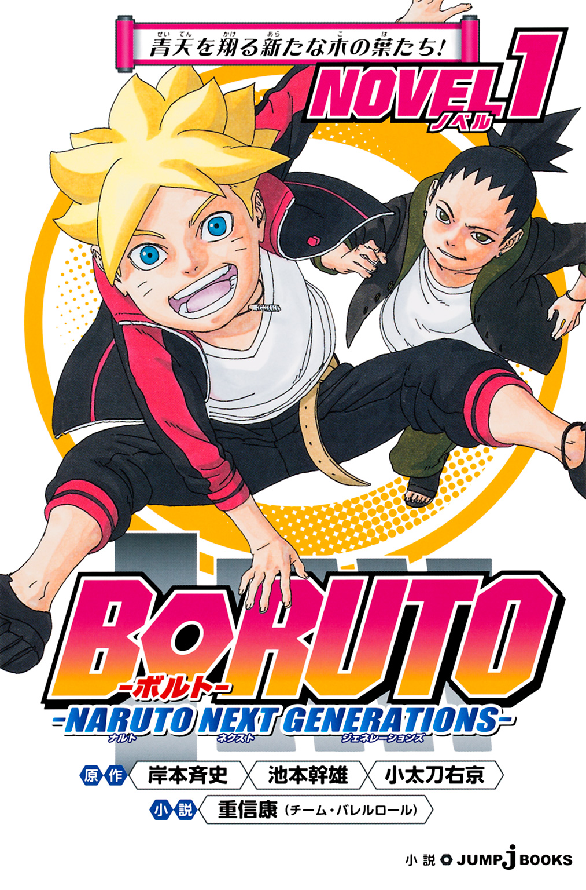
この本は縦書きでレイアウトされています。
また、ご覧になる機種により、表示の差が認められることがあります。
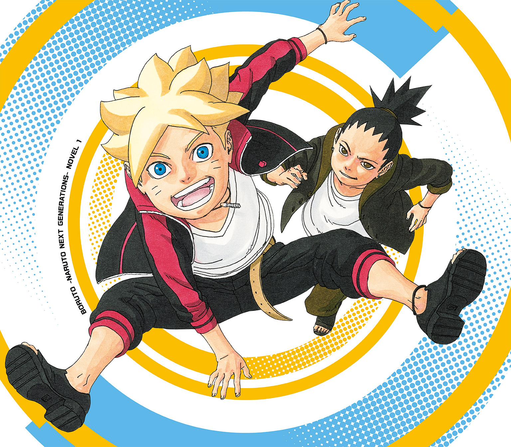
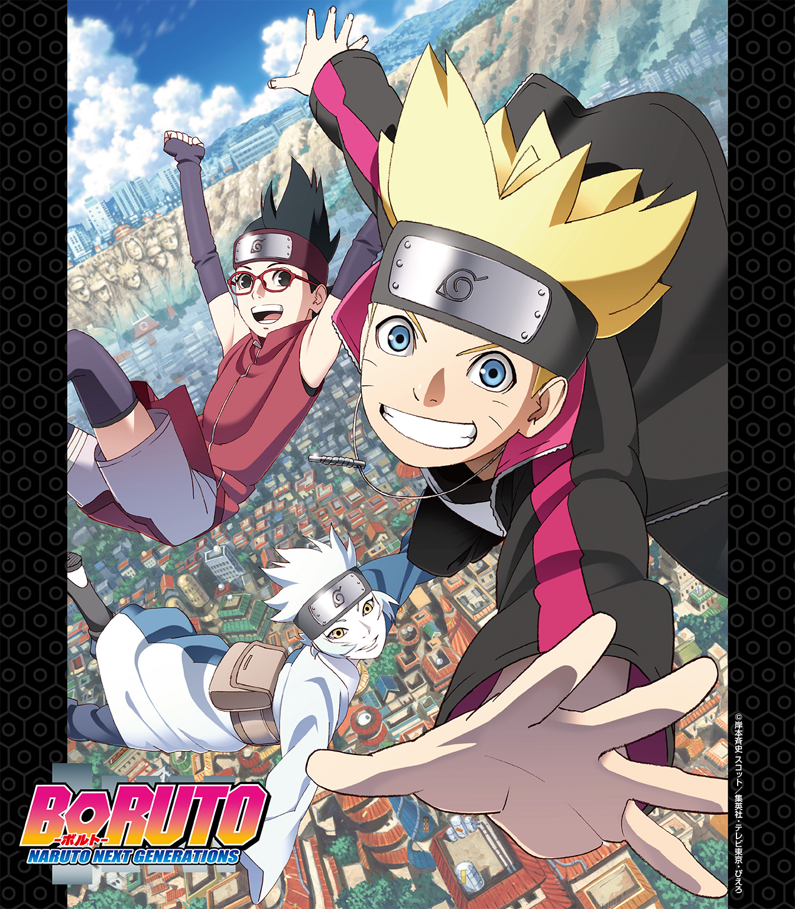
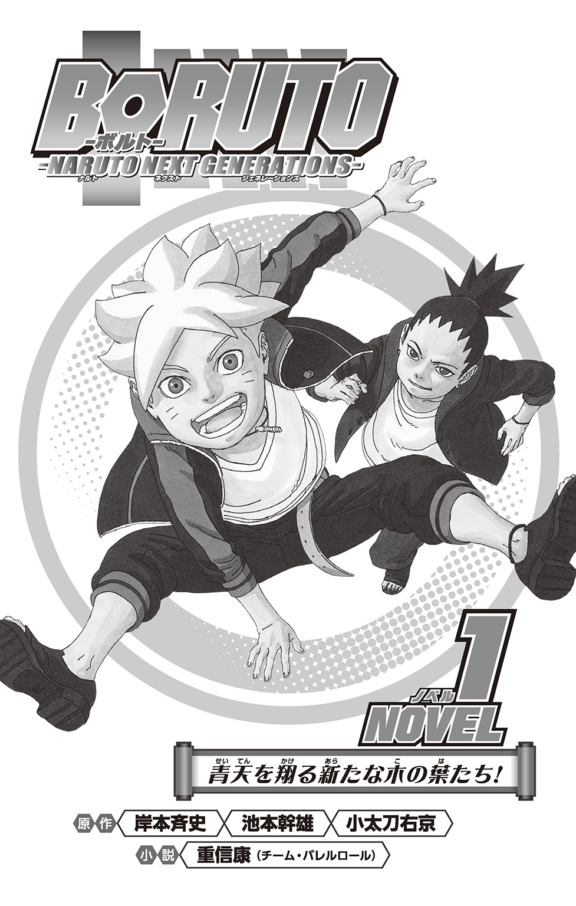
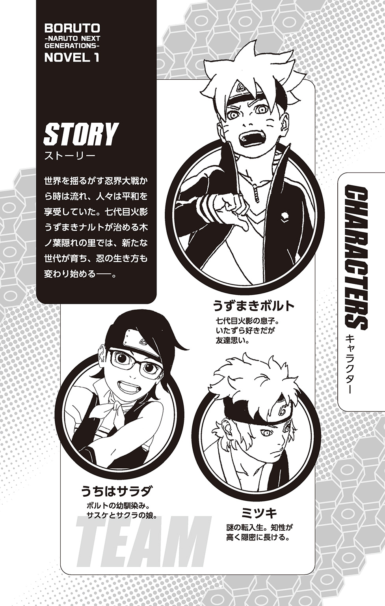
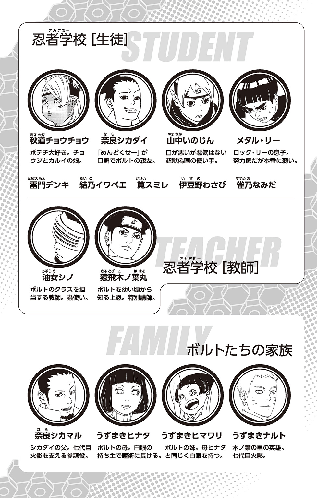
CONTENTS
この作品はフィクションです。
実在の人物・団体・事件などにはいっさい関係ありません。
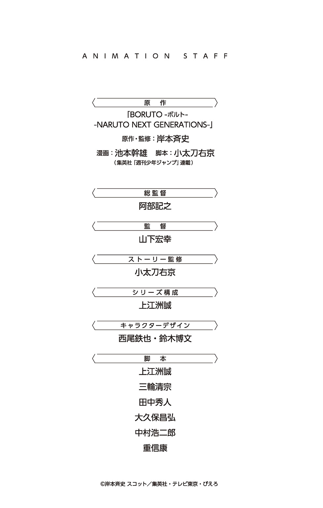
木ノ葉隠れの里。
忍五大国の一つ、火の国に築かれた、もっとも強大な忍者の里だ。
その風景は、忍者の隠れ里と聞いて想像されるような場所とはだいぶ異なっている。
街には色とりどりの店やビルなどが所狭しと建ち並び、巨大なモニターがニュース映像やコマーシャルを流す下を、多くの人々がせわしなく行き交う。
新市街と呼ばれる新たに広がったエリアには、高層ビルすら珍しくない。
もはや里という呼び名に違和感を覚えるほどの、文字通りの大都市だ。
――第四次忍界大戦と呼ばれる一連の戦いから、はや十数年。
その戦争で当時壊滅的な被害を受けた木ノ葉隠れの里も、新たな指導者である七代目火影の統治の下で、大きな発展を遂げていた。
かつてはいがみ合っていた五大国も、大戦における共闘をきっかけに友好的な関係を築いて久しい。
もはや、忍たちが死力を尽くして争い合うことが日常だった時代も、遠い昔のようだ。
かつて多くの者たちが夢見たような、豊かで平和な世が訪れていた。
そして――そんな里の中心街の人ごみを。
疾風のように駆け抜けてゆく、二つの影があった。
雑踏の足下を器用にすり抜け、身長よりも高い場所にある看板にジャンプで飛びついて、そのままビルの屋上に駆け登る。
かと思えば隣の建物に軽々と飛び移って、壁を三角飛びで乗り越えると、手すりを足場にして階段を一気に滑り下りる。
野生の猿顔負けの、超人的な移動術だ。
そんな身体能力を持つ者は、忍者しかありえない。
だが、よく見れば二人はどちらも、一人前の忍の証である金属の額当てすらつけていない、年端もいかない少年だった。
「おい、ボルト！ 待てったら！ そんなに急がなきゃなんねーくらいヤバいのかよ!?」
オールバックにした髪を短く結び、おでこを目立たせた少年が、先に先にと急ぐ友人めがけて叫んだ。
「ああ、ヤバいぜシカダイ！ ヤバいったらヤバい、もう一刻の猶予もないってばさ！」
特徴的な口ぐせの語尾で答えたのは、ボルトと呼ばれた、黄色がかった金髪の少年だ。大きな蒼い瞳が、いたずらっぽい色を湛えている。
彼らが追い求めるものは、あらゆる障害物を最短で突っ切った先にある。
それは重要機密を記した忍の密書でも、敵に囚われ助けを待つ仲間でもない。
やがて、最後の邪魔な建物を乗り越えたボルトが、空中に勢いよくジャンプで飛び出しつつニカッと微笑んだ。
眼下には、新商品ののぼりを掲げたハンバーガーショップ。
「......やったぜ！ まだ売り切れの表示が出てねぇ！ 期間限定アオトウガラシバーガー、間に合ったぜっ！」
グッとガッツポーズしつつ着地するボルトを追いながら、シカダイはやれやれと、盛大にため息をついた。
＊ ＊ ＊
うららかな日差しが照らす、午後の新市街。
ゴトゴトと規則的な音をたて、乗客を満載した細長い鉄の箱が、レールの上を軽快に進んでゆく。
雷車と呼ばれる、近年になって新たに実用化された運搬手段だ。
その屋根に、ちょこんと並んで座るさっきの少年二人。
「いや〜危なかったぜ。まさか、コイツの発売期間が今日までだったなんてな〜」
ワクワクした表情で、ハンバーガーの包みを開けるボルト。
「......ったく。なんでオレまで、こんなめんどくせーことに付き合わされにゃなんねーんだか......」
そんな友人を横目に、再びため息をつくシカダイ。
面倒を何よりも嫌う彼は、どうしてボルトのようなトラブルメーカーとつるんでいるのか、時々自分でも不思議になる。
「なんだ、食わねーのか？ だったらくれよ」
「いや、食うけどよ！」
はむっ、と同時にかぶりつく。
直後、二人の顔がみるみる真っ赤になったかと思うと、
「「か......辛ぁぁぁぁぁッッッ!?」」
雷車の走行音にも負けない、ハモった叫び声が響き渡った。
「な、なんだコリャ!? マジ、ありえねー！」
慌ててイチゴシェイクのストローをくわえるシカダイだったが、同じようにひどい目に遭ったボルトはというと、
「へへっ......いや〜、想像以上だったな！ ま、これだから限定モンは面白ぇんだよな、当たり外れがでかいのも楽しみのうちだってばさ！」
ひりひりする舌を屋根の上の空気でさましながら、楽しそうに笑っている。
そんな無邪気なリアクションを見せつけられれば、シカダイも苦笑するしかない。
「ったく。お前には呆れるよ」
そうして、笑い合いながら揺られることしばし。
「にしても......この雷車ってのは楽でいいな。これがありゃ、自分の足で歩かなくてもいいんだもんな」
里の風景を横目に、素直な感想を口にするボルト。
視線の先では、新市街の高層ビル群が陽光を反射してきらきらと輝いている。
「近代化の波ってヤツだな。古臭かった木ノ葉の里も、こうやって一つずつ便利になっていくんだよ」
「ふーん......」
友人の少し大人びた言葉も、ボルトにはいまいちピンと来ない様子だ。
彼が物心ついた頃には、発展した市街地もハンバーガーショップも、すでに見慣れた光景だった。それがない時代の風景など、それこそ歴史の本の中にしか出てこない。
「ま、そんな中でオレたちは、明日から古臭い忍者アカデミーに通わされるワケだが」
「あ！ そういや、明日からか！」
ハンバーガーを口から離し、ハッとするボルトに、シカダイは呆れた表情だ。
「お前なぁ......入学準備とか、色々めんどくせーことあるんだぞ？ 大丈夫か？」
「ふーん。ま、なんとかなるだろ」
焦るでもなく、ボルトはどこか他人ごとのように答える。
「おいおい。オヤジさんから話とか、聞いてないのかよ」
思わずそう口に出した直後、父に似て頭の回転が速いシカダイは内心『まずったかな』と考えた。案の定、ボルトが一瞬押し黙る。
この少年にとって父親の話題は、少しデリケートなものなのだ。
なぜなら......ボルトの父は。
「......いや、特に。忙しくてそれどころじゃねーみたいだし？ いつものことだけどよ。ま、入学式とか、出ても出なくても大して変わんねーっつうか......」
グレープソーダのストローをくわえて、流れていく風景をぼんやり見つめるボルト。
その表情は、シカダイからは見えない。
「そもそも、オレらはもう忍者としての基本的な訓練とか、家でやらされてるクチだろ。今さらアカデミーとかダセェもんに、わざわざ通うイミあんのかね」
愚痴る友人を前に、やれやれ......と心の中で、奈良シカダイは今日何度目かのため息をついた。思わず、きつい言葉が口をついて出る。
「なあボルト......あんまり、オヤジさんの顔に泥を塗るようなマネはすんなよ？」
「!! んだと!?」
ムッとした顔で向き直ったボルトの口に、シカダイはすかさず食べ残しの限定バーガーを突っ込んだ。
「むぐっ!?」
「お前の母ちゃんにも、言われてんだよ。くれぐれも息子をよろしく頼む......ってな」
少し真面目な声音になって釘を刺すシカダイ。
途端に、リスのように膨れたボルトの顔から反抗心が失せていった。
「んむぐぐ？ ......もぎゅ、ぐむむ......」
もぐもぐと動く口の形からすると『母ちゃんにか......』と言っているらしい。
父親には反発しても、母親を持ち出されれば弱いことを、シカダイは以前からの家族ぐるみの付き合いでよく知っているのだ。
「そーゆーワケだ。ま、この雷車と同じようなもんさ」
「んあ？ どういうことだ？」
ようやく口内の激辛バーガーを咀嚼し終えたボルトの怪訝顔。
「レールさえ外れなきゃ、あとは目的地まで楽々だ。乗れるうちはおとなしく乗っとけ、って話だよ」
子どもらしくない、父親似と言われる老成した笑みを口元に浮かべると、シカダイはちょうど雷車とすれ違う電柱に器用に飛び移った。
「じゃーな！ 明日の入学式、初日から遅刻とかすんなよ！」
「うるせー」
一人、残されたボルトは、ぶすっとした顔で屋根にあぐらをかいた。
ふと見ると、遠景に巨大な物体が目に入り、それがますます彼を不機嫌にさせる。
火影岩。
初代火影、千手柱間をはじめとする歴代の火影七人の顔を岩肌に刻んだ、木ノ葉隠れの里きっての名所だ。
火影、すなわち火の国の忍者たちの頂点。
里のあらゆる物事において最終的な決定権を持つ代表者であり、里の象徴そのもの。里を一つの国に見立てれば、国家元首にも等しい存在だ。
この里に住む者はみな、尊敬と感謝の気持ちをこめて火影岩を見上げるだろう。
だが、ボルトが今そこに送っている視線は、反抗心たっぷりの複雑なそれだった。
彼の目は、七代目火影の顔岩へとまっすぐ向けられている。
「......父ちゃん、か」
うずまきナルト。
それが彼、うずまきボルトの父親の名だ。
第四次忍界大戦を終結に導いた〝木ノ葉の英雄〟。多くの人々に慕われ、忍五大国が協調する立役者となった偉大な人物。
誰もがボルトを見て、そして言う。〝英雄の息子〟と。
人々にとって彼は、うずまきボルト、ではない。〝うずまきナルトの息子〟なのだ。
ボルトにはそれがどうにも、腹立たしい。気に入らない。
しかも、ナルトは彼にとっては偉大な英雄でもなんでもない。昔の活躍の話など、子供にとっては歴史の教科書の中のことと同じくらい遠いものだ。
彼が知っているのは、いつも火影の激務で仕事場にこもっていたり、セレモニーやら何やらで飛び回っている社会人の父だ。たまに家に帰ってきたと思ったら、ボロ雑巾のようになってグースカ寝ているのがほとんど。母親のヒナタや妹のヒマワリとも、ろくに一緒の時間を作れていない。そんな日常が昔からずっと続いている。
もちろん、大人には仕事や立場があるからある程度は仕方ないのだとわからないほど、ボルトは子供ではない。だが、だからといって割り切れるほど大人でもなかった。
「ふん......あんな父ちゃんがなんだ。オレには、関係ねぇ」
ぼそりとつぶやき、勢いよく立ち上がって青い空を見上げる。
「見てろよ！ いつか、かましてやっからなーっ!!」
顔岩めがけ、反抗の言葉を精一杯叫ぶ。
火影の相談役を務める奈良シカマルの息子でもあるシカダイはああ言ったが、彼にとってレールに乗っかった人生なんかまっぴらだ。
あんな父親の敷いたレールなんか、クソ食らえ。火影も、火影みたいな忍者になることを目指して能天気に勉強する忍者学校も、クソ食らえだ。
それが、うずまきボルトという少年だった。
「おい、てめぇどこのガキだ!? そんなとこに乗っちゃ危ないだろ！」
叫び声を聞きつけて機関室から顔を出した運転士が、屋根の上の不審な少年に向けて怒声を張りあげた。
「うわっとと、悪い悪い！」
慌ててハンバーガーとグレープソーダを抱えつつ、シカダイがやったように手頃な電柱めがけて飛び移るボルト。
そのまま足を引っかけぶら下がって、眼下の町並みをぼんやり眺めていたが......。
「ん？ なんだ、ありゃ」
市街地のやや奥まったところにある、薄暗い路地裏。
そこで展開されている光景が、ボルトの興味を引いたのだ。
＊ ＊ ＊
どん、と体が強く突き飛ばされる嫌な衝撃。
地面に尻餅をついた雷門デンキは、白く優しげな顔を恐怖で余計に青白くして、自分を取り囲む三人の不良少年たちを見上げた。
「も、もういいでしょ......お財布は渡したんだからさ......」
衝撃で落ちた眼鏡を慌てて拾いつつ、おずおずと抗議する。
彼らはいつものようにデンキをここに連れ込み、財布を丸ごとカツアゲしたのだ。
「へへっ、まあそうなんだけど？ お前があんまり素直に渡すもんだからよぉ」
「こっちもやりがいがないっつーか？」
「そそ。ま、ボコってから盗るか、盗ってからボコるかの違いっつーことで」
下卑た笑いを交わして、腕をポキポキ鳴らしながらデンキに迫る三人。
「そ、そんな......！」
痛い目に遭いたくないから観念して財布を渡したのに、遊び半分でやっぱり殴られるなんて冗談ではなかった。
だが、これまでがそうだったように、デンキを助けてくれる者などここにはいない。ひ弱な彼の腕力では、三人どころか一人にも勝てないし、そもそもいじめっ子に反抗しようという勇気を持ち合わせてもいなかった。
「そーいうわけで、オラよっ！」
奪った財布を持ったまま、先頭のリーダーが拳を振りかぶる。
せめて、眼鏡は割られませんように......そうなればまた、父親にバレてひどく怒られる。
デンキはぎゅっと目を閉じ、襲いくるはずの衝撃に耐えようとした。
が、しかし。
「ぶわっ!? つ、冷てっ!?」
だしぬけにバシャッという水音があがり、頭をソーダまみれにされた不良のリーダーが間抜けな叫びをあげた。
「わりーわりー。ちょっと手が滑っちまった」
場違いなほどさわやかな声。その場の全員が、そっちを見上げる。
裏路地の上、建物の間に張り渡された細いケーブルの上に器用に立って、グレープソーダのカップを傾けている少年が一人......そう、ボルトだ。
「て、めェッ......!!」
「そいつの財布、返してやれよ。そしたら、見逃してやらないこともないぜ」
堂々と仁王立ちして宣言する。
「や、野郎、ふざけやがって！」
「てめー、降りてこい！」
カッと血が上った不良少年たちは、口々に怒声をぶつける。
ボルトはニヤリと笑い、
「へえ、降りりゃいいのか？」
ふわっと、後ろに倒れ込むようにして高さ数メートルもあるケーブルからダイブする。
「あ、危なっ......!?」
その身を案じ、短く叫ぶデンキだったが、次に起こったことは彼の想像を超えていた。
「......影分身の術っ!!」
垂直落下するボルトの手が、素早く印を形作る。
ボボンッ！ と不可思議な煙が上がるや、なんと、三人に増えたボルトが次々と着地していくではないか。
残像の類いではなく、それぞれが実体を持ち個別に行動できる影分身。これぞ、彼の父親も得意中の得意とした忍術である。
「て......てめッ、忍者かぁっ!?」
低い姿勢で滑るように高速接近してくるボルトたちを、慌ててパンチやキックで迎撃しようとする不良グループ。
だが、そんな動きなど幼い頃から忍者としての訓練を受けたボルトには、いやボルトたちにとっては、ハエが止まるほどのろく見える。
「ぐわっ！」
「うぎゃっ!?」
影分身を交えた一対一に持ち込まれ、不良の一人はカウンター気味の飛び蹴りでダウン。もう一人は飛びつかれてゴミの山に頭から突っ込まされ、リーダーのパンチもあっさり見切られてかわされる。
「忍者なんか、どーでもいーけど......なっ！」
そしてボルトの振りかぶった拳......ではなく、そこに握られたモノが、リーダーのぽかんと開いた口にぶち込まれた。
「むぐッ!? かッ......辛ぁぁぁぁっっ!?」
「へへっ！ もう手に入んない限定バーガー、せいぜい味わって食えってばさ！」
激辛のカタマリを詰め込まれ、真っ赤になってぶっ倒れる不良。
その背後で、役目を終えた分身たちがボボンッと消滅した。
「ったく......ダッセーことしてんなよ。――ほら！」
「えっ、あっ!?」
不良の手から取り戻した財布を、デンキに投げ渡すボルト。
「き、君は......」
思わぬ救い主に、ぱちくりした目を向けるデンキ。だがそこに、
「おい、財布一つにいつまでかかってんだよ！」
「......うわっ、なんだこりゃ!? おい、お前がやったのか!?」
表通りの方からぞろぞろと現れた新手の不良仲間が、ボルトたちに敵意を向けた。
「やべっ、まだ仲間がいたのか！ 影分身、連続でやると疲れるんだよな......よし、逃げるぞ！」
「え、えっ!? ええっ、ちょっと待っ......うわわぁっ!?」
デンキの手を引き、ボルトは不良たちの合間を突っ切るように駆け出す。
眼鏡の少年の慌て声が、再び響き渡った。
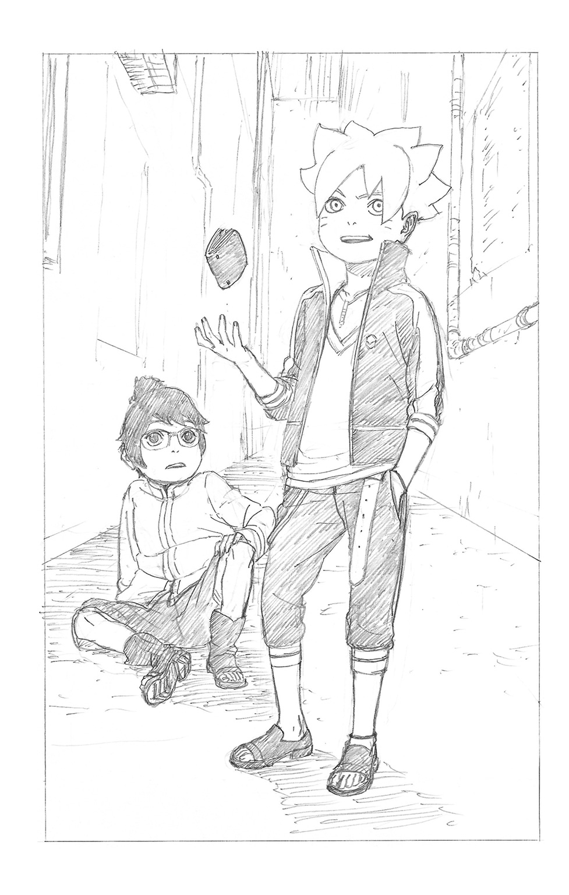
＊ ＊ ＊
「ぜぇ、はぁ......ぜぇ、はぁ......」
どこかのビルの屋上で、荒い息をつくデンキ。
一体自分がどうやってここまで逃げてこられたのかわからない。
「ふ〜。なんとか、まいたみたいだな！」
服のホコリを払い落としつつ能天気に笑う、この破天荒な少年に引きずられるようにして、いつのまにやら二人で逃げ延びてきたのだ。
「うう......」
これからのことを思い、どんよりした気持ちでペタンと座り込むデンキ。
「......おい、大丈夫かよ？」
「大丈夫か、じゃないよ......なんで、あんな余計なことしてくれたのさ......？」
「え？」
ほんの少しだけ恨みがましい目で、眼鏡の少年はボルトを見上げる。
「あんなヤツら、少しガマンしてれば飽きるんだ......なのに、あんなふうにやり返しちゃったら、明日からもっとニラまれるじゃないか......」
「おいおい、助けてやったのにそれかよ？」
感謝されるために助けたわけではないが、予想外の反応に、さすがのボルトもいささか呆れ顔になる。
「......殴られそうになったのを助けてくれたことには、感謝してるよ。でも、財布を取り返してほしかったわけじゃない......あれくらい、僕にははした金なんだ」
（はした金、って。結構ずっしりしてたぞ、アレ）
困惑より先に、ボルトの胸には苛立ちが湧き上がってきた。
不良たちにではない。目の前の、デンキの態度への苛立ちだ。
「お前なぁ......！ そんなだからカモにされっぱなしなんだよ。あんなことされてムカつかないのか？ ムカついたら、ガツンと言ってやれよ！」
座り込んで同じ高さに目線を合わせ、言いたいことを言うボルト。
その剣幕から目をそらすように、デンキは体育座りの姿勢で顔を伏せた。
「君は......強いからそんなことが言えるんだ。僕は、君みたいに強いわけじゃないから......」
「はぁ？」
「だってそうでしょ。さっきみたいなすごい忍術、使えるじゃないか......君って、忍者アカデミーの生徒なの？」
アカデミー。思わぬ単語にボルトは苦笑いし、
「あー......ま、明日から、だけどな」
そう答えると、デンキは少し驚いて顔を上げた。
「え？ それじゃあ......僕も同じだ」
「お、そうなんだ！ じゃあ、明日からよろしくな！ オレ、ボルトだってばさ！」
にかっと笑う、太陽を思わせる笑顔。
今まで見たこともないような、青空の色をした瞳がまっすぐデンキを見据える。
「あ、う、うん......ぼ、僕は、デンキ。よろしく......ね」
勢いに押し負けるようにして名乗り、差し出された手を握る。
その手は、燃えるように熱かった。
＊ ＊ ＊
「ええええ!? んじゃお前の家って、あの雷門カンパニー!?」
口に入れたジュースを思わず噴き出さんばかりの勢いで、驚愕するボルト。
あれから、一緒にあれこれ喋りつつの夕暮れの帰り道。
デンキが出した名は、この国なら子供でも知っている大企業だった。家電製品から重機まで......あの雷車を開発したのもそうだ。里のあちこちに大きな広告や看板、ＴＶではＣＭ、その社名が目に入らない日はない。
「すっげーじゃん、オンゾーシってやつ？ なあ、今度新作ゲーム優先で予約させてくれよ！」
「う、うん、別にいいけど......」
目を輝かせて詰め寄るボルトに、若干タジタジのデンキ。
「ん？ じゃあ、なんで忍者アカデミーになんか行くんだ？ 将来家を継ぐんなら、忍者になんかならなくても何不自由なく暮らせるだろ」
「......父親の、意向なんだ」
当然の疑問に、デンキは表情を曇らせた。
父、というキーワードに、ボルトがぴくりと反応する。
「僕の父はね......元々忍者で、第四次忍界大戦で功績をあげて、それから興した会社を大きくしたんだ。だから、僕にも忍者になってほしいと考えてる」
「............」
「火影様みたいな英雄に、さ。そんなの、僕なんかになれっこないのに......」
無言で聞いていたボルトは、歩きながら見もせずに飲み終えた空き缶を投げる。
からん、と乾いた音をたてて、それは街路のゴミ箱に飛び込んだ。
「なるほどね......デンキ、お前は忍者になりたいのか？」
「ううん、別に。戦うなんて怖いし、僕は機械とかいじってる方が好きで......だから、普通に父さんの会社で働いたりしたいのに......」
ますます声がトーンを落としていく。
ボルトは身軽に地面を蹴ると、道路と平行して伸びる手すりの上に飛び乗った。
「じゃあ、んなの無視すりゃいーじゃん。オヤジの一方的な命令なんか、はいはいって聞く必要ないだろ」
「無理だよ......父さんに逆らったことなんて、ないよ」
「はっ！ あのなデンキ、うちのバカ親父ときたら朝から晩まで仕事仕事、オレたち家族をしょっちゅうほったらかしだぜ？ だからオレは！」
芝居がかったしぐさで、どん、とボルトは胸を叩いた。
「親に逆らうことに、なんの抵抗もないっ！」
「......そ、そうなんだ」
そんなことを自信満々に言われても、デンキはどうリアクションしていいかわからず、顔を伏せてとぼとぼ歩き続けるしかない。
「ったく......あのな、さっきも言ったけど、ガツンとかましゃいいんだよ、ガツンと。親父がなんだ！ ってさ。オレはそうしてるってばさ」
「だから、そんなこと言われても......」
手すりから飛び降り、一方的にまくしたてるボルト。
「ふっふっふ、今だってクソ親父をギャフンと言わせる計画を練ってる最中だ。デンキ、お前になら教えてやってもいいぜ！ いいか、まず、これは雷車に乗ってる時に思いついたんだけど......」
あーだこーだと、聞かれてもいないのによくわからないイタズラの計画を喋り始める。だが、デンキは少々あっけにとられつつも、不思議と嫌な気はしなかった。
このボルトという破天荒な少年が、口は悪いが根本のところで素直で優しい人間であることは、短い触れ合いの中でも十分に伝わってきた。なんだかんだで、自分の世話を焼いてくれているのだ。
（そういえば、こんなふうに同い年の子と話すのって初めてだな......僕、友達とか今まで一人もいなかったから当たり前か......）
雷門カンパニーの御曹司という望んだわけでもない境遇が、デンキに対等の友人を作りにくくさせていた。おべっかを使う大人や、さっきのような不良は寄ってきても、なんの先入観もなく接してくれるのはボルトが初めてだった。
それに父親に何か思うところがあるという境遇も、デンキに共感を覚えさせた。
（ボルトくん、か）
少し顔を上げ、まだ楽しそうに話し続けている黄色い金髪の少年を見上げる。
「......んで、これが母ちゃんにバレないようにするのが大変でさ。......ん、母ちゃん......？ って、やべ！ 今、何時かわかるか!?」
「えっ、もうすぐ七時くらいだけど......？」
親からのプレゼントの高級時計に目を走らせ答えると、ボルトはみるみる青ざめた顔になった。
「やっべ！ 晩メシの時間に遅れると、母ちゃんに怒られる！」
「え？ さっき、親に逆らうことにはなんの抵抗もない、って......」
「それはバカ親父の方！ 母ちゃんは別だってばさ！ 怒るとマジ、すっげー怖いんだよ......！」
ボルトの母ヒナタは、里の名門である日向一族の宗家から嫁入りした女性だ。
お嬢様としての出自通り、普段はおっとり柔和な笑みを湛えた優しい人物だが、絶対に自分の言葉を曲げない芯の強さを内面に持ち、ひとたび本気で怒った時の威圧感ときたら、怖いもの知らずのボルトが恐怖するほど凄まじい。
「じゃあなデンキ、また明日な！ お前も、もうナメられんなよ！」
「う、うん......」
「ガツンだ、ガツン！」
何度も繰り返した言葉を最後に、風のように駆け出したボルトは、あっというまにデンキの視界から消えていった。
（ガツンと......か）
父に、口答えする。
今までの彼なら、思ってもみなかったことだ。
だが、ボルトの不敵な、それでいて太陽のように暖かい笑顔を思い出すと、自分にもほんの少しだけ......勇気が湧いてくるような気がした。
＊ ＊ ＊
「ただいまーっ」
自宅の玄関に勢い良く駆け込み、脱ぎ散らかした靴を慌ててぞんざいに並べ直す。
廊下の向こうから、少し困ったような表情の母ヒナタが、エプロン姿でやってきた。
「ボルト......遅かったわね。今日は、入学のお祝いだってお母さん言ったでしょう？」
一時期はとても長かったらしい母の髪は、主婦となった今は首筋のあたりで綺麗に切り揃えられている。『お前の母ちゃんキレーで若いよな』とよく言われるが、ボルトにとってはどうでもいいことで、特に今はいかに怒りを回避するかの方が大事だ。
「ごめん、母ちゃん。えーと、ほら、入学準備のことでシカダイがどうしてもって言うから付き合いでさ......」
心の中で、すまんシカダイ......と思いつつ言い訳をする。
「本当かしら？ シカダイくんはとてもしっかりしてるからいいけど、あなたは危なっかしいからお母さん心配だわ。お友達を困らせたりしてないでしょうね？」
見透かしたようにとがめる言葉にギクリとしつつ、ボルトは母に続いて居間に向かう。そこに、とてとてと可愛らしい足音をたてて妹のヒマワリが駆け寄ってきた。
「あぶなっかしー！ お兄ちゃん、あぶなっかしー！」
「おっと来るかヒマワリ、そりゃ！」
可愛い妹の突撃を抱きとめ、笑いながらおんぶするボルト。
仲睦まじい兄妹の様子に、ヒナタも思わず相好を崩した。
「もう......ボルト、ちゃんと手は洗うのよ？」
「へいへーい！」
「私もう洗ったよぉ、すごいでしょ」
「おっ、偉いなヒマワリ！」
平和な、一家団欒の光景がそこにあった。
父親がその場にいないことを別にすれば、だが。
＊ ＊ ＊
火影室。
そこは、木ノ葉隠れの里を動かすトップである当代の火影が、日々の執務を執り仕切る仕事場だ。
額縁に入れられた歴代火影の肖像が睨みをきかせる中、広いデスクを圧し潰さんばかりに溢れた報告書や承認待ち書類が、うず高く積まれ山となっている。
「うおお......やってもやっても終わらねーってばよ......！」
うんざりした情ない顔で、その中心に埋もれる男が一人。
長身に、短く刈り揃えられた黄色い金髪。ボルトを成長させればこうなるといった風情の、本来ならさぞ精悍そうな顔つきの男性だ。
うずまきナルト。七代目火影にして、ボルトの実父だ。
息子とは比較にならない数の影分身を出せるナルトだが、そんな反則まがいの人海戦術が可能な体力は、これまでの作業でもう使い果たしていた。
「ま、タイミング悪く、任務やら式典やらが重なっちまったからな......オレも手伝うから、明日の入学式までになんとか片づけようぜ」
こちらはシカダイによく似た顔と髪型の、あごヒゲを生やしたいかにも切れ者そうな男......彼の父、奈良シカマル。
「すまねえってばよ、シカマル......」
ナルトの参謀として、そして副官として公務をサポートする彼の頭脳がなければ、この里はあっというまに機能不全を起こしてしまうだろう。
「ま、いつものことだ。それより、いいのか？ ちょっとでも家に顔出さなくて。しばらく帰ってねーんだろ？」
「家のことはヒナタがやってくれてる。......あいつらもきっと、わかってるってばよ」
だといいがね、という返しを、シカマルは喉元で吞み込んだ。
ナルトは常々、火影となった自分は『この里全体の親』なのだと口にしている。確かに、それは立派なことだとシカマルも思う。
（つっても、そればっかりじゃ割り切れないのがガキの頃ってもんだ。ウチのシカダイは妙に老成してやがるが、ボルトは違うと思うがね......）
とはいえ、それを口にするより先に今はすべきことがある。
この大切な昔馴染みの友が、せっかく築いた家庭に少しでも帰れるチャンスを増やしてやるため、シカマルは黙々と書類の仕分けを手伝い始めた......。
＊ ＊ ＊
「うわー！ すっごーい！」
「おお......！ いっただきまーすっ！」
大皿に載った蒸し魚、ふっくらしたハンバーグ、カニたっぷりのシーフードサラダにポタージュスープ......食卓狭しと並べられた豪勢な料理に、目を輝かせる子供たち。
どれも、ボルトのアカデミー入学を祝ってヒナタが腕によりをかけた逸品だ。
「ふふ......ほんと、あっというま。あんなに小さかったボルトも、明日からもうアカデミーなのね」
感慨深そうな表情で、しみじみとつぶやく母。
「そうそう、お父さんともアカデミーで初めて会ったのよ。あの頃は、ほんと色んなことがあったわ」
「へいへい......何度も聞いたってばさ」
アカデミーに思いを馳せてスイッチが入ったのか、美貌をうっとりと染めて昔語りモードのヒナタ。ノロケを語り出すと止まらない癖は、息子を何度も辟易させている。
「昔のお父さん、イタズラ好きで騒動ばっかり起こすから問題児扱いされてたのよ。講師のイルカ先生......今は校長先生ね、あの人によく怒られてて......ふふ、でもいざという時は本当にかっこ良くてね」
「それも何度も聞いたってば......」
うんざり顔のボルトを尻目に、ニコニコ顔で止まらないヒナタ。この年頃の男の子にとって、両親のノロケ話ほどどうでもいいものもないだろう。
と、その時。
「......お父ちゃん、かえってこないね」
「っ......！」
食べる手を止め、ヒマワリがぽつんと漏らした言葉に、思わず押し黙る二人。
「......ごめんね。今日はお父さん、帰ってこられると思ったんだけど――」
「母ちゃんが謝る必要、ねーよ。いつものことだろ？ あの父ちゃんが、オレらをほったらかしにすんのはさ」
憮然としたボルトの声。楽しいはずの食事の場に、重いムードがよぎった。
「無理を言わないの。お父さんたちが必死に頑張っているおかげで、この里は平和に守られているんだから」
「守るっつったって......何からだよ。忍者が力合わせて戦うような敵も、もうどこにもいねーじゃねぇか......」
英雄たちによって作られた、戦なき平和な世界。
だがそれは同時に、英雄をもう必要としない世界でもあった。
忍者がその戦闘力をもって従事する任務も、治安維持や害獣駆除といった、大規模な戦いとは無縁で地味なものが中心になりつつある。超人的な力も、いささか宝の持ち腐れだ。
そんな世界で、あえて忍者を目指す意味とは、果たしてどこにあるのだろう？ そう疑問を持つ若い世代は、何もボルトだけではない。
事実、アカデミーの入学志望者数も、年々減少しているのが現実だった。
「ボルト......敵との戦いだけが、忍者の仕事ではないのよ？ みんなが無事に暮らすために、やるべきことはいくらでもあるわ」
そんな息子をやんわりと諭すヒナタだが、ボルトにはあまりピンと来ていない様子だ。
「あなたも明日から、アカデミーでそれを少しずつ学ぶのよ。......さ、難しい話はおしまい。デザートのケーキを用意してあるから、一緒に食べましょ」
「わーい！ ケーキだぁー！」
パッと顔を輝かせるヒマワリ。それを機に、食卓に明るい空気が戻った。
＊ ＊ ＊
夜。
ボルトは自室のベッドに寝転び、じっと部屋の隅を見つめていた。
どうにも寝つけない。
さっきの母親との会話が、その時に感じた納得のいかなさと父親への不満が、頭の中でぐるぐるリピートしているのだ。
父・ナルトは、火影になるのが幼少期からの夢だったと、何度もＴＶのインタビューだのなんだので答えている。
あらゆる苦難を乗り越え、決してくじけず、ついには夢を叶えた英雄。
ボルトは、違う。
そんなわかりやすい夢はない。火影だの忍道だのはどうでもいい。
望むことがあるとするなら、もっと小さなことだ。せめて......他の、たとえばシカダイの家族のように、両親がいつも家に一緒に......。
「フン......」
壁沿いに動かした視線が、机の上の写真立てに行き当たり、思わずそこから目をそらして布団にくるまった。
そこには、まだもっと幼かった頃......今のような悩みは何も知らなかった頃のボルトと、ナルトが共に写り、そっくりな満面の笑顔を浮かべている。
ああして父と一緒に屈託なく笑ったのは、果たしていつが最後だっただろうか......？
「......だせー、んだよ」
つぶやいて、ぎゅっと目をつぶった。
＊ ＊ ＊
「忍術科ではなく普通科に行きたい......だと？」
木ノ葉隠れの里でもトップクラスの豪華な建築物、雷門カンパニーの高層ビル。
その最上階で、和装をまとった厳格そうなヒゲ面の男......デンキの父が、じろりと我が子を振り返った。
昔と違い、現在はアカデミーにも普通科が併設されている。これも、忍者の需要が減っている一つの証明と言えた。
「う、うん......父さん、僕は......うあっ!?」
ばん、と頰に熱い衝撃。平手でぶたれたのだ。
尻餅をつくほどの勢いは、昼に不良に殴られた時よりも余程ひどかった。
「まったく、この程度で悲鳴をあげるとは情けない......そんなことでどうする！ これはいよいよ、忍術科で性根を叩き直してもらわねばならんようだな」
ため息をつく父の姿に、デンキは絶望的な気持ちになった。
ボルトの言葉に励まされ、一生分の勇気を振り絞って本当に進みたい道を伝えてみた結果がこれだ。やはり、父に敷かれたレールを外れることなどできそうになかった。
「ぼ、僕は......」
「我が雷門カンパニーの跡取りたるもの、強い男でなければならん。あの忍界きっての英雄、火影様のようにな」
強さ。
強くなければ、父は絶対に認めてくれない。自分の好きなこともできない。だったら。
「強ければ......いいの？ 僕の強さを、証明すれば......好きな勉強をしてもいいの？」
「ふん？ まあ、それができるなら認めてやらんこともない。できるなら、だがな」
切れた唇からにじむ血を飲み込み、ゆらりと立ち上がる。
「............」
父親の、情けなげな視線を痛いほど感じつつ、無言で部屋を出ていくデンキ。
「でも......そんなの、どうすればいいの......？」
ボルトがやったように、あの不良たちを逆に叩きのめす？ いや、そんなことが自分にできるとは思えない。
「強さ......僕に、ボルトくんみたいな強さがあれば......！」
ぎり、と歯嚙みする。
いつしか、デンキはふらふらと家の外を出歩いていた。
どこか故障しているのか、バチバチと明滅する街灯の光で、デンキの影が不気味な形にゆらめいている。
いや――違う。
ゆらめいているのは、影だけでは、ない。
蛇のようなカタチをした、闇色の〝何か〟。それが彼の背後でうねり、のたくり、鎌首をもたげ......何も気づかないままの細い首筋に、がぶりと嚙みついた。
「!?」
びくん、と雷に打たれたように、デンキの四肢がこわばる。
ガクッと一瞬、その全身から力が抜け......再び顔を上げた時、彼はひどく暗い眼をしてニヤリと笑った。
「わかったよ......証明すれば、いいんだろ――僕の、力を！」
＊ ＊ ＊
「やばい、やばいやばいやばいっ！ 遅刻、遅刻するぅぅーっっ!!」
翌朝。
弾丸のように玄関を飛び出し、道路をひた走るボルトの姿があった。
昨夜、柄にもなくなかなか寝つけなかったせいだ。
いくらアカデミーがどうでもよくても、初日から遅刻しては母親の大目玉は避けられない。第一、シカダイにも盛大に笑われてしまうだろう。
しかも、そんなボルトの目の前で無情にも踏切の遮断機が下りた。
カン、カン、カン......という音と共に、雷車が近づいてくる。
「ダメだ、このままじゃ遅刻決定......へへっ、なーんてなっ！」
一転、ニヤリと余裕の表情になって、近くの塀を足場にジャンプ。
何人かの里人の驚き顔を尻目に、次の瞬間、ボルトは電柱のてっぺんへと華麗に飛び移っていた。
「よーし、あとはこの雷車に飛び移れば、楽チン登校計画の完成だってばさ。これぞ、今時の優雅なアカデミーライフってやつだぜ！」
ふふん、と満足げに笑うと、朝のさわやかな空気を胸一杯に深呼吸。
と、そんなボルトの視界の端に、見覚えのある人影が映った。
「んー？ ありゃ、デンキか？」
だが、道を歩く眼鏡の少年の様子はどこかおかしい。
ふらふらとその足下はおぼつかず、まるで見えない何かに引っ張られているかのようだ。しかも、異変はそれだけではなかった。
「え......？」
カシャリ、とチャンネルでも替えるように、ボルトの視界がひとりでに〝切り替わった〟。
その瞳に映ったのは、デンキの体から宙に向けて伸びる、闇色をした半透明の糸のようなモノ。
（なんだ、あれ......？）
反射的に、ゾクリと背筋が震える。それは何か、とても不吉なもののように思えた。
デンキとすれ違う人たちには、異様なその何かは見えていないようだった。もしかしたら、デンキ本人にも。
（どこに向かって、伸びてんだ......？）
糸だか蛇だかよくわからないそれを見定めようと目をこらすが、次の瞬間、フッと視界は元に戻った。いくら目をこすってみても、再び奇妙な何かが映ることはない。
「今のは......？ 気のせい、か？」
しかも、いつのまにやらデンキの姿も消えていた。
「あいつが向かってた方角っつーと......あっちか」
アカデミーとはまったく別方向。何か、胸騒ぎがする。
「......よし！」
ボルトはパシッと、胸の前で掌に拳を叩きつけると、アカデミー方面に向かう雷車に飛び移るのをやめ、デンキの消えた先めがけて跳躍した。
＊ ＊ ＊
「おい！ 出せよ、ここから出せってば！」
「畜生、閉じ込められちまった！」
「誰か！ 誰かいねーのか!?」
人気のない車両置き場に放置された、使われていない雷車。
その内部で必死に声を張りあげ、ロックされたドアを叩いたり蹴ったりしているのは、昨日デンキをカツアゲしていた不良たち三人だ。
彼らはデンキからの『昨日のお詫びがしたい』という呼び出しを受け、半信半疑でこの場所にやってきた。
待っていたのは、ある車両の中に彼らを誘い込むような形でバラ撒かれた大量の紙幣。
もちろん、仕返しの罠という線は考えたが、あんな弱虫に何ができると彼らはナメてかかり、半ば面白がって誘いに乗った結果がこのザマというわけだ。
「まったく......こんな手にあっさりかかるなんてほんと単純だね、君たち。どこまでバカなの？」
隣の車両から響く、心底バカにしたような声。
「デンキ、てめぇ！ なんのつもりだ！」
慌てて三人がそっちに駆け寄ろうとした時、ガタンッと車両が動き始めた。
「なっ!?」
放置された車両といっても、レールの上に乗っている。今は建設中でまだ使われていない路線だが、ぐるりと里の外周を一周するほどの長さがあるのだ。
みるみる加速していく車両は、ガタギシとどこか不吉な音をたてて揺れ始めた。
「ウチの会社が作ったものだからね。やろうと思えば、動かすくらいは僕一人でもできる......」
「な、何考えてんだ、止めろよ!?」
うすら笑いを浮かべるデンキと同じ車両に駆け込んだ不良の頭上で、メキメキと音をたてて雷車の屋根の一部が吹き飛んだ。
すでに相当なスピードが出ているらしく、ビュオオ......と風の音が耳をつんざく。
「なっ......!?」
「知らないの？ 不良品なんだよ、試作品のこの車両。ブレーキも効かないし。君たちと一緒だね......そう、不良品は、廃棄しなきゃね」
くすくす笑うデンキの、どこか人間味を失った異様なたたずまいに、不良たちの背にゾッと冷たいものが走った。
「それにほら、そろそろ見えるだろ？ 同じレールにもう一本、逆方向から不良品を走らせてみたんだ......無人の雷車をね」
「え!?」
不良が慌てて窓に顔を貼りつけると、緩くカーブしたレールの遥か遠くに、確かにもう一台の雷車が見える。
このままでは、あと何分もしないうちに......何が起こるかは、考えるまでもない。
「わかる？ そう、ちょっと不良品同士がぶつかるだけさ......ガツン、ってね。あっははははははっっ!!」
「ひ、ひぃ......！」
「じょ、冗談じゃ......っ」
すぐそこに迫った死の予感、そして奇妙に落ち着いているデンキの異様さに圧倒され、不良たちはすっかり腰を抜かしてへたり込んだ。
「な、なんでこんなことすんだよ!? し、死にたくないぃっ！」
「ちょ......ちょっとからかっただけじゃねーか！ やめてくれよ、降ろしてくれよぉ！」
泣きわめく不良たちを、デンキは冷ややかな目で見下ろすばかりだ。
「ま、君たちにとっては、ちょっとの遊びだったんだろうね。僕がどんなに苦しんだか、想像もしないで......でも今の僕は、泣き寝入りしかできなかった昨日までの僕じゃない。そう、父さんに認めてもらうんだ......！ 僕の、強さを......っ！」
「なっ何言ってんだよコイツ、意味わかんねぇぇ......！」
と、その時。
ひょっこりと、天井の裂け目から黄色い頭が覗いた。
「よ！ 入学式にも行かずに何やってんだ、デンキ？」
「!! 君は......なぜここに」
場違いに軽い口調で、そのままくるっと空中回転して車内に着地するボルト。
「いや、お前見かけて気になってさ。そしたら雷車が急に動き出したんで、屋根に飛び乗ったってワケ」
「............」
「仕返しなら、もう十分だろ？ コイツら、かわいそーなくらいにビビっちまってる」
ガクガク震える不良たちを指すボルトだが、デンキはゆっくりと首を振る。
「そういうことじゃないんだよ......僕は父さんに、認めてもらうためにこれをやるんだ。自分一人の力で敵を叩き潰せる、強い男だって証明するためにね......！」
「いい加減にしろ、いくらなんでもやりすぎだ！ それに、これじゃお前だって衝突に巻き込まれて死んじまうってばさ!?」
当然の指摘だったが、ハッと鼻で笑い飛ばし、眼鏡をくいっと押し上げるデンキ。
「どうでもいいんだよ、そんなことはもう......！ じゃあ止めてみなよボルトくん、そろそろ進路切り替えポイントを通り過ぎちゃうよ？」
「ちっ......！」
急ぎ、屋根の剝がれた衝撃で割れた窓から身を乗り出すと、太股に巻いたホルスターからクナイを取り出す。忍者アカデミーに入学する生徒としては当然の準備だ。
大急ぎで狙いをつけて投擲されたクナイは、だが切り替えレバーをギリギリかすめただけで、空しく宙に消えた。
「ははっ、惜しい惜しい。ろくに狙えてないのに、当たっただけでもすごいよ」
「デンキ......どうしちまったんだよ、お前！」
自分の命もかかっているのに、まるで他人ごとのようにけらけら笑う異様な姿にボルトは不審を覚え、キッとその暗い瞳を真正面から見据えた。
「僕にとっては、父さんが......絶対なんだ。期待に、応えないと......」
「父ちゃんが、だと......？」
「そうだよ......父さんに認められて、許可を貰わなきゃ......僕は、何もできないんだよ！ 好きなことも、本当にやりたいことも......何もかもっ！」
血を吐くような叫び声に、不良たちがヒッと怯えて車両の隅で縮こまる。
だが、ボルトは物怖じもせずに、ずい、と逆に歩み寄って距離を詰めた。
「バカか、お前！ いらねーんだよ、許可なんて！ お前は、いちいち親の顔色うかがわなきゃ何もできないのか!? せっかくホントにやりたいことがあんなら、そんなの無視して突っぱねちまえばいいだろうがよっ！」
「な......っ」
ボルトの剣幕に、初めてデンキが気圧された。ぺたん、と車内の床にへたり込む。
青く大きな瞳にまっすぐ見据えられ、その視線が一瞬、迷うように揺れた。
デンキの体を取りまく闇色の何かが、同時に薄れてゆく。
「ぼ......僕は......！」
「おっおい、何やってんだよぉ!? もう前から来てんだよォ、雷車が！」
悲鳴じみた不良たちの叫び。
「くっ！」
進行方向を振り返れば、行く手から迫る無人車両はもうハッキリと見える。
このままでは、正面衝突まで秒読み段階だ。
額に汗を浮かべたボルトの袖を、デンキが弱々しくつかんだ。
「君まで......巻き込むつもりじゃ......僕、どうして、こんなことを......？」
さっきまでの異様な気配が、薄れかけていた。
ボルトはそんなデンキめがけ、
「......大丈夫だ、任せとけ！」
ニッと不敵に笑い、雷車の屋根の残った部分に飛び乗った。
「影分身の術っ!!」
忍術の発動に必要な印を結び、今のボルトの実力で出せる最大の数、三体の分身を背後に出現させる。
「狙いはあの切り替えレバーだ、やるぞぉぉぉっっ!!」
「「「おうッ!!」」」
号令一閃、それぞれの両足を手でつかんで数珠つなぎになったボルトたちが、人間ロープとなって雷車から伸びた。
もうすぐ通過する次の進路切り替えレバーに、こうやって手を届かせる作戦だ。
「ぐっ......！ 長さ、足りるか......!?」
両脇に分身の足先を抱え、三体ぶんの体重を支えるために、今にも浮いて持っていかれそうな足を必死で踏ん張るボルト本体。
次のレバーが、正面衝突を避ける正真正銘のラストチャンス。届かなければ、乗っている全員がゲームオーバーだ。
「もう......ちょっと......ッ！」
ゴウゴウとうなる風に流されそうになりながら、一番先端の分身ボルトが手を伸ばす。
だが、みるみる迫るレバーに届かせるには、限界まで身を乗り出し、すべての分身が体を精一杯伸ばしてもまだ足りない！
「デンキぃぃぃぃっっ!!」
「!!」
雷に打たれたように、眼鏡の少年が顔を上げた。
「お前の力を、貸してくれぇぇぇぇぇっっ!!」
友達が、呼んでいる。
力を貸してほしいと。他の誰でもない、自分自身の力を。
「......ボルトくん!!」
反射的に叫ぶと同時に、デンキの中に取り憑いていた、あのドロドロした闇色の何かは吹き飛ぶようにして消えていた。体が、心が軽い。
キッと決意の表情で駆け出し、穴から屋根によじ上る。
身を乗り出しすぎて今にも落ちそうな、ボルトの体にしがみついて支える。
「ナイス、だっ!! ......うおぉぉぉぉっっ!!」
デンキに支えられたことで追加の長さを得られた手が、レバーに届いた。すれ違う瞬間に力一杯引くと、ガコン、とレールが切り替わる。間一髪！
けたたましい音と共に、壊れかけた車体のすぐ横を無人車両が駆け抜けていく。
「やったぜ、デンキ！」
ボボン、と分身を消しつつ、デンキに下半身を支えられほぼ宙吊り状態になったボルトが、それでもガッツポーズを決めた......が。
「も......もう、ダメ......っ！」
ひ弱なデンキの腕力は、限界を迎えようとしていた。むしろ、今まで支えていられたのが奇跡だ。
「え？ ちょ、マジか!?」
一転、焦りの表情で慌てふためくボルト。しかも前方からは、線路脇の電柱が迫る！
激突が先か、一人あるいは二人まとめて落ちるのが先か......だが、次の瞬間。
「うわっっ!?」
いくつもの手が二人をつかみ、車内に引っ張り込んでいた。
「お、お前ら!?」
「はぁ、はぁ、はぁ......！」
さっきまで車内の隅で怯えていた不良たちだ。彼らもまた、デンキがなけなしの勇気と力を振り絞る姿に感化されたのだ。
「へへっ......助かったってばさ！」
疲労困憊、大の字に横たわって荒い息を吐く全員。
「デンキ......大丈夫なのか......？」
「え？ ううん......僕の方こそ、こんなことに......」
互いにバツが悪そうな彼らの横で、ボルトだけが屈託なく笑うと、
「ま、いーじゃんよ。雷門カンパニーの絶叫アトラクションってカンジで、なんだかんだで楽しかったろ？」
「んなわけあるかーっ!?」
「も、もう二度とごめんだよ!?」
一斉に他の全員に突っ込まれた。
そして、誰からともなく、笑い声が生まれる。
「くくっ、ははははっっ！」
「ははっ......あはははっ......！」
隣に寝転ぶボルトと一緒に笑いつつ、デンキの眼鏡の下で涙がこぼれた。
父親の言葉に縛られ、期待に応えなければ生きている意味がないと自分自身を決めつけていたことが、なんだか今はとても馬鹿馬鹿しいと思えた。
（まるで、この雷車みたいだったな。敷かれたレールの上しか走れなかった、僕......）
そんな呪縛を、さっきまでの自分が自分じゃないような異様な感覚共々吹き飛ばしてくれたのは、隣で笑う破天荒な友達の存在だ。
ボルトのまっすぐな、大空の青さと太陽の熱さを併せ持つ瞳。
彼と一緒なら、デンキは何にだって立ち向かっていけそうな気がした。
「さて、と。あとは、どうやってコイツを止めるかだな――」
＊ ＊ ＊
忍者アカデミー、入学式会場。
火影岩が見下ろすグラウンドで、綺麗に整列した生徒たちが、教師の点呼に一人ずつ答え始めていた。
（始まっちまったってのに、ボルトは......どこにいるんだってばよ？）
当代の火影として祝辞を述べるため参列しているナルトは、さっきから見当たらない息子の姿を探してじっと目を配らせていた。
「......うずまきボルト！ うずまきボルト、いないのか？」
メタリックなゴーグルで両目を隠した教師、油女シノが、怪訝そうにその名前を繰り返す。
次第に、生徒たちの間に動揺のヒソヒソ声が広まっていった。
「うずまきって、あのうずまき？」
「火影様の？ てか火影様いんのに遅刻とかありえなくない？」
「......ふぁぁ。ったく、オレでも来てんのにマジで初日サボリかよ、ボルトのヤロー」
あくびを漏らしつつ、さすがのシカダイも呆れ顔だ。
「ねーねー、サラダ。うずまきボルトって、確かアイツよね？ って聞いてるぅ？」
浅黒い肌とふくよかな体型が特徴的な少女、秋道チョウチョウが、隣でクールな表情を崩さない眼鏡の少女に声をかけるが、
「............」
うちはサラダは、そんな友人の言葉を興味なげに聞き流した。
「......おい、わかってると思うがお前は動くなよ」
一方、しびれを切らして腰を浮かしかけたナルトを、最小限の動作で制するシカマル。
「これから、ガキどもにありがたい話をしてもらわなきゃなんねーんだ。心配する親心はわかるが、どっしり構えてあとはシノとかに任せとけ」
「う......わ、わかってるってばよ」
平静を装い、黙り込むナルト......と、その耳が、奇妙な音の接近を捉えた。
まるで、猛スピードで雷車が接近してくるような......！
「なんだ......？」
「え!? あ、あれって......！」
同じく気づいた教師や生徒たちが、次々と上を指差す。
アカデミーの建物間近の崖で途切れている、今はまだ使われていないはずの線路。その上をグラウンドめがけ、車両一台だけの雷車が爆走してくるではないか。
「ウソ、こっち来るっ!?」
「っっっ!?」
そのまま、崖際で急カーブになった場所めがけ、あろうことか雷車はまったくスピードを落とさずに突っ込んだ！
「な......っ」
百戦錬磨のナルトも、さしもの事態に驚愕を隠せない。
上向きに湾曲したレールから外れて飛び出した車体は、スローモーションのように宙を舞い、あっけにとられる彼の、人々の頭上を飛び越えてゆく。
そして、その向かう先は......あろうことか、火影岩！
轟音。
もうもうとあがる煙が晴れた時、そこには。よりにもよって七代目ことナルトの顔岩に、冗談のようにキレイに突き刺さった雷車があった。
「な......な......っ、何事だ......!?」
ゴーグルの上からでも動揺が見てとれるほどのシノをはじめ、グラウンドの誰もが何が起こったのかを把握できない。
そんな中、ひしゃげかけた車体から這い出した小柄な人影一つ。
「あーあ......せっかくのおろしたての服、汚れちまった」
「ぼ、ボルト!?」
まさかの息子の登場に、あんぐりと口を開けるナルト。
一瞬、親子の視線が交錯する。
「へへっ......うずまきボルト、入学式に飛び入り参上だってばさ！」
グッと親指を立て、不敵に父親を見下ろして、ボルトは堂々と宣言した。
「ったく......なんて泥の塗り方だ、めんどくせーことしやがって......！」
「......あのバカ」
呆れて顔を覆うシカダイ、眼鏡をくいっと直しつつクールに言い捨てるサラダ。
背後では、シカマルが的確な指示で生徒のパニックを抑え、避難の指揮を執っている。
「ボルト、お前！ 何やってんだ、コレ！」
「おわっ、木ノ葉丸の兄ちゃん!?」
目にも留まらぬ動きで背後に出現した青年忍者が、慌てて抵抗しようとする動きをすべて完璧にさばきつつ、あっというまにボルトを後ろ手に拘束した。
猿飛木ノ葉丸。ナルトとは古い付き合いの忍者で、三代目火影ヒルゼンの孫でもある。
「兄ちゃん、じゃない！ これでも上忍なんだぞ、アカデミーではちゃんと敬語を使え、コレ！」
「え〜!? 気持ちワリーな、兄ちゃんは兄ちゃんでいいだろ」
「他の生徒に示しがつかないだろうが！ というかお前、よりによって七代目様の火影岩になんてことをっ!?」
あくまで親戚の兄ちゃん感覚が抜けないボルトと、半壊した火影岩の上でぎゃーぎゃー言い合いをする木ノ葉丸。
そんな二人の様子を、なんとか無傷で車内から這い出してきたデンキは苦笑混じりのため息をついて眺めている。
「ボルトくん......ほんと、ムチャクチャだよ......」
あれから、不良たちを乗せた車両は切り離して無事減速させられたのだが、二人の残った先頭車両の勢いを止める手段が見つからない。
そんな状況でボルトが言い出したのが『いっそ火影岩に突っ込ませれば、入学式にも間に合うし一石二鳥だってばさ』という、およそ正気とは思えない解決法だったのだ。
「な？ 言った通りなんとかなったろ、デンキ？」
「んなっ!? お前、他の生徒まで巻き込んだのか、コレ!?」
「あ、あはは......」
さらにヒートアップする木ノ葉丸に、どうやって真実を説明すればいいのか困り果ててもはや笑うしかないデンキ。
それでも、火影岩から見下ろすグラウンドは、なんだかとても見晴らしが良かった。
＊ ＊ ＊
その日の夕方――火影室。
新たに追加された報告書の束と、ナルトは難しい顔で睨み合っていた。
「雷車の試作品を拝借しての暴走、そして火影岩の破壊。幸い、ケガ人は出なかったものの、謹慎処分は免れねーだろうな......ったく、入学初日から昔の誰かさん顔負けのやらかしだな？」
「ハハハ......面目ねぇってばよ」
申し訳なさそうに顔を引きつらせる旧友に、シカマルはやや表情を崩して苦笑した。
「で、こっちは雷門カンパニーの社長からだ」
「ん......？」
新たな一枚に目を通したナルトが、意外そうな顔になる。
そこに書かれていたのは、予想した苦情や詰問ではなかった。
「見ての通り、街に出た被害の修繕費用は向こうさんが全部被ってくれるそうだ。試作品の管理不行き届きってことでな」
「そりゃ助かるが、なんでまた......？」
「......ボルトのヤツな、どうやら同級生をかばってるそうだ。何を聞かれても、全部オレがやった！ の一点張りさ」
それを聞き、はっとするナルト。
「こんなことにはなったが、雷門の社長、逆に感謝してるそうだぜ。息子が見違えるようになって、はっきり自分の意志を伝えてきたそうだ......ま、あの車内で何が起こったのかはわからんがね」
「そうか......」
執務デスクの椅子をくるりと回して、シカマルに背を向けたナルトの口元には、穏やかな笑みが浮かんでいた。
＊ ＊ ＊
二週間後、早朝。
アカデミーの校門を、ようやくくぐるボルトの姿があった。
「はぁぁ......やっとだぜ。ったく、母ちゃんには絞られるわヒマワリには笑われるわ、オレのアカデミーライフは一体どうなっちまうんだ？」
「あっ、ボルトくん！」
その姿を見つけ、眼鏡の少年が駆け寄ってくる。
「おうデンキ、ようやく謹慎終わったぜ！」
屈託なく手を振る様子に、デンキは申し訳なさそうな表情になって、
「ねえ、どうして僕をかばったりしたの？ あの時、本当に謹慎処分になるのは僕の方だったのに......」
ずっと心にあった疑問を口にする。
「ん......そうだっけ？ ま、考えてねーよ。勢いでそうなっちまっただけだってばさ、気にすんな！」
笑顔でそう断言されてしまえば、デンキもそれ以上何も言えない。
「うん......ありがとう、ボルトくん。あ、ところで僕さ、結局、忍術科に入ったんだ」
「へ？ それって、やっぱり親父さんに......」
だがデンキは、どこか誇らしげな顔で首を振る。
「ううん、自分で決めたんだ。あの時、雷車で君に助けられて思ったんだよ。忍術ってのも、すごいなって......だから僕は将来、好きな機械や科学も組み合わせた新しい時代の忍術を研究したいんだ」
熱っぽく語るデンキの瞳は、未来への輝きに満ちていた。
「へー、いいんじゃね？ お前が、そう決めたんならさ」
「うん。あ！ そうだ、友達に宿題見せてあげる約束してたんだ。じゃ、また後でね！」
手を振って駆けていくデンキ。どうやら、他の友人も順調に増えたようだ。
「おう、またな！」
そこでボルトの脳裏に、ふと、事件の直前に見た光景がよぎった。
（あ......そういや......デンキがどっかヘンになってた時に見えた、あの闇の色した何か......）
まるでどこかから伸びた奇妙な操り人形の糸のような、実体のない何か。
あれは、一体なんだったのだろう？
（ま、いっか。やっぱり、見間違いだったのかもしれねーしな）
考えても仕方がないそれを頭から追い出し、ふと見上げる。
そこには、修繕中のナルトの顔岩。
「へへっ、オレたちでかましてやれたじゃねーか、デンキ......そうだよ、どんな道を選ぶかなんて、親とはカンケーねぇよ」
敷かれたレールなんか、クソ食らえだ。
いくらでもまた、そこから外れて何もかも飛び越えていってやる。
そう、このアカデミーにだって、そのために通うのだ。
「オレは、オレの道を行く。これは......オレの物語だ！」
火影岩めがけ、勢いよく拳を突き出した。
忍者学校。
木ノ葉隠れの里の忍者養成機関として、かつては過酷な訓練が繰り返されてきたこの学び舎も、平和の訪れと近代化によって大きく様変わりした。
現在は、忍術科だけでなく普通科も併設され、里を動かしていくためのさまざまな人材育成を目指した、新時代の教育の場となっているのである。
＊ ＊ ＊
「さぁて、今日からここがオレのカッコいい活躍の場かぁ！」
「......アホか。二週間も謹慎食らってたヤツが何言ってやがる」
グラウンドから校舎を見上げつつ歩くボルトに、隣で冷静に突っ込むシカダイ。
「言っとくが、お前の噂で持ち切りだったんだぜ？ 少しは自重して......」
「まぁまぁ、終わったことは気にしてもしょーがねぇってばさ！」
「って、おい待てボルト!?」
そんな二人を、校舎二階の窓から見下ろす冷静な目があった。
抜けるように白い肌を持つ、端正な顔立ちの少年だ。
手元に広げた巻物に、流れるような動作でデフォルメされた鳥の絵を描きつつ、少年はぼそりとつぶやいた。
「ふーん......やめなかったんだ、彼」
＊ ＊ ＊
「おーっすっ！ みんな！ うずまきボルトだってばさ、今日からよろしくな！」
授業開始前の朝の教室に、元気一杯の声が響き渡る。
生徒たちのざわつきが、それを合図にぴたりと止まった。
「お、デンキ！ オレの席ってどこだ？」
「どこでも好きなとこに座っていいんだよ、ボルトくん」
そういうもんか、と納得してデンキの隣に着席するボルト。
教壇のある位置が一番低く、階段状になった生徒用のスペースに横長の机が何段にも並んでいるタイプの造りだ。
「ふーっ、これでやっと母ちゃんから解放されるぜ」
「......お母さん？」
「二週間みっちり自宅で勉強勉強......ばっちり見張られてて、気の休まるヒマもなかったんだぜ。あれに比べりゃ、ここは天国だな！」
開放的な表情で伸びをする。
だが、そんなボルトを遠巻きにして、生徒たちのヒソヒソ声が交わされる。
「......ねえ、なんであいつ、あんなことやらかして許されてんの？ 雷車で顔岩に突っ込むとか、イタズラじゃすまないだろ......」
「揉み消しってやつ？ ほら、親が偉いからさ......」
「シッ。聞こえるぜ」
好意的なものではないザワついた視線が、チクチクとボルトに突き刺さる。
雷車暴走と謹慎の一連の流れが、どのように受け取られているのかは明らかだ。
「......気にすんな」
慌てて何か言おうとしたデンキより先に、反対側に座ったシカダイが冷静につぶやいた。
「してねーよ。言いたい奴らには、言わせとけばいいってばさ」
実際、ボルトはさして気にした様子もない。
「ならいいけどよ」
少し安心したように表情を緩めるシカダイ。だが次の瞬間、
「あっ、教科書忘れた！ シカダイ、見せてくれよ」
「やだよ、めんどくせー」
「んなこと言わずにさー。あとで新作ゲーム貸してやっから！」
「ぼ、ボルトくん、僕のを見せてあげるから......」
生徒たちの視線もなんのその、マイペースに我が道を行くボルトなのであった。
＊ ＊ ＊
「......なんだか、目立つ人だよね、ボルトくんって」
少し離れた席で、長い黒髪を髪留めでまとめたおとなしそうな少女が正直な感想を口にした。素直で好意的な反応だ。
筧スミレ。このクラスの委員長を務める、気弱だが真面目な生徒である。
「そお？ 単に悪目立ちしてるだけに見えるけどぉ......ねえサラダぁ、あんた昔っからあいつと仲良いんでしょ？ 幼馴染みってやつ」
バリバリとポテチをつまみながらのチョウチョウの質問に、サラダは分厚いフレームの眼鏡の下で、わずかに視線をそらした。
「......別に。親同士が知り合いなだけよ。あんなのと一緒にされたらこっちが迷惑だわ」
実のところサラダの両親は、ただの知り合いという言葉では言い表せないほど大きな影響をうずまきナルトと及ぼし合った仲だ。ともあれ、それを娘がどう受け取るかは、また別である。
「だーよねー。パパはなかなかイケてるのに、アレじゃあねぇ」
「火影のナルト様、かぁ......」
どこか感慨深そうに、今もシカダイたちと騒ぐボルトを見やるスミレ。
「そ、飄々としてるけどシブくてステキだわぁ。覚えときな、委員長。くぐってきた修羅場の数が男を磨くのよ」
「はわわ、そうなんだ......」
男の価値にはちょっとうるさいチョウチョウの熱い語りに、スミレは圧倒されコクコクとうなずく。と、その時。
「ふーん......火影の七光り、か」
よく通る声が、ざわめきを切り裂いた。しんと、水を打ったように静まり返る教室。
ボルトたちめがけゆっくりと階段を下りてくるのは、あの白い肌の少年だ。
「おい......いのじん。今の言葉、さすがに取り消せよ」
「あれ、ごめん。僕、思ってたことを口にしちゃってたみたいだ。気に障ったのなら、取り消すよ」
シカダイの睨み顔にも動じず、にこにことそんな毒舌を吐く少年......山中いのじん。
「でも、みんなのこの微妙な空気ってぶっちゃけそういうことだよね？ 雷車を暴走させるなんて、もし街中に突っ込んでたら大惨事だもんね。本来なら、牢屋に入れられててもおかしくないんだしさ」
「そ、それは......」
反射的に立ち上がり、何か言いかけて口ごもるデンキ。
あれは実は自分がやらかしたことだ......大切な友達の名誉のために、真実を告げてしまおうかという気持ちが彼の中で渦巻いている。
だが、同じく立ち上がったボルトが、ポンと肩に手をやってそれを止めた。
「ったく......相変わらずだな、いのじん」
「そうだね、いつ以来かなボルト？ 久しぶり」
やはり、さして気にした様子もないボルト。いのじんも、つい今の今までキツい物言いをしていたとは思えない気楽さでそう答える。困惑するのはデンキばかりだ。
「えっと......知り合いなの、みんな？」
「親同士が同世代でな。あとオレとコイツとチョウチョウの家は、代々猪鹿蝶ってスリーマンセルチームを組んで......まあ、それは今いいんだ。あのな、いのじん、いつもいつもお前って奴はなんでそんなに口が悪いんだ？」
いかにもめんどくさそうなシカダイ。
「ごめんね。別に揉めるつもりはないんだけどね」
「他意がないなら、余計タチが悪いっつーの......」
さすがのチョウチョウも、ポテチを頰張りながら呆れ顔である。
「ま、親がどうとか実際関係ないしな。あらためてこれからはクラスメートとしてよろしくな、いのじん」
ボルトが伸ばした握手の手を、だがいのじんは、にこにこ顔のまま軽く振り払った。
「そうだね、関係ない......でも、僕は、君を信用してもいないんだ」
「......あ？」
さすがに、やや険しい顔になるボルト。二人の間に、剣吞な空気が流れる。
「は、はわわ！ あ......あの、これから一緒に勉強する仲間なんだし、みなさん仲良くしましょうっ」
か細い声でも委員長らしく精一杯仲裁しようとするスミレだが、腰が引けている。
結局、チャイムと共にホームルームが始まり、その場は事なきを得たのだった。
＊ ＊ ＊
午前の授業が終わり、昼休み。
グラウンドの方から教室に戻りつつ、談笑するボルトたち。
「ふー、やれやれ......いきなりオレだけ体力測定フルコースとか、シカダイじゃねーけどめんどくせえことやらされちまったってばさ」
「ぼやくなぼやくな。お前がいない間にみんなやったんだぞ」
「でもボルトくんはすごいね、やっぱり。さっきの障害物競走のタイムなんか、クラスで二番目だよ」
雷門カンパニーの試作品を自分でカスタマイズした、手元の小型パソコンに表示された成績リストを見て、目を輝かせるデンキ。
「んだよ、トップじゃねーのか」
ちょっと悔しげにモニターを覗き込んだボルトは、首位に記された見慣れない名前を読みあげた。
「結乃イワベエ......？ こいつ、授業にいなかったよな？」
「うん、それが今日は授業出てないみたい。僕たちみたいなシロートと一緒なんて馬鹿らしい、って言ってたから......」
「なんだそりゃ。まあいいや、腹減った！ メシにしよーぜ、昼メシ！」
教室に入ったボルトたちと、ちょうど中から出ていく生徒たちの一団がすれ違った。彼らはそそくさと、まるで逃げるようにして教室を離れていく。
「......君たちも早く出た方がいいと思うよ」
「？ なんだ、あいつら......？」
教室内を見れば、昼飯時とは思えないほどがらんとしていて人がいない。
いや、一人だけ。
ど真ん中の机に寝そべって横たわる、大柄な生徒がいる。
「......メシなら、他に行け」
彼はボルトたち三人に気づくと、低い声で一方的に宣言し、むくりと体を起こした。
何重にも巻かれたバンダナのようなもので髪を覆った、いやに大柄な男子生徒だ。ぎろりと、威圧的な視線が三人を一瞥する。
「あ、なんだって？ ていうか、誰だ？」
「い......イワベエ、くん......」
怯えた声のデンキ。どうやら、彼がまさに件のトップ記録保持者らしい。
「人呼んでダブりのイワベエ......これまで二度、卒業試験落ちてるってウワサだ」
成績がいいのになんでだ？ とボルトの脳内に疑問符が渦巻いたが、ともあれそれを気にする性格でも物怖じするたちでもなく、あっけらかんと手を上げて挨拶する。
「へえ、んじゃ先輩なのか。ま、よろしくな！」
だがイワベエは、そんなボルトをぎろりと睨んだ。
「お前が噂のボルトか......馴れ馴れしいんだよ、火影の息子が！」
ナルトのことを引き合いに出されると、ボルトは当然ムッとなる。
「......誰の息子とか、関係ねーだろ。てか、昼メシのジャマすんなよ」
「ふん......面白くねーんだよ、お前みたいなのにこれから目の前をチョロチョロされると思うとよ......目障りだ、七光り野郎！」
巨体に似合わぬ身軽さで、全身のバネを使って跳躍したイワベエは、ボルトの目の前に着地して胸ぐらをつかみ上げた。
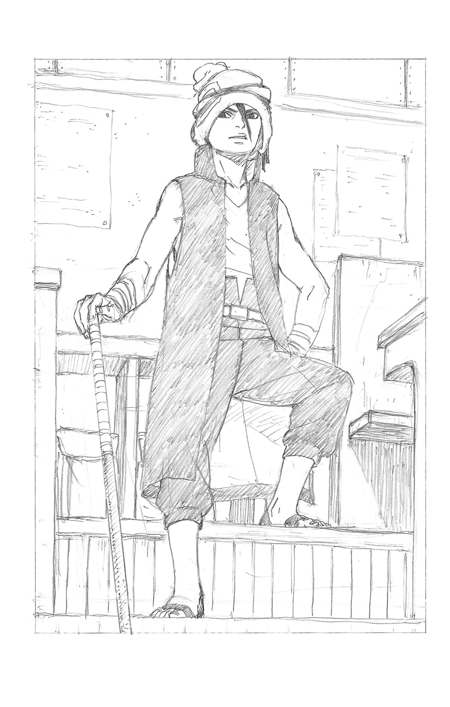
「んだと!? てめー、いい加減に......」
毅然と睨み返すボルトだったが、次の瞬間、その体が軽々と投げ飛ばされる。
入り口付近に転がったボルトを見て、廊下の女子たちが悲鳴をあげた。
「ぼ、ボルトくん！」
「ハッ、どうした？ てんで話にならねぇじゃねぇか、火影の息子サマ？」
「てめぇ......！」
さすがにシカダイもその行為に怒りを見せるが、
「いいぜ、気に入らねーんならかかってきな。何人まとめてでも大歓迎だぜ」
余裕の表情で指をポキポキ鳴らして挑発するイワベエ。
「や、やめた方がいいよ......イワベエくんの体術は、もう下忍クラスだって先生たちも一目置いてるくらいなんだ」
ボルトを助け起こしながら、デンキが心配げに耳打ちする。
「痛てて......じゃあなんでダブってんだよ......？」
「そ、それはわからないけど、いくら君でも勝てる相手じゃないよ......」
ガン、と恐ろしげな金属音。
イワベエが金棒で、床を叩いたのだ。
「いいか？ 忍者ってのは強さがすべてだ。お前らみたくお行儀いい勉強しかできない奴らは黙ってな。現に、火影だって一番強いから里のアタマ張ってんじゃねーか。忍者はなぁ、強けりゃなんでも許されるんだよ！」
そんな演説をぶつイワベエの目には、どこか怒りと不満の色がくすぶっていた。
「また始まったよ......」
「あんなヤツ、早く退学になりゃいいのに......」
遠くから様子をうかがっていた生徒たちが、うんざりした顔で囁き合う。
面と向かって言う度胸はない彼らと違い、反論したのは意外にもデンキだった。
「で、でもイワベエくん。今の時代はもう、そういう極端な考えは通らないんじゃないかな......ほら七代目様だって、忍術の平和利用を目指して......」
「うるせえ！ ザコは黙ってろ！」
再び金棒で威圧的に床を叩くと、デンキはビクッと怯えた。
「ほんの十年ちょっと前まで、戦争してたんだぜ？ 火影様が前線で戦いまくってた頃は、アカデミーもこんなフヌケの集まりじゃなかっただろ」
自分に何か言う勇気もない生徒たちを馬鹿にするように、あごをしゃくってみせる。
「それがいつのまにか軟弱なお勉強学校にしちまいやがって、オレは認めねぇ......！ 実力もロクにねぇくせに、親の力で入学してくる七光りヤローは特にな！」
片手で軽々と持った金棒の先端で、睨むボルトをピタリと指す。
と、ボルトが何か言うよりも先に、
「な、七光りなんかじゃない......」
勇気を振り絞り、デンキが再び口を開いた。そして、イワベエの前に毅然と立つ。
「あん？」
「ボルトくんは七光りなんかじゃない、って言ったんだ！ 僕はボルトくんの姿に憧れて、この忍術科に通うって決めたんだ。それがどうしてダメなの!?」
「フン、ザコのチビが勇ましいこったな？ だが、そういう口は......オレを倒してから言ってもらおうか！」
胸ぐらをつかまれて体を浮かされ、苦しげにうめくデンキ。
その体が、さっきのボルトのように投げ飛ばされようとする瞬間、跳ね起きたボルトが雷光のような鋭い蹴りを放った。
「やめろ、オレの友達に手を出すな！」
「ほう？」
デンキから手を放し、それをガードするイワベエ。
「おい、てめーの言う『強い』ってのは、力で仲間を言いなりにさせるダセェ行為のことを言うのかよ」
「......なんだと？」
息のかかりそうな至近距離で、敵意の視線を交わしながら向かい合う二人。
「おい、ボルト！」
「大丈夫だ、シカダイ。......オレはここじゃケンカはしねーって決めてたけどよ......仲間に手ぇ出されて、黙ってられるかよ！」
「ぼ、ボルトくん......！」
慌てる友人たちを尻目に、胸をドンと叩いて、ボルトは宣言した。
「買ってやるぜ、イワベエ。てめーのケンカ！」
「面白ぇ......！」
鮫のように笑うイワベエ。一歩も譲らぬ視線が火花を散らした。
＊ ＊ ＊
「ったく、なんなの、アレ......また初日からいきなり面倒に巻き込まれて、どういうつもりなのよ、あいつ......」
野次馬の後ろ、ひと足後れて教室にやってきたサラダが、呆れた様子で口にする。
「は、はわわわ......ど、どうしよう......！」
隣ではスミレが青い顔で慌てている。
そして、さらにその背後では。
「ふーん......ちょっと、意外な展開だな」
いのじんが、細い首をかしげてつぶやいた。
＊ ＊ ＊
昼休みの終わりを知らせるチャイムが鳴る中、教室に向かって歩く教師二人の姿。
長身の男性教師、油女シノに、ぽっちゃりした体型の年上の女性教師が声をかける。
「シノ先生。確か今日から登校でしたよね、ボルトくんって」
「はい、アンコ先生」
みたらしアンコは、かつてアカデミーの生徒だった頃のシノの恩師の一人だ。甘党が祟ってか、その頃と大幅に変わってしまった体型を残念がる男性ファンも少なくないという噂だが、本人は幸せそうである。
「入学早々謹慎なんて、やるじゃない彼。さすが、あの七代目様の息子ね」
くすくす笑うアンコ。木ノ葉隠れの里きっての問題児だった頃のナルトを思い出しているらしい。
「いえ......まさか、私が彼を担当することになるとは......」
一方、ゴーグルに目を隠していても、不安そうな様子が一目瞭然のシノ。
「ま、同期の友達のお子さんたちをたくさん担当するんだもん、責任重大って思っちゃうわよね。でも、それもやりがいってものだと思うわよ、シノ先生？」
先輩教師として元気づける言葉に、シノは口元をキリッと整えて真剣にうなずいた。
「ええ、もちろん、厳しく指導しますよ。なぜなら今は、それが私の仕事なのですから。それでは、授業があるのでこれで」
一礼し、手を振るアンコと別れて教室の扉の前に立つシノ。
（あの大戦の後、オレは忍として任務に携わるのではなく、教師となる道を選んだ......なぜなら未来を担う子供たちを育てるという大役、これもまた責任ある戦いだからだ）
彼は本来、人と接することがあまり得意なたちではない。それでも教師という職業を選んだからには、不向きな部分も含めて精一杯力を尽くそうと日々努めている。
一つ深呼吸して、扉を開く。意識して明るい声でにこやかに、それが重要だ。
「やあ！ それでは午後の授業だ、みんな――なに!?」
驚愕するシノの声に、アンコが不思議そうに振り向いた。
ぷるぷる震えるシノの眼前には、がらんとした無人の教室があった。
「わ......私の生徒たちは、どこに......？」
＊ ＊ ＊
校舎の裏手に建設された、グラウンドとほぼ同等の広さを持つすり鉢状の空間。
中心に位置する円形の闘技場を、ぐるりと観戦席が囲むそこは、実戦訓練や実技試験に使用されるスペースだ。
今、その真ん中で対峙するボルトとイワベエを、観戦席のあちこちに座ったクラスメートたちがザワつきながら見守っている。
「はわわ......ど、どうしよう、こんなことになっちゃって......授業は......？」
口ぐせの『はわわ』を何度も繰り返しながら、冷や汗だらだらの委員長スミレ。
「ま、あいつらが悪いってことでいーんじゃないの？」
すっかり観戦気分でポテチを口に運ぶチョウチョウは、対照的な大物ぶりだ。
「おかげでいい迷惑だわ、こっちは」
眼鏡をくい、と指で押し上げてぼやくサラダ。もっとも、彼女もそこまで忍術の授業に執着があるというわけでもないので、積極的に止めるまではしなかったのだが。
「どうしよう、僕のせいで......」
「お前のせいじゃねぇよ、デンキ。ったく、ノコノコあんなヤツの挑発に乗ったボルトが悪ぃんだよ。また謹慎になっちまうぞ、めんどくせぇ......」
不安げに見守る友人二人の間に、いのじんが割って入った。
「謹慎で済むかな、彼？ こんな短い期間にまた問題起こしちゃ、退学かもしれないよ」
「え!? そ、そんな！」
慌てるデンキ。シカダイはじろりと睨むが、いのじんは平然と、
「でも彼......腰抜けじゃなかったんだね。馬鹿だけど......」
ほんの少しだけ、感心したように独り言をつぶやいた。
「こんな場所が、学校にあったなんてな......」
一方、皆の視線の中心では、興味深そうに周囲を見回すボルト。
闘技場には数メートルもある太い石柱が数多く立ち並び、まるで巨人の群れに威圧的に見下ろされているかのようだ。
「伝統的な実戦訓練場ってやつだ。訓練つっても真剣勝負、火影様の時代にゃ事故で大ケガなんざ日常茶飯事だったって聞くぜ。どうだ、怖じ気づいたか？」
「まさか！ 面白ーってばさ！」
「フン、その威勢がどこまでもつかな。......おめーら、よく見とけ！」
大音声で観戦席に呼ばわると、イワベエは背負った金棒を地面に突き刺した。
「これは、アカデミーのルールに則った忍術勝負だ！ ああ安心しな、コイツは使わねえよ。使うと、お前を殺しちまうからなぁ？」
自信たっぷりでゾッとする言葉を口にするが、その程度で動揺するボルトではない。
「言ってろよ！ いくぞ、イワベエ！」
歓声と共に、戦いの火蓋が切って落とされた。
抜く手も見せないスピードで、イワベエが小手調べとばかりに手裏剣を投げる。
ボルトはそれを素早いジャンプでかわしつつ、石柱を足場に三角飛びで急接近。
流れるような左右のパンチで襲いかかるが、イワベエは冷静にそれをさばく。
「ふんっ！」
恵まれた体格から放たれる大振りの反撃を、バク転で避けるボルト。
だが直後、頭上からハンマーのごとく振り下ろされる追撃のカカト落とし。
「っぶね!?」
ギリギリのバックジャンプでかわし間合いをとったボルトに、瞬時に体勢を立て直したイワベエはニヤリと凶暴な笑みを向けた。
「ほう、フェイントに引っかからなかったか。少しはやるじゃねーか！」
叫びつつ、すでにボルトめがけ一気に踏み込んで強烈な前蹴りを放っている。
「そっちもな！」
横に跳んで回避すると同時に、空中で今度はボルトが手裏剣を二発放った。
最小限の動作でその軌跡を避けるが、注意が本体からそれた一瞬の隙に、ボルトはイワベエの背後をとっていた。
「!! 速い！」
「遅いぜ、デカブツ！」
渾身の空中回し蹴り。だが、イワベエはがっしりとそれを腕でつかみ止めた。
「なんの！」
続けざまに、軸足をつかまれたままパンチ、そしてもう一方の足でのキックを浴びせるボルト。さすがにガードが追いつかずイワベエの腹と肩に命中するが、
「......効かねぇな！ うおおおおッッ!!」
雄叫びと共に、ボルトを渾身の力で投げ捨てるイワベエ。
「くは......ッ!?」
石柱に背中からぶち当たり、小柄な体が崩れ落ちる。
「ああっ！ ぼ、ボルトくん！」
「ち......ウェイトとパワーじゃ、さすがに分が悪ィか」
デンキの悲鳴と、シカダイの冷静な分析。
「げほ、げほっ......！ はぁ、はぁ......！」
背中の痛みに荒い息を吐き、よろよろと立ち上がるボルト。
「くく......どうした、もう終いか？ 七光りヤロー」
追撃もせずに余裕で見下ろすイワベエに、キッと戦意を失わない顔が向けられる。
「冗談！ へっ、服がちょっとだけ汚れちまったじゃねーか」
強がりを口にするが、さすがにダメージは明らかだ。観戦席もざわついている。
「............」
「どしたの、真剣に見ちゃってさ。興味ないんじゃなかったのぉ？」
「......ないけど」
チョウチョウに指摘され、サラダはほんの少しだけ慌てたふうに目をそらした。
「そうは見えないんだけどさ、まあいーや。でもあのままじゃヤバいんじゃない、彼？ ぜんぜん敵いそうにないんだけど」
「............」
のんきにポテチの残りをざざっと口に流し込むチョウチョウとは対照的に、サラダは視線をさりげなく闘技場に戻した。眼鏡越しの、真剣な視線を。
闘技場では、ボルトの投擲した手裏剣が、イワベエの逆手に構えたクナイですべて弾かれていた。豪語するだけあって、攻防共にスキがない。
「こざかしいぜ！ ......ん？」
そのまま手裏剣を投げ続けつつ、ボルトは新たな動きに出た。林立する石柱の背後に隠れ、飛び出しては投げ、投げてはまた別の石柱の陰に隠れてを繰り返す。
「苦し紛れか、七光りヤロー！ 見えてんだよ！」
ヒットアンドアウェイでかく乱しつつ、背後から強襲を狙ったらしいボルトの一撃は、だがやはりイワベエには通じない。
カウンターで腕をとられ、背負い投げで地面に叩きつけられてしまう。
「ぐはっ!?」
「これで終いだ！ いっちょあがり！」
トドメのカカト落とし。デンキが思わず目をつぶる。
しかし、それが炸裂したかに見えた次の瞬間、食らったボルトはボンッと煙をあげて消滅した。
「なにッ!?」
「本物はこっちだよ！ 食らえッ！」
影分身を囮に、石柱の陰から本物のボルトが放った飛び蹴りが突き刺さる。
しかし、今度は直撃を受けたはずのイワベエが煙に包まれ、一瞬でその姿が消えて身代わりの丸太に入れ替わっていた。
「！ 変わり身か！」
シカダイの感嘆の叫び。
「くそっ......どこだ、イワベエ!?」
慌てて、さっき同時に出現させていたもう一人の分身と背中合わせになって周囲に目を走らせるボルト。
と、突然背後の石柱の岩肌が紙でも剝がすようにペラリとめくれ、中から現れたイワベエが影分身ボルトの首をつかんで持ち上げた。
「なにっ!? ぐはっ......！」
たまらず、消滅する影分身。
「変わり身に、隠れ蓑の術か！ やるじゃねぇか、イワベエ！」
慌てて距離をとったボルト本体だったが、さすがに額が汗で濡れている。
「お前こそ、影分身を複数維持できるとはな......大したチャクラだ、褒めてやるぜ」
余裕の姿勢を崩さず、ニヤリと笑うイワベエ。
チャクラとは、あらゆる術の源となるエネルギーだ。
人体を構成する膨大な数の細胞から取り出す、身体エネルギー。
経験や修業によって培われ蓄積された、精神エネルギー。
その双方を的確にコントロールし、練り合わせることによって初めて、神秘的な忍術の数々を発動する準備が整うのである。
父親のナルト同様、人並みはずれたチャクラの量を誇るボルトは、まさに忍者としてのサラブレッドといえる。
「おもしれえ、何人でもまとめてかかってきやがれ！」
「言ったな？ 吠え面かくんじゃねーぞ！ 影分身の術っ！」
再び、印を結んで三体の分身......現時点で生み出せる最大数を出現させて、四人のボルトがイワベエに殺到する。
これはボルト有利かと、観戦席から歓声があがるが、
「甘い！ 増えたぶん、動きが雑になってやがるぜ！」
足払いで一体の体勢を崩した隙に、別の一体を蹴り上げる。
さらに三体目を地面に押し倒し、パンチを打ち込んで消滅させる。
イワベエは分身たちを的確にさばき、一人ずつの状況に持ち込んで対処していた。
「あいつ、戦い慣れてやがる......！」
舌を巻くシカダイの隣で、パソコンのデータベースに目を走らせたデンキがうめく。
「やっぱりだ、忍術の成績も体術の成績も去年の時点でトップ......ただ他の科目、特にペーパーテストが壊滅的だからって卒業できなかったみたい」
「めんどくせぇ奴だな。いいから、アカデミーもそんなのとっとと卒業させろよ......」
闘技場に目を戻すと、煙玉で視界を奪われ混乱したボルトの分身たちが、一人また一人とイワベエに消滅させられている真っ最中だった。
焦ったボルトは新たな分身を次々と送り込むが、息があがりかけている。
「ムダ使いはよくねぇな、チャクラだって有限なんだぜ？ 気が済むまで付き合ってやるけどよ、そんなんじゃもうすぐ限界が来ちまうぞ」
「う、うるせー......！ くっ、次、行け！」
「ったく、分身使いが荒いんだから......」
ボルトの命令に、ぼやきながら突進する影分身。
一時的に本体とは別の意識を持つため、こういった奇妙な絵面も発生するのだ。
いずれにせよ影分身を使っての集団戦法は見切られつつあり、しかもイワベエの言う通り、ボルトにはチャクラ切れが近づいていた。
「ずいぶん必死だな......なんであんなにムキになってるんだろうね、彼」
観戦席のいのじんが、心底不思議そうにつぶやいた。
「でも、あの様子......七光りって感じじゃないよね、ボルトくん......」
決して諦めないボルトの姿に、いつのまにかスミレも見入っていた。
七光り野郎の化けの皮が剝がれるところを見てやろう、というスタンスだった生徒たちすらも、いつしか彼の戦う姿に目を奪われていた。
影分身がすべて打ち倒され、煙が晴れる。
大したダメージもないイワベエが、にやにや笑いながらボルトめがけ歩を進めた。
「いよいよ限界みてーだな、七光りヤロー。思ったより頑張ったが、オレの勝ちだ」
「はぁ、はぁっ......！ げ、限界なんざ関係ねぇ......！ 強けりゃなんでも許されるなんざ、そんな勝手を許してたまるかよ......っ！」
まだ闘志を失わないボルトに、イワベエはどこか苛立った答えを返す。
「許されるんだよ！ 大人どもだってそうやって勝手を通してきたじゃねぇか！ 自分たちは力で成り上がったくせに、もう時代は変わっただの抜かしやがって......！」
ぎり、と歯嚙みして、胸の内をボルトめがけぶちまける。
「いいか、オレは昔のアカデミーならとっくに卒業して忍者になってるんだ！ なのに、忍術と関係ねぇ勉強ができないからって卒業できねぇたぁ、どういうこったよ!?」
「......確かに、彼の言うことも一理あるかもね」
吼えるイワベエ、観戦席でつぶやくいのじん。
だがボルトは、
「なんだ......お前、そんなの逆恨みじゃねぇかよ！」
「ンだとぉ......!?」
うっすらと不敵に笑い、イワベエに啖呵を切る。
「てめぇがマジで忍者になりてぇなら、何回落ちようが誰に何を言われようが、諦めずにやれってんだ！ 何度でも、何度でもな！」
再び印を結び、誰もがもう出せないと思っていた影分身を再び三体生み出すボルト。
「くっ、こいつまだ......!?」
そのまま突進してくる不屈の勢いに、イワベエがわずかに気圧された。
「それをなんだ、時代のせいにして！」
「授業にも出ねぇで、真面目にやってる他のヤツ馬鹿にして！」
「エラソーにお山の大将気取って、荒ぶってみせてるだけなんてよ！」
口々に叫びながら、猛ラッシュをかけるボルトたち。
「そういうの......最高にダセェんだってばさ!!」
「何度も何度も......オレが、ダサいだと!?」
わずかな動揺を見逃さず、ボルトたちがイワベエの体に四方から組みついた。
「そうだ！ そんなヤツに、オレが負けるわけにいくかぁぁぁっっ!!」
渾身の力で、体格に勝るイワベエを投げ飛ばす。
「ぐっ......！」
さらに追撃しようとするが、さっきの隠れ蓑でイワベエはすかさず姿を消した。
「しゃ......しゃらくせえ！」
「！ あんなとこに!?」
慌てて四方を見回したボルトたちがハッと気づいた時、石柱の側面に、地面と水平に立っているイワベエの姿があった。
「チャクラを足の裏に集め、体を支えて......あいつ、あんな高度なテクまで使えるのか！」
驚くシカダイの声と同時に、イワベエが無数の手裏剣を投げ放った。
慌てて、最後尾のボルトをガードする体勢をとる分身たち。
「そいつが本体だな！ いくら分身を出そうが、本体がやられちまえば終わり......もらったぜぇぇぇ!!」
石柱から落下の勢いを乗せて飛びかかるイワベエ。
だが、しかし。
もっとも背後にいたボルトは、ニヤリと笑うと煙になって雲散霧消した！
「なっ......分身、だと!?」
「かかったな！ オレの分身は......ただの身代わりじゃねぇ！」
慌てて体勢を立て直そうとした時には、もう遅い。
イワベエに迫った三人のボルトたちが、殴る、蹴る、そして！
「そしてオレは、火影の七光りじゃねぇ!!」
「ぐはッ......!?」
トドメの、天高く跳躍してからの本体による渾身の踏みつけが、イワベエの土手っ腹にずん、と炸裂した。
「や......やったぁ！」
思わず立ち上がり、叫ぶデンキ。
おお、と生徒たちからも大きな歓声があがる。
「お前に事情があるように、他のヤツらも色んな事情があってここに来てんだよ......」
「.........！」
影分身が消え、ゆらりと一人立ち上がるボルトを、サラダがはっとしたように見た。
「だから！ てめぇの勝手で人の行く道、ジャマすんじゃねぇってばさ！」
言葉と共に、動かないイワベエめがけてビシッと突きつける。
だが......決着がついたと誰もが確信した、次の瞬間。
「う......うおおおおおおッッ!!」
獣のような雄叫びをあげて、イワベエが立ち上がった。
「！ あいつ、まだ！」
構えるボルトからバックダッシュで距離を取り、血走った目で開始前に地面に刺していた金棒を引き抜く。
「ざけんなよ、クソがぁぁぁぁっっ!! うおぉぉぉぉッッ!!」
みるみる、地面から剝がれた土や石の欠片が金棒にまとわりつき、巨大な岩塊の剣を形作った。
「なによ、あれ......！」
さすがのサラダも驚きの反応を見せた。
チャクラによる性質変化――一定以上のレベルの忍術は、さまざまな特性をチャクラに持たせ、それによって特殊な効果を発揮する。忍五大国の名の由来にもなっている火、風、雷、土、水が基本の五大性質だ。
どのカテゴリの性質変化を扱えるかは先天的な才によって決まるが、イワベエの家系は土属性を得意とし、今やってみせた術も土遁の一種である。
「イワベエくん、土遁まで!? ぼ、ボルトくん、逃げて！」
デンキの叫びを尻目に、イワベエは岩塊の巨剣を振り下ろした。
地面がめくれあがり、土や石の散弾がボルトめがけ殺到する。
「やべっ......！」
倒れ込むようにしてギリギリそれをかわしたボルトに、全身からチャクラを噴き上げたイワベエはなおも追い討ちのもう一太刀を振り上げる。
「オレはな......火影様みてぇになりてーんだよ！ 火影様みてぇに、戦いの中で英雄になりてーんだよ！ それがオレの行く道......こんなとこで、終わるわけにはいかねぇんだよォ!!」
それはすべての建前を剝ぎ取った、イワベエの心底からの正直な叫びだった。
忍界の英雄ナルトに憧れ、同じように強い忍者を目指して、幼い頃から自らを鍛えた。
だがアカデミーは、自分のやり方を、夢を否定する場所だった。
その絶望が、悔しさが、行き場のない憤りが、イワベエという少年があれほどまでに荒れた理由だった。
（やべぇ......次は、かわせねぇ......！）
分身を出すチャクラも尽き、崩れた体勢では、再びさっきの一撃を放たれればどうしようもない。ボルトの脳裏に、死の危険信号が明滅する。
シカダイや、サラダ......これはさすがにまずいと、見守る生徒たちのごく一部が飛び出そうとした、その時だった。
鋭い鳴き声と共に、真っ白な鳥が天空から猛スピードで舞い降り、イワベエの腕から岩塊の剣をかすめとった。
「えっ、何あれ!?」
よく見ると、それは本物の鳥ではない。墨で輪郭を描かれた二次元の絵が、実体をもって実物さながら、いや実物よりも鋭く羽ばたいているのだ。
「あれは、超獣偽画......いのじんか！」
シカダイの振り返った先、観戦席に立ついのじんの足下に、デフォルメされた墨絵の鳥が降り立った。
「てめぇ、なんのつもりだ!?」
水を差されて叫ぶイワベエに、いのじんは冷たい瞳を向ける。
「あれ......君こそ、なんのつもりかな？ 武器は使わない......最初にはっきり、そう言ったよね。それとも自分が言い出したルールを破るのが、君の目指す忍者なのかい!?」
「う......」
有無を言わさぬ視線に、イワベエが射すくめられ、たじろいだ。
だらりと、振り上げた手が力なく垂れ、ひざをつく。
「確かに、オレ......ダセェ、な......」
自嘲気味につぶやくと、完全に戦意を喪失するイワベエ。
にっこり笑っていつもの表情に戻り、いのじんが拍手を始めた。生徒たちも誰からともなく、それに続く。闘技場は歓声と、割れんばかりの拍手に包まれた。
「へっ......あいつ」
いのじんにニヤリと笑い返し、ボルトは天に向かって勝利の拳を突き上げた。
「こ......これは一体......？ ボルト......!?」
一人、ようやく駆けつけてきたシノが、歓声の中心でガッツポーズをするボルトを何がなんだかわからない様子で呆然と見つめていた。
＊ ＊ ＊
そして翌日......平和な空気に包まれた、朝の教室。
チャイムが鳴り響く中、何人かの男子生徒が、遠慮がちにボルトに声をかけた。
「あー......ボルト、今日一緒に昼メシ食おうぜ！」
「あ、オレもオレも！」
彼らの目は、好意と好奇心、ほんのわずかの憧れに輝いている。
正々堂々の戦いでイワベエを打ち倒し、その横暴から自分たちを救ってくれたこと。
その行動が、ボルトが口だけのいけすかない七光り野郎などではないことを百の言葉よりも雄弁に証明したのだ。
「おう、よろしくな！」
もちろんボルトは威張るでも困惑するでもなく、ストレートに彼らの感情を受け止めている。その様子には、父親譲りのある種のカリスマ性ともいえるものがあった。
「はわわ......よかったぁ」
その様子を、安堵の表情で見守るスミレ。
「あんたが心配しなくてもいいのに、心配性よねぇ委員長ってば。ま、ハラハラしながら見てたのはサラダも同じかぁ」
「......ちょっと、だからそんなんじゃないってば、チョウチョウ」
結局、昨日の一件は中心人物二人がアンコやシノら教師にこってりしぼられるだけで済んだ。
もっとも、イワベエは今日も教室に姿を見せないが。
それにもちろん、ボルトに向けられる視線のすべてが先入観から解放されたわけではない。
「どうせまた、問題起こすんじゃないの？」
「いいよな、七光りは......何やったって許されてさ」
そんな陰口を叩く生徒たちも、まだいた。
しかし、明確に変わったものもある。そこに通りがかったいのじんが口を開いた。
「惨めだね、君たちは」
「な、なんだと!?」
「彼は自分のためじゃなく、クラスメートのために戦った。デンキくんが殴られそうになった時、誰か一人でも止めようとできたかい？」
「そ、それは......」
目をそらす陰口生徒たちだったが、
「ボルトのセリフじゃないけどさ......ダセェよね、そういうの」
「!!」
にこにこ顔で一刀両断され、縮こまってうなだれるしかない。
そんな中、教室後ろのドアがガラリと開いた。
入ってきた人物を見て、室内がざわつく。
「い、イワベエ......くん」
すっかり怖じ気づいて、道を開ける生徒たち。
イワベエは無言でまっすぐ、シカダイたちと談笑しているボルトの座る席へと進む。
「お？ よお、イワベエ」
「......おお」
屈託なく挨拶するボルトに、イワベエはバツが悪そうに頭をかいた。
「ちゃんと授業、来たじゃねーか」
「フン......クラスメート、だからな」
「えええ!? ど、どうなってんの......？」
イワベエの変化に戸惑うデンキの横で、シカダイは一つ大きなため息をつく。
「ったく......めんどくせぇな、まったく」
かくして、さまざまなものを内包した平和の中、今日も授業が始まる――。
暗い世界の中で、『それ』は、ゆっくりと目を見開いた。
『それ』が最初に自覚したのは、ある種の満ち足りなさだ。
――足りない。まるで足りない。
『それ』は本能のままに、欲するものを求める声をあげた。
どこか、エサをねだる赤子にも似た......不吉な鳴き声を。
＊ ＊ ＊
木ノ葉隠れの里には、その名の通り森が多い。半ば樹海と呼べる広大な森林地帯の中に、浮き島のように里が存在しているとすら言える。
今日の午前中の授業は、そんな森の一区画に開けた広場で行われていた。
遠くに見える火影岩はあの事故から修復中で、足場が組まれ作業員が動き回っているのがわかる。
「よし、お前たち。今日から、手裏剣の扱い方の実地訓練が始まる」
居並ぶ忍術科生徒たちの列に向け、シノが説明を始める。
「お前たちの技量は、まだ未熟だ。最初からまともに投げられる者は少ないだろう。だがそれでいい。なぜなら、それがアカデミー生だからだ」
なぜなら、はシノの幼少期からの口ぐせである。彼の口調は理論的で丁寧なのだが、全体的に説明が長い傾向にあるため、生徒からの評判はあまりよろしくない。
「くれぐれも自分の能力を過信してケガをしたり、仲間をケガさせたりすることのないように、十分に注意を払って......うぉわ!?」
説明の終わりを待たずに、シノの後ろに並べられた的めがけて、しびれを切らした生徒たちが手裏剣を投擲し始めた。
慌てて身をかわしつつ、ため息をつくゴーグル姿の教師。
「ったく、聞いてないな......」
忍者学校生とひとくちに言っても、その技量はやはり千差万別だ。
「はわわ、全然うまくいかない......」
可愛らしいがまったく実戦的ではないモーションで投げられたスミレの手裏剣は、的から大きく外れた所にポテッと落ちた。
一方、いのじんとシカダイのそれは、正確な軌道でど真ん中に突き刺さる。
「はぁ......絵でも描いてた方がためになるんだけどな」
「ま、オレらはこれぐらいのこと、とっくに家でやらされてるしな」
彼らはいずれも、第四次忍界大戦で活躍したベテラン忍者を両親に持つサラブレッドだ。物心ついた頃から、一通りの基礎は自宅で直接仕込まれている。
そんな二人にとっては、いささか退屈なカリキュラムだった。
そして――同じく偉大な親を持つ少年が、ここにもう一人。
「むん......ぬぅぅぅぅんっ！」
円を描くような華麗な動きで、全身をぴっちり覆う拳法着に包まれた手足が舞う。
やや彫りの深いぱっちりした瞳がカッと見開かれ、ピッと伸ばした両手の指にそれぞれ挟まれた手裏剣がきらめいた。
彼の背後に、荒ぶる竜のイメージすら浮かんで見えるかのようだ。
「はっ......はぁーッ!!」
鋭く振りかぶっての第一投、そして回し蹴りの要領で体を回転させての第二投。
続けざまに放たれた手裏剣は見事なカーブを描き、ミリ単位のズレしか生まず同じ的の中心に突き立った。
「ふふふ......この日のため一人で山に籠って修業を重ねたかいがありました。手裏剣は完璧です！」
再び、拳法の構えをとる小柄な少年の名は、メタル・リー。
木ノ葉の美しき碧い野獣の異名をとった体術のエキスパート、ロック・リーを父に持つ、父によく似た努力家だ。
「へぇ、やるじゃんメタル」
「うん、大したものだね」
多少は自信のあったシカダイといのじんですら、素直に感嘆を漏らす腕前だ。
......だが、その賞賛を背中に聞いたことで、再び投げようとしたメタルは、
（う......ど、どうしよう......!? し、シカダイくんといのじんくんが、僕を見てる......！）
突然、顔色を変えてダラダラと汗を流し始めた。
「で、でやぁ！」
一転、裏返った声と崩れたモーションで投げられた手裏剣は、さっきとはまるで違うヒョロヒョロした軌道で、あろうことか的に届く前に落下してしまう。
「......あ？」
「おや？」
真顔になるシカダイたちに、メタルはぎくしゃくした動きで振り返り、
「はははははー！ い、いやちょっと手が滑ってしまったみたいだ、おっかしいなぁ!?」
無理のあるごまかし笑いで、その場からスタスタ歩き出す。
と、そこに、
「どけどけどけーっ！ そんなのチンタラ投げてられっかよ、オレはコレだってばさ！」
身の丈ほどもある巨大な手裏剣、通称風魔手裏剣と呼ばれるそれを抱えたボルトが、いつものイタズラ心満載の表情で走ってくる。
「ちょ、おい!? アレはさすがにやばくねーか!?」
「風魔手裏剣、いっくぜーっ！」
焦るシカダイが止めるまもなく、そのままの勢いで投げつけられる巨大手裏剣。しかもまずいことに、その先にはちょうど歩いていくメタルの背中があった。
「やばい、よけろメタル！」
クラスの視線が集中する中、メタルはとっさに別のことを考えていた。
（ふふふ......これはむしろチャンス！ 振り返りざまに手裏剣を蹴り飛ばせば、華麗な僕の姿にさっきの醜態も帳消しです！）
そんな思惑を胸に、振り返ったはいいのだが――
「はわわ、メタルくん！」
「え、どしたのどしたの？」
（っっ!? みんなが、僕を......見ているっ!?）
スミレをはじめとする生徒たちの視線が、自分に集中していることに気づいてしまう。それも、ウブな彼にとって接するのが苦手な女生徒たちが主で......再び、メタルのガラスの心臓は、押し寄せる緊張によって硬直化してしまった。
「こ、木ノ葉旋風ぅぅぅ！ うりゃあああ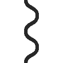！」
そんな状態で繰り出される体術が、まともに決まるはずもなく。
せっかくの父親直伝の蹴りを放った足先は、運が良いのか悪いのか、回転する手裏剣の中心の穴にすっぽりとハマってしまった。
「う、うわぁぁぁ!?」
そのまま風魔手裏剣と共にすっ飛んでいくメタル・リー。
「どうした!? 何をやっているんだ、お前たち！」
慌てて駆けつけたシノの視界に飛び込んできたのは、木の幹に深々と突き刺さった手裏剣にぶら下がる形で目を回したメタルの哀れな姿。
周囲からまばらなクスクス笑いが巻き起こるのも無理はない。
「ありゃりゃ......すまねぇ、メタルだっけ？ わりぃわりぃ」
「どこから持ってきたのさ、風魔手裏剣なんて。君にはまだ扱えないはずだろ？」
「いや、ロッカーの中にあったからよ......」
ボルトといのじんののんきな会話に、イワベエの怒鳴り声が割って入る。
「おい！ オレの風魔手裏剣、勝手に持ち出してんじゃねぇよ！」
どうやら、忍具による訓練に日々余念がないイワベエのものだったようだ。
「ああ、あれお前のか！ って、シノ先生!?」
「また、お前たちのイタズラか......！」
背後で、ゴゴゴと怒りのチャクラに身を震わせるシノの存在に今さら気づくボルト。
「関わった全員、あとで職員室に来るように！」
「......え？ なんでオレらまで......」
「僕ら、何もしてませんけど」
当然ながら釈然としないシカダイやいのじんだったが、今さら引くに引けないシノは、
「っ......連帯責任だ！」
またしても、生徒人気を下げる決定を下してしまうのであった。
ぶーぶーと不満が巻き起こる中、ただ一人。
（また、やってしまった......こんなの、全然なんてことはないはずなのに......）
木に刺さった巨大な手裏剣の下、がっくりと肩を落として悔しげなメタルの姿があった。ショックのあまり、周囲の状況もあまり目に入っていない有り様だ。
（どうしても、緊張すると僕は失敗してしまう......一体、どうすればいいんだろう......？）
彼の父は、普段は少し頼りなく見えても本番には強く、数々の強敵を打ち破ってきた男だった。逆にメタルは、普段は優等生でもいざという時の緊張に耐えられないのだ。
そんなメタルの様子をスミレは遠くから一人、心配げに眺めていた。
＊ ＊ ＊
カンコン、カンカン......と、岩をノミで削る硬い音がいくつも鳴り響く。
「ったく、オレたちがなんでこんな工事の手伝いなんか......」
午後の太陽の下、作業員の指示を受けて火影岩の修復を手伝っているボルトたちの姿が、高所にしつらえられた足場の上にあった。
あれからシノにこってり説教を食らった後、下された罰がこれである。
「そもそも、誰かさんが突っ込んで壊したやつじゃねーか」
「本来なら、君が一人で直すべきなんじゃないかな？」
憮然としてノミを振るいながら、ボルトに突っ込みを入れるシカダイといのじん。
「ぐっ......」
さすがに反論の余地がないボルト。
「オレらもだけどよ、委員長もいい迷惑だよな。お目付役とかで巻き込まれてよ」
「あはは......いいよ私、工作とか好きだから。それに、火影岩の修理に携われるなんてとても名誉なことだし」
気を悪くしたふうもなく笑って、スミレはフォローを入れる。
「さっすが、委員長は話がわかるぜ。バカ親父の顔面修理が名誉ってのはぜんぜんピンと来ないけどよ......お前も嬉しいのか、イワベエ？」
「あ？ うっせーぞ、ボルト」
ナルトの隠れファンであるイワベエは内心同じような感慨を抱いていたが、表には出さない。
そんな話をしつつノミを振るう集団から少し離れた場所で、メタルはまたしても緊張の面持ちでぷるぷると震えていた。
（ほ......火影岩の修理なんて......と、とても失敗できない......！ な、なんでみんなは平然としてるんだ......!?）
太陽が雲間に隠れ、またのぞく。
うららかな陽気の中、ノミを振るうカンコンという音はいつしか、ボルトたちの一角ではピコピコという電子音に掏り替わっていた。
「あとはオレ一人で十分だってばさ！ 突撃ぃぃぃぃっ!!」
「バカ、一人で突っ込むな！ 陣形がメチャクチャじゃねーか！」
「あ......やべっ!?」
携帯ゲーム機の画面に、間抜けなゲームオーバーの文字が大きく躍った。
「あーあ、せっかく高レベルクエストのボスを追い詰めたのに......」
「ボルトのせいで台無しだぜ、ったくよぉ」
「わ、悪ィ」
憤慨するシカダイ、いのじん、イワベエ。さすがのボルトも平謝りだ。
「あのー、みなさん......？ 休憩は、ほどほどにしてくださいねー？」
下の足場から、心配そうに声をかけるスミレ。
「おう、わかってるよ委員長。つっても、こっちの作業はほとんど終わってんだよな。あとはメタルの方だけだが......って、おい、メタル!?」
隣の足場を見たシカダイが、驚いた声をあげる。
そこでは、猛然とノミを振りかぶったメタルが、明らかに力の入りすぎた勢いでガンガンと顔岩に衝撃を打ち込んでいたのだ。
「何やってんだバカ、そんなに力入れたら崩れちまうぞ！ てか上、上見ろ！」
「へ......？」
その声で初めて、ピキピキ......と不吉に走ってゆく巨大なヒビの存在に気づくメタル。
だが、時すでに遅し。
ビシビシッと一気に亀裂が広がったかと思うと、呆然としているメタルめがけ、頭上から大きな破片がいくつも降り注ぐ。
「え、えええっ!?」
誰のものかわからない悲鳴がおさまった後、間一髪難を逃れて足場にへたり込んだメタルの頭上で、七代目の顔岩はきれいに半分が欠けてなくなっていた。
「あーあ、やっちまった......！」
＊ ＊ ＊
夕方の街並み。べったりと疲れが張りついた顔で、ボルトたちは帰路についていた。
中でも、メタルの落ち込みようは相当なもので、一人だけやや後ろを歩いている。
「あーあ、疲れたぜ......マジで参ったな、今日は」
「元々は誰のせいなのかな？」
「うっ......あ、そうだ！ みんなでハンバーガー食ってかね？ オレ、割引券持ってんだ」
いのじんのイヤミを聞き流し、好物の買い食いに皆を誘う。風魔手裏剣の件といい、ボルトなりに責任は感じているようだ。
「な、メタルも一緒によ？」
振り返って声をかけるが、メタルは暗い顔で押し黙ったままだ。
「まあ元気出せって。あんなの、テキトーでいいんだよ。七代目がテキトーな顔してんだからよ、な？」
元気づけるように、軽口を飛ばすボルト。
だが、そこに珍しくシカダイが口を挟んだ。
「......メタル、お前よ、前から思ってたけど要領悪いよな。一生懸命ならいいってもんでもねーだろ？ せっかく片づきかけた作業、かえって増やしちまいやがってよ」
「う......」
元々、逆に要領がよく面倒を何よりも嫌うシカダイだ。隠せないイラつきが、トゲトゲしい口調ににじんでいた。
「お前、緊張したらいつも失敗やらかしてるだろ？」
「っ!? ど、どうしてそれを!?」
「バレてないとでも思ったかよ。とにかく、そういうことも含めてバカ正直すぎんだよな。修業好きは結構だが、緊張ぐせ治さなきゃ意味ねえんだってわかれよ」
勢いのままに、きつい言葉が止まらない。
メタルはうつむいて唇を嚙み、しばらく押し黙っていたが、
「あ......その、僕、こっちだから......」
「あっ、メタルくん!? ......行っちゃった」
明らかに無理をしている様子で、スミレの静止もきかず別方向へと一人駆けていった。
「......シカダイ、今の言い方はさすがにどうかな？」
いのじんが指摘する。
「いやまあ、もっともだが、お前が言うか......？」
思わず突っ込むイワベエ。
「んだよ......オレが悪者かよ」
ボルトからも微妙な視線を浴びせられ、さすがにバツが悪そうにおでこをかくシカダイだった。
＊ ＊ ＊
その夜――奈良家。
食後のゲームに興じていたシカダイの頭に、突然、強烈なゲンコツが降ってきた。
「ってぇ!? か、母ちゃん!?」
見上げれば、母であるテマリが、鬼の形相で睨んでいる。
「聞いたよ。アンタ、今日学校で何をやらかしたんだい」
「い......いや、あれはボルトがよ。オレは巻き込まれただけで悪くねぇよ」
思わず口にしてから、しまったと青くなる。テマリはこの手の行動を何より嫌うのだ。
「何言い訳してるんだよ、男らしくない！」
「あででででっ!? す、すまねー母ちゃん！」
ギリギリと耳を引っ張られ、平謝りのシカダイ。
「ただいまー......お、なんだ。悪さでもやらかしたのか、シカダイ？」
火影の相談役としての勤めから帰ってきたシカマルが、苦笑しつつ障子の向こうから現れ、よっこいせ、と居間にあぐらをかいた。
「あんたからも言ってやってよ。この子ときたら、アカデミーでバカばかりやってさぁ......そんなんじゃ、立派な忍者になれないよ！」
慣れた動作で夫にビールを注ぎながら、まだ説教モードが継続中のテマリ。
「ま、いいじゃねぇか。そうやって色々学ぶのがアカデミーってもんだろ。最初っから完璧なガキなんざ、どこにもいねーんだからよ」
少し昔を懐かしむような目で、晩酌を味わいながら諭すシカマル。
（完璧な奴なんか、どこにもいない......か）
シカダイの脳裏を、メタルの失敗と、そのことを厳しく詰問する自分の記憶がよぎった。だとすれば、あの時の自分の態度はやはり......。
「ウチのもご多分にもれず、叱られて成長中ってとこだな。ま、ガキはそれでいーんだよ。それを経験しとかなきゃ、間違ったことしても頭も下げられねぇ、腐った男になっちまうからな」
「............」
思うところあってか、うつむいた息子をしばらく優しい目で見やり、
「......確かに、そうだよな、父ちゃん」
素直に非を認めたシカダイに、父はフッと口元を緩める。
「フッ、心配すんなテマリ。こいつもちゃんと根っこのとこじゃわかってるみたいだぜ。それより腹減ったな、早くメシにしてくれよ」
これにて一件落着とばかりに手酌で二杯目を注ごうとするが、そのビールを後ろから伸びてきた手がかっさらった。テマリだ。
「はぁ......アンタは昔っから甘いんだよ。だからシカダイの悪さが直らないんじゃないか」
「え？ ......アレ？ もしかしてオレが怒られてる、これ......？」
妻が放つ威圧感に、ついさっきまでのデキる大人の男の顔が、ひきつって歪んだ。
「私はねぇ、ちゃんと奈良家のことを考えていつも言ってるんだ。なのになんだい？ アンタのその態度は......だからシカダイが悪いとこばかりマネするんじゃないか、ええ？」
テマリは忍五大国の一つ、砂の国の風影の姉という立場から嫁入りしてきた身である。いくら友好国とはいえ、異国の要人が火影の相談役の妻という、政治的に微妙な立場にいるのだ。だからこそ、夫の立場や家の体面を大事に想う気持ちは人一倍強い。
それゆえにこのモードになったテマリは、怖い。そして一歩も退かない。
（（め、めんどくせー......！））
父子の脳内を、そっくり同じ感想が駆け巡る。
「アンタたち......今、めんどくせーって思っただろ......？」
「「!?」」
「図星のようだね......二人とも、今夜はメシ抜きだよ！ 反省しな！」
「そ、そんなぁぁ!?」
情けない悲鳴がこだまする。里きっての切れ者と恐れられた名参謀の家系、奈良一族の男たちも、この嫁の前では形無しなのであった。
「はぁ......親父も空気読めよなー......ああなった母ちゃん、テコでも譲らねーのわかりきってんじゃん......」
ぐぅ、とさみしく鳴る成長期の腹を抱え、縁側でうなだれるシカダイ。
ぼーっと月を眺めていると、昼のメタルとの諍いがまた蘇ってきた。確かにあの時、自分はイラつきのままにトゲのある言葉を投げかけてしまった。
「......確かに言い過ぎた、よな。明日、謝っとくか......めんどくせぇ」
そうして、親子二代の口ぐせを再び繰り返すのだった。
＊ ＊ ＊
翌朝。
登校中のアカデミー生たちに混じり、大あくびを漏らすボルトの姿があった。昨日夜遅くまで、一人であのゲームに興じていたのだ。
（ったく、オレの気も知らないでのんきなもんだぜ）
一緒に登校しつつ、隣でそれをジト目で見つめるシカダイ。謝ると決めたはいいが、メタルに果たしてどんなふうに声をかければいいか悩ましいのである。
そうして校門まで来た時ようやく、生徒たちの間にメタルの姿を発見した。
「あ......おい、メタル！ っとすまねぇボルト、オレちょっと話あるからまたあとでな！」
慌ててボルトから離れ、その後を追うシカダイ。一方なぜかメタルは、聞こえているはずの距離なのに振り返ろうともせず、無言で足早に進んでいく。
「なんだぁ？ あいつら......」
首をかしげるボルトだったが――その時。
瞬きをした刹那、視界が前触れもなくまた〝切り替わった〟。
校舎裏に消えていくメタルの頭。そこから上へと伸びているのは、闇色をしたゆらめく半透明の帯のような何か......デンキがおかしくなった時に見えたのと同じモノだった。
「あれは......あの時と同じ......!?」
「ん、ぼーっとしてどうかしたの、ボルト？」
いのじんに声をかけられ、ハッともう一瞬きした時には、異様な光景は消えていた。
「見間違い......？ いや、何かがおかしい......！」
＊ ＊ ＊
「おい、待てよメタル。その、ちょっと話がさ......」
人気のない体育館裏。
ようやく追いついたシカダイが、駆け寄って肩に手をやる。だが、その腕がぱしっと乱暴に振り払われた。
「え......」
ゆっくりと振り向いたメタルの、別人のような眼光。
ゾクリと、シカダイの背筋が凍った。キレたテマリを前にした時と同じくらいの勢いで、本能が警告を発している。
思わず後ろに下がったシカダイの喉元に、一瞬でメタルが踏み込んできた。
「はあぁぁぁッッ!!」
空気を切り裂いて、強烈な正拳突きが襲う。
「お、おいメタル!? いきなり何をっ――」
紙一重でかわし、さらに二発、三発と繰り出される拳のラッシュを反射的にガードする。腕に痺れるような痛みが走り、みるみる壁際に追い詰められるシカダイ。
「な......！」
ヒュン、と目にも留まらぬ回し蹴りが放たれた。
思わずへたり込んだシカダイの頭上、体育館の壁ににぶい音をたててめり込んだそれは、ビシッと蜘蛛の巣のようなヒビ割れを刻む。
「ま......マジかよ......!?」
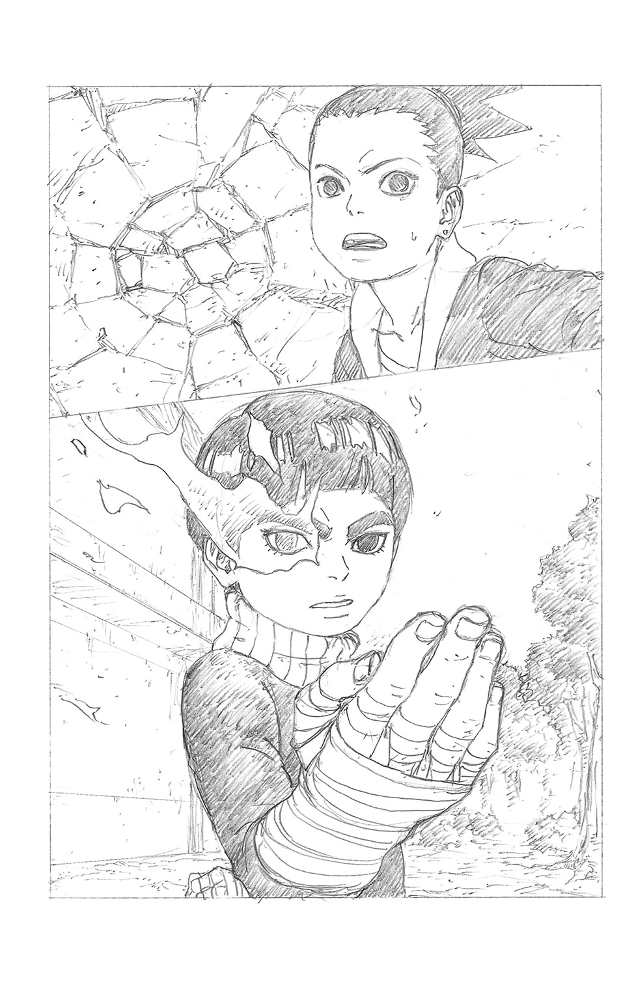
今の一撃は、わざと外されたのだ。もし命中していればどうなっていたことか。
啞然とするシカダイの眼前で、メタルは優雅ですらある動作で腕を体の前に構え、手の甲を向けてクイッと招くような独特のポーズをとった。
「見せてやる......緊張していない、僕の本当の実力を」
ゆらりと、その瞳の中で暗い炎が燃え上がった。
「ま、待て！ メタル、昨日のことやっぱ怒ってんだな？ いや、お前が怒るのは当然だ、オレは確かにちょっと......いや、かなり！ 言い過ぎたと思って――」
これは、普段おとなしい奴ほどキレるとやばいという現象だろうか。
混乱しつつ慌てて謝ろうとするシカダイの耳に、再び不吉な風切り音。
「って、うおッ!?」
問答無用とばかりに放たれた回し蹴りが、壁をさらに深くえぐる。
地面を転がるようにして這々の体でしのいだシカダイは、本気で放たれたメタルの体術の威力に呆然とするばかりだ。
（やべぇ......あんなの食らったら、マジで死んじまう！）
「さあ、シカダイくん。僕と勝負しろ......！」
冗談じゃないと冷や汗を垂らすシカダイの後ろに、様子を見にボルトといのじんが駆けつけてきた。
「ってなんでメタルと戦ってんのさ、シカダイ？」
「よくわかんねぇけど、今のメタルはなんかフツーじゃねぇ！」
「あなたたちも、邪魔をするなら容赦はしない......」
動じず、再び手招きするような構えをとるメタル。
ボルトには、その体からどこかに向けて伸びる実体のない何か――謎の闇の糸のようなものが、うっすらと見えた。
「やっぱり......あの時と同じだ」
「？ どうしたの、ボルト」
「お前らには、アレが見えないのか......？」
「あれって、なんのことだよ!? それより、メタルがキレちまってる！ なんとかすんのを手伝ってくれ！」
話が嚙み合わないボルトたちを無言で見据え、メタルが大きく円を描く動きで二枚の手裏剣を構えた。昨日の授業の時と同じ動作だ。
あの時は直後に緊張から大暴投をやらかしたのだが、今度は違う。連投された手裏剣は鋭いカーブを描き、三人めがけて正確に襲いかかる。
「うわッ、危ねぇ!?」
別々の方向にジャンプし、なんとかそれをかわすボルトたち。
「ちゃんと飛んできた！ 緊張してないとすごいんだね、彼」
「んなこと言ってる場合か、いのじん！ シカダイ、なんか作戦ねーのかよ!?」
「落ち着け、今考えてる！ とりあえず......逃げろーっ！」
姿勢を落として両腕を後ろに流した忍者独特の高速走法で迫ってくるメタル、慌てて走り出す三人。
「うわっ、わわわぁっ!?」
体育館の裏手から校舎の裏、そして昨日の手裏剣練習場へと、飛んだり跳ねたりしながら逃げるシカダイたち、追うメタル。
一瞬の隙に、茂みの中に隠れたはいいが、メタルは険しい瞳をギラつかせながらじわじわと近づいてくる。
「隠れてもムダですよ......出てきなさい！」
「こ、怖ぇぇぇ......！ マジで、あのメタルと同一人物なのかよ......スピードも技のキレも、イワベエ以上かもしれねぇぜ......！」
「しっ、静かにボルト。逃げてるだけじゃラチがあかないよ、どうするの？」
不安げな二人を前に、しばし、無言で目をつぶっていたシカダイだったが、
「......大丈夫だ。今度こそ作戦、練り終えたからよ......反撃に出るぜ」
余裕を取り戻した表情で、不敵な笑みを浮かべた。
「いいかボルト、昨日のゲームを思い出せ。ゲームオーバーになりたくなけりゃ、一人で突っ込むな――だぜ」
「え？」
意図をつかみかね、困惑するボルトだったが、シカダイは自信満々に目配せする。
「レベルの高い敵でも力を合わせりゃなんとかなるってのが、ゲームの面白ぇとこなんだぜ。二人とも、今から伝える作戦をよく聞いてくれ――」
＊ ＊ ＊
「どこだ......？ むっ!?」
気配に気づいたメタルが振り向くのと、茂みから三つの人影が飛び出すのはほぼ同時。
先頭になって高速で突っ込んできたボルトに、迎撃の鋭い蹴りが命中した。
と、煙に包まれてはじけ飛ぶボルト。見れば、残りの二人も同じ姿だ。
「なるほど、影分身ですか！」
慌てず騒がず、残りの二体にも流れるようなカウンターを決めて消滅させるメタル。
「こんなもの、時間稼ぎにもなりませんよ――何っ!?」
新たな気配に振り返ったメタルは、胸の前で印を結ぶシカダイの姿を認めた。
「――影縛りの術っ！」
その足下から伸びる影のようなものが、生き物じみてひとりでに蠢いた。
メタルの足下めがけ、高速で地を這って伸びてゆく。
「く......！」
初めて焦りの表情を浮かべ、地を蹴って距離をとろうとするメタル。
「ちぃッ、逃がすか！」
メタルの跳躍した方向に向きを変える影だったが、追いつきそうになったわずか手前で、ぴたりとその伸びが止まってしまう。
「惜しかったですね。その影に触れた者の動きを封じる奈良一族の秘伝、影縛りの術......ですが、伸ばせる距離に限界があるということは知っていますよ」
父から受け継いだ切り札を見破られてしまったシカダイ。
だが、その表情には落胆や焦りではなく、勝利を確信した笑みが浮かんでいた。
そして直後。
「忍法、超獣偽画！」
茂みの中でいのじんが広げた巻物から、実体化した鳥の群れがメタルを襲う。
「うわっ......くっ、悪あがきを！ こんなもので！」
振り払われ、あるいは裏拳や回し蹴りで潰された鳥が、墨の塊になって飛び散っていく。確かに、これではメタルに有効打を与えることはできそうにない。
「さあ、抵抗はもうおしまいですか――なに!?」
が、最後の鳥を仕留めたその直後。
メタルの体が、びくんと震えたかと思うと、動きをぴたりと止めた。
「く......!? こ、これは一体......奴は、動いていないはず!?」
超獣偽画をあしらいながらも、シカダイの位置には常に気を配っていた。届く位置からあらためて影を伸ばそうとすれば、気づかないわけがない。おかしい。
「どこを見てやがる、メタル。オレはこっちだぜ」
「な......」
振り返ると、逆方向にもう一人のシカダイ。その足下から伸びる影が、メタルにしっかりと届いていた。
「影縛りの術、成功だぜ......！」
ニヤリと、伝統の決めゼリフを口にするシカダイ。
「ど、どういうことだ......!?」
「へへっ、変化の術だってばさ！」
最初に姿を現したシカダイが煙に包まれ、いたずらっぽい笑みを浮かべたボルトの姿へと戻る。
「確かに、ボルトくんの姿は見えなかった......でも、それじゃ足下の影は!?」
驚愕するメタルの目の前で、ボルトの足下から伸びた影がぐにゃりと立ち上がる。それはよく見れば、墨絵で描かれた蛇だった。
「僕が超獣偽画で作ったフェイクさ。でも、よくこんな作戦とっさに思いついたね、シカダイ」
「へへっ......お前ら二人がいてくれたからな。パーティプレイってやつは、仲間の能力を把握して一二〇パーセント活かすとこが真骨頂なんだぜ」
「なるほどねぇ......おみそれしたぜ」
かくして、頭脳プレイにより決着はついたかに思えた――が、しかし。
「ゆ......許せません......僕を騙すなんて......ッ！」
メタルはまだ、戦意を喪失していなかった。それどころか、怒りのあまり髪の毛が逆立ち、目に見えるほどに立ち上るチャクラが大気を震わせる。
「くっ......！ な、なんて力だ！ このままじゃ、術がもたねぇ！」
驚くべきことに、決まったはずの影縛りをムリヤリ引き剝がしてメタルは動き出そうとしていた。シカダイは高速で思考をまとめ、結論を下す。
「仕方ねぇ！ ボルト、メタルを気絶させろ！」
「はぁ!? 気絶って、どうやって......」
「殴ってでもなんでもいい！ 後味わりーだろうが頼む、オレは限界まで動きを封じ続ける！」
「確かに、それしかなさそうだね......！」
「く......！」
それでも、友人を思いっきり殴ることをためらうボルト。その心情を察したいのじんが、自分がやろうかと目で伝えるが、
「ぐ......グアァァァァッッ!!」
目を光らせ咆哮し、今にも呪縛を破ろうとするメタルの異様な姿を、禍々しい闇色の何かが取り巻いているのが、ボルトの瞳にはなぜか一瞬はっきりと見えた。
（今のメタルは、やっぱり普通じゃねぇ......だったら、オレが元に戻すってばさ！）
決意し、走り出しながら拳を振りかぶる。
その一撃が、クラスメートめがけて振り下ろされ――！
「ガァァァアアアッッ!!」
――なかった。
「......へ？」
ぷちん、という音が出し抜けに聞こえ、目をぱちくりさせる三人。
メタルを縛っていた影がついに耐え切れず途切れた音だ、と気づくまもなく、メタルの体はボルトとすれ違うようにして高速ですっ飛んでいた。
「ガ......ア......あああああああああっっっ!?」
すっとんきょうな悲鳴をあげてゴロゴロ地面を転がってゆくメタル。
言うなれば、太いゴムを切ろうと全力で引っ張っていた状態で、いきなりそれがプチンといったのだから、反動でこうなるのは当たり前である。
呆然とする三人の前で、メタルは手裏剣の的がくくりつけられた木に激突し、目を回して伸びてしまったのだった。
「お、おい大丈夫かメタル!?」
慌てて駆け寄るシカダイたち。
しばらくして、うっすらと開いた目には、もうあの異様な光はなかった。
「あれ......？ 僕は、一体......？」
「よかった、元に戻ったみてーだな！」
「ま、殴らなくて結果オーライってとこだね」
上半身をむくりと起こして困惑顔のメタルに、がばっと土下座するシカダイ。
「すまねぇ！ 昨日は、お前の気持ちも考えずにバカにしちまって......！」
「え？ いや、そんな......」
「お前が怒るのも当然だよ。それに、よくわかったぜ......緊張してねーお前の実力がすげーってことも、欠点くらい誰にもあるってこともさ......」
「シカダイくん......」
平謝りに頭を下げるクラスメートの様子に、やがてメタルはうっすらと微笑んだ。
「ま、よくわかりませんが僕の実力を認めてもらえたならよしとします。君たちも、もう少し真面目に授業を受けた方がいいですよ？ 特に、ボルトくん」
「へ、オレ!?」
「ふふ、言うね、メタルも」
くすくす笑い合う四人。と、そこに授業の予鈴が響き渡った。
「ほら皆さん、行きましょう！ 遅刻してしまいますよ！」
「しゃーねぇ......今日は真面目に授業受けっかあ」
「そうだな、めんどくせぇけど、あいつの言う通りか」
問題児たちは苦笑を交わすと、キビキビした動作で走り出すメタルに続き、校舎に向けて歩みを進めるのだった――。
＊ ＊ ＊
その日の夕方......うずまき家。
いつもより少し疲れた〝ただいま〟と共に、ボルトは玄関の戸を後ろ手に閉めた。
「あっ、お帰り、お兄ちゃん！」
「おう、ただいまヒマワリ。は〜、今日はマジメに授業受けたから腹減ったってばさ」
ぴょん、と抱きついてくる妹を抱っこすると、キャベツを刻んでいるヒナタの方に歩いていくボルト。
「あら......今日は、ってどういう意味？」
「うっ、いや、その......今日は特に、ハードな授業内容だったってことさ、母ちゃん」
笑ってごまかし、兄と遊びたい盛りのヒマワリとしばらく居間で戯れる。
ふと、何かを思い出したように無言になって、家事を続ける母の背中をじっと見つめるボルト。
「そういや......母ちゃんの一族に伝わる眼って、白眼っていうんだっけ」
「え？ そうだけど、なあに、急に」
白眼。
それは瞳術と呼ばれる、瞳を媒介に発現する忍術の中でも、日向一族だけに伝わる特異な能力だ。
血縁を介して次の世代に伝わる術を血継限界と呼ぶが、これはその中でも最古のものにあたり、三大瞳術の一つに数えられる。
「私や、あなたたちのおじさんも......それがどうかしたの？」
ちらりと、棚の上に飾られた古い写真に視線をやりつつ答えるヒナタ。そこに写る彼女の従兄弟、若くして世を去った日向ネジのことを、夫婦は片時も忘れたことはない。
「あ、いや......」
夕食の食器を並べる手伝いをしつつ、言いよどむボルト。
「......あのさ、何か色んなもんが見えたりすんのかなそれ、って思ってさ」
「そうね。物を透視する能力や、遠くまで見通す力......それに、チャクラの流れを見たりもできるのよ」
「チャクラの......流れ？」
母の説明が、ボルトの記憶に引っかかった。
入学式の日のデンキ、そして今日のメタル。
二人の様子が別人のようにおかしくなり、感情を暴走させて危険な行動をとった時......ボルトの眼には、歪んだ何かのエネルギーの流れのようなものが映っていた。
あれはもしかして、一種のチャクラだったのだろうか？
だとしたら、それはどういう意味を持つのか？
「......母ちゃん、あのさ」
詳しく話そうとしたその時、玄関のドアが音をたてた。
「ただいまー......」
目の下に寝不足のクマを作ったナルトだ。明らかに徹夜明けである。
「あっ、お父ちゃん！」
嬉しそうに駆け寄るヒマワリ。こんな時間に帰ってこられるのは久しぶりなのだ。
「今日は早く戻ってこられたのね。ご飯できてるけど......どうする？」
「あー......悪ぃ、今日はもう寝るってばよ......」
「そう......ううん、わかった。おやすみなさい」
家族との会話もろくになく、フラフラと二階に消えていく。
「あ......」
あとに残される、しょんぼりさみしげなヒマワリ。
いつものように、三人きりの食卓だ。
「母ちゃんがせっかく作ったメシも食わねーのかよ......あのバカ親父」
ぼそりとつぶやき、ひざに乗せた手をぐっと握るボルト。
ついさっきヒナタに話してみようとしていた内容など、頭から消え失せていた。
＊ ＊ ＊
翌日の空は、驚くほどに快晴だった。
もっとも、こんなにもいい天気の下でボルトたちが従事するのは、あの顔岩の修理の仕上げだったが。
「もう......やっぱりまた休憩が長いんだから......」
スミレのため息の先で、前回同様に座り込んでゲームに興じる男子たち。
ただ一つ昨日と違うのは、メタルもその輪に加わっていることだった。
「このゲームで、物事に動じない精神の安定が磨けるというのは本当なのですね、ボルトくん!?」
「ああ、マジも大マジだってばさ！ リラックス効果もあって改善間違いナシ！」
「......よくもまあ、そんな適当なことが言えるよね、君」
「シーッ！ せっかく乗り気になってんだから合わせろってばさ、いのじん」
こうして口八丁でゲーム仲間として丸め込まれたメタル。彼の操る戦士が、ビギナーズラックも手伝い、ボスの弱点正面にうまく陣取った。
「よし！ あとはお前に任せるってばさ、メタル！」
「落ち着いて攻撃すりゃいーんだ、お前ならやれる！」
「頑張って、メタル！ トドメのチャンスだよ！」
口々に励ますボルトたち。
「ふ、任せて下さい。もう、昨日までの僕ではありませんよ！」
初プレイとは思えないセンスで、華麗にトドメを繰り出すメタル。
「おお、やるじゃん！」
――だが。渾身の力でボタンを押したメタルの手元で、次の瞬間、ベキバキッと破滅の音が鳴り響いた。
「ギャァァァァ!? お、オレのゲーム機がぁぁぁ!?」
「あわわわ、ご、ごめんなさいボルトくん！」
どーしてくれんだよ、と涙目でぶんぶんメタルを揺するボルトと、平謝りのメタル。
「やっぱ、完全には緊張ぐせが治らないみたいだね、彼」
そのさまを苦笑して眺めるいのじんだったが、シカダイは、
「はは......ま、でも、腐った男にはならねーよ、こいつは」
どこか吹っ切れた顔で、抜けるような青空を見上げるのだった。
「......口寄せの術っ！」
校庭の真ん中に仁王立ちした木ノ葉丸が、素早く印を結ぶと同時に指先を嚙んで出した血を、地面に広げた巻物にあてがう。
次の瞬間、ドロン！ という音と大量の煙をあげて、そこに見上げんばかりの巨大なガマが出現していた。
「す......すっげぇ！」
これにはボルトもすっかり、感嘆の視線をキラキラと輝かせる。
（さすがの見事な口寄せの術だ。なぜなら彼は三代目火影猿飛ヒルゼンの孫にして、幼少期から頭角を現した天才忍者だからだ......）
うんうん、とうなずくシノ。木ノ葉丸は教師ではないが、今回口寄せの術の特別講師として忍者学校に招かれ、得意の術を披露しているのである。
「わざわざ来てもらってありがとな、ガマ吾郎」
「なぁに、木ノ葉丸さんのためじゃけぇ。たとえ火の中水の中、どこだろうと駆けつけるけぇ」
独特の方言でにこやかに答える大ガマ。木ノ葉丸のいかにもベテラン忍者といった様子に、生徒たちは興味津々だ。しかもさわやかな好青年とくれば、女子生徒が黙っていない。
「すっごぉい、木ノ葉丸先生！」
「私にも教えてください！ 個人授業でもいいですっ！」
「忍具とか、どこで買ってるんですか？」
「クナイにサインしてくださぁい！」
「ちょちょっ、質問は順番に......！」
黄色い声に囲まれ、タジタジとなる木ノ葉丸。
「あーあ、デレデレしちまってだらしねぇってばさ、木ノ葉丸の兄ちゃん」
「こ、こらボルト、大人をからかうな！ それとここじゃ先生と呼べ！」
「んなこと鼻の下を伸ばしながら言っても、説得力ねーんだよなぁ」
と、長い付き合いならではの憎まれ口を叩くボルトに、女生徒たちの矛先が向いた。
「ちょっと！ 先生に失礼なこと言わないでよ」
「っていうか先生に馴れ馴れしくない？ 何様のつもりよ」
「男のひがみはみっともないんですけどぉ〜？ 同じくらいすごい術が使えるか、同じくらいイケメンになってから言ってよね」
チョウチョウの言葉にカチンときて、
「はぁ!? オレは別にそんな......ええい、あれくらい！ 見てろ！」
口寄せの巻物を奪って、同じように印を結ぶボルト。
「あ、こら!?」
「オレだって......口寄せの術！ ......あ、あれ？」
ポン、と小さな煙があがるだけで、何も起こらない。
「説明を最後まで聞かないからだ、コレ。口寄せの術は、呼び出す獣と血で契約をあらかじめ交わさないと使えないんだよ」
「むぐぐ......」
「バカじゃないの、まったく」
サラダの冷たい追い討ちに、ずずん、とヘコむボルト。
「木ノ葉丸先生の言う通り、ひとたび契約すれば獣を好きな時にその住処である場所から呼び出し、力を借りられるということだ。理解したか、ボルト？」
「わかったわかった、つまり、巻物に血で名前書いとけばいいんだろ？」
それだけじゃ不十分だ、と教師たちは首を振る。
「口寄せの獣は、あくまで自由意思で認めた相手に力を貸してくれているのだ。無理矢理一方的に従えようとしても、言うことを聞かせるのは難しい」
「ま、つまり大切なのは信頼関係ってことだ。互いに認め合うことができれば、獣はいいパートナーになるってことだ、コレ」
ガマ吾郎のノドをなでながら微笑む木ノ葉丸。
「とは言え、お前たちに獣の口寄せはまだ早い。無生物、つまり忍具の口寄せから始めよう。さあ、みんな巻物をそれぞれ手に取って――」
「え〜、そんなのつまんねーってばさ......」
不満げなボルトを尻目に、続けられる解説。
しかしそれでもやはり、あんなすごい術を目の前で見せられてしまえば、ボルトでなくとも気になるというものだ。生徒たちの話題はやはり、獣の口寄せに偏った。
「でもよかったな、なみだ。いきなりガマとかヘビとか呼ばされなくてさ」
「う、うん、わさびちゃん......あたし、ああいう生き物怖くて触れないから......」
男勝りなショートカットの少女、伊豆野わさびが、対照的におどおどした友人、雀乃なみだと談笑している。
「あー、安心しろコレ。口寄せできるのは何も爬虫類や両生類だけじゃない。三代目様は猿、六代目様は犬を口寄せするしな」
「そういや、ウチの母ちゃんは鼬を呼んでたっけな......」
思い出したように口を挟むシカダイ。
「そっかぁ......どうせなら、可愛い動物の方がいいよねぇ」
ホッとした様子のなみだに、イワベエが呆れた顔になる。
「おいおい、ペットじゃねぇんだぞ。強さが大事だろ、強さが」
「そうだな、どうせならかっけーヤツ呼びたいよな。なあデンキ」
「うん、僕はサソリとかかな......強そうだし」
「いえいえ、パワーならばゴリラですよ、皆さん！」
「見た目の気持ち悪さでビビらすって考え方もあるぜ。クモなんかどうだ？」
わいわいと話を弾ませる男子たちに、女子たちは顔を見合わせる。
「まったく......なんなのあれ」
「お子様なのよねぇ。このお年頃の男子なんてさぁ。ま、あちしにはもっとスマートな獣が似合うだろうケド」
「一番スマートから程遠いデブが、何言ってんだよ......」
「はぁ？ あちしは身軽なデブなんですけど。動きは常にスマートよぉ」
いのじんの毒舌にも動じないチョウチョウ。
「あー、お前たち......そろそろ、忍具の口寄せをだな......」
見かねたシノの言葉を、またイタズラを思いついた顔になったボルトがさえぎった。
「なあなあ、今度みんなで口寄せの獣を呼んで、何が一番強いかバトルさせようぜ！ ゲームみたいで絶対面白いってばさ」
「ほう、いいじゃねぇか」
わいわいと盛り上がる男子を、シノよりも鋭い声でサラダが制した。
「......いい加減にして。あんたたちがそういうバカなマネばかりするから、今年の忍術クラスは問題児クラスだって噂されてるんだから」
「ま、確かに入学早々火影岩に突っ込むヤツがいたり、決闘騒動を起こすヤツがいたり......目立ってたからなあ、うちのクラス」
「うぐっ......」
シカダイの指摘に、どちらも当事者であるボルトが、ぐっと言葉に詰まる。
「サラダの言う通りよ！ この前の手裏剣の授業でも、的を壊して続けられなくしちゃうし、そもそも授業中もずっとふざけてジャマばっかりだったし」
「掃除中だって遊んでばっかりだから、結局あたしたちの仕事が増えるのよ......」
これ幸いと、サラダに加勢した女子たちの舌鋒が向けられる。
「そうそう、あんたたちのおかげでこっちはずっと迷惑してるんだから！」
一方、ボルト側にもいのじんやイワベエたちがつく。
「......女子だって大概だと思うけどなあ。くだらないお喋りばっかりで、時間を無駄に過ごしまくってるじゃん？」
「まったくだぜ、これだから女はよ、いつもいつもピーチクパーチクと......！」
「何それ失礼ね、あちしたちの高尚な会話と、あんたたちの低俗なそれを一緒にしてほしくないんですけどぉ？」
「あー言えばこー言う......ったく、女ってめんどくせぇ......」
今まで積み重なったそれぞれの不満が噴出し、余計に加速していく男女間の言い争い。
「とにかく、子供っぽいことはやめてって言ってるの」
「はぁ？ オレたちがガキだって言いたいのかよ!?」
「そうよ、そうやってすぐムキになるところがね！」
ボルトとサラダを先頭に、完全に二つに分かれて睨み合う男女。委員長のスミレは慌てて「はわわ」と右往左往するばかりだ。
「ええい、そこまでだ！ まったくお前たちは、授業中だってこと忘れるな、コレ！」
「あ、いや、その......」
とうとう噴火した木ノ葉丸の背後で、すっかり存在自体を忘れ去られていたシノが一人、巻物を手にさみしく立ちつくしていた。
＊ ＊ ＊
授業後の職員室。
シノは申し訳なさそうな表情で、木ノ葉丸にお茶を勧めた。
「......せっかく講義に来て頂いたのに、すみません」
「ああ、いえ。ま、この時代に忍者になろうっていう連中だけあって、元気がいいのは良いことですね」
「......元気すぎるのも、考えものですがね」
シノのぼやきに、はは、と笑って茶をすする青年忍者。
「皆さんの代だって、ライバル意識がすごくていつも張り合ってたって聞いてますよ」
「それは......」
「サスケさん、サクラさん、シカマルさん、そして七代目......一癖も二癖もある人たちが個性をぶつかり合わせ、そして皆がその後、忍界の歴史に名を刻んでいる」
当時、幼かった彼にとって、あの世代のめくるめく成長と活躍は、今も英雄物語のひとコマのように記憶に焼きついている。
「負けたくないって気持ちが、人を成長させるんですよ。いっそ、時には思いっきり競わせてみるのもアリなんじゃないでしょうかね、コレ」
「なるほど......」
木ノ葉丸の言葉に、シノは感銘を受けた様子でつぶやいた。
＊ ＊ ＊
昼休み。
購買部を足早に目指しながら、ボルトたちはさっきの出来事を思い出していた。
「ったく、サラダの奴......突っかかってきやがって」
「ねえ、そういえばボルトとサラダって、幼馴染みなんだよね？」
「え、そうなんだ」
初めて耳にする関係性に、デンキが少し驚いた顔をする。
「......親同士が昔から知り合いだってだけだよ。別に仲良くなんかねーし」
「なんかめんどくせー関係だな、お前らも」
「んなことより！ さっさとメシ食おうぜ、メシ。急がねーと、焼きそばパンが売り切れちまう」
購買の窓口に駆け込むと、ギリギリあと一つだけまだ目当てのそれが残っている。すかさず、大きな声でおばちゃんに注文するボルトだったが。
「「焼きそばパン、ください！」」
声が、ハモった。嫌な予感と共に横を向くと、同じくらい嫌そうな顔をしたサラダと目が合った。
「だから、譲れって言ってるだろ！ オレの方が一瞬早かったってばさ！」
「なんでそんなことしてやらなくちゃいけないわけ？ だいたいあんた、いつもそれ食べてるじゃない。あたしは初めて試すのよ」
「オレはこれ食わねーと調子が出ねぇんだよ！」
「へえ、問題を起こすための調子なら、出ない方が世のためなんじゃないの？」
「んだとぉ!?」
「何よ!?」
焼きそばパンを巡っての二人の争いが、大声での口喧嘩に発展するまであっというまだった。
騒ぎを聞きつけてやってきた男女が、朝のようにそれぞれの味方につくものだから騒ぎはどんどん大きくなるばかり。クナイや手裏剣を構える者までいて、まさに一触即発の状況だ。
「はわわ......け、ケンカはだめだよ」
あわあわと慌てるばかりのスミレの背後に、その時、現れたのはシノだった。
「あっ、先生！ あの、みんなを止め......」
大丈夫だ、とにっこりうなずくシノ。
ホッとするスミレだったが......一同をぐるりと見渡してシノが口にした言葉は、予想外のものだった。
「よかろう、そうまで争いたいなら、皆に正式な戦いの場を用意してやる！」
「......ええっ!?」
ぽかんと口を開ける委員長。
「なぜなら！ 負けたくないという気持ちこそが、人を成長させるからだ！」
どーんと胸を張って言い切るシノ。
完全に、一〇〇パーセントの受け売りであった。
＊ ＊ ＊
放課後......アカデミーの校庭には、それぞれ一団となった男子と女子が、開始の合図を今か今かと待っていた。
視線が交わるたび、負けてなるかという敵意の火花がバチバチと交錯する。
「よし......準備はいいな？ 屋上に設置したフラッグを、先に取った側の勝利とする。負けた方は勝った側の言い分をなんでも聞くこと......いいな？」
「構いません。負けるつもりなんてありませんから」
「それはこっちのセリフだってばさ！」
自信満々に睨み合うサラダとボルト。
「面白ぇじゃねーか。女子の皆様には卒業まで掃除当番、ずっと受け持ってもらおうぜ」
「あんたたちこそ、吠え面かいても許してやんないからね」
「はわわ......な、なんでこんなことに......」
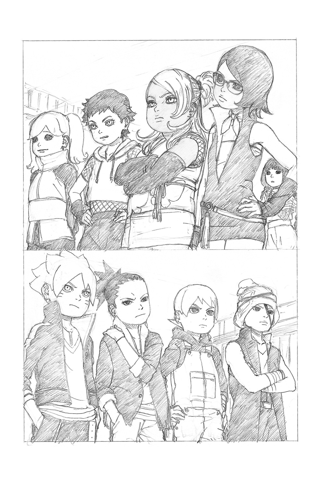
一人、相変わらずおどおどしているスミレを除き、互いにやる気十分だ。
「それでは、始めっ！」
シノの合図と共に、一斉に走り出す面々。
普通の学校なら、単なる体力勝負。だが、まだ子供だろうと彼ら彼女らは、忍者だ。
「よし、作戦通りにかませってばさ、イワベエ！」
「オウ、任せろ！」
地面に拳を叩きつける。土遁によって地面が盛り上がり、女子の行く手を阻む即席の罠となった。
「きゃあっ!?」
地形に足を取られ、転ぶなみだ。
「へっ、ここで大半足止めしてやるぜ！」
ニヤリと笑って仁王立ちのイワベエ。
「せ、先生、あんなのアリなの!?」
「当然だ。なぜなら、ここは忍者アカデミーなのだから」
ジャッジを下しつつ、シノは内心で生徒たちへの評価を更新する。
（結乃イワベエ......不登校の問題児だったが、最近は皆の輪に入って本来の力を発揮しつつある。いい傾向だ）
「ったく、どーやらあちしの出番のようね。部分倍化の術！」
「な......うおぉ!?」
イワベエの頭上から、巨大な掌がだしぬけに降ってきた。カロリーの消費と引き換えに、体の一部分を巨大化させる秋道一族の秘伝忍術だ。
圧倒的な質量攻撃に、さしものイワベエも地面に押さえつけられてしまう。
「ふっふっふ、チャイム直前に教室を抜け出してゲットした、焼きそばパン大量チャージでカロリーストックは絶好調よぉ」
「って、それじゃあなたがあの争いの原因みたいなもんなんじゃ......」
ニヤリと笑うチョウチョウに、思わず突っ込みを入れるサラダ。
（秋道チョウチョウ......やる気にいささか難ありだが、実力は折り紙つきでメンタルも強い。先が楽しみだ）
どこか嬉しそうに評価を続けるシノ。こうしてなんでもありの場で各員の実力を見定めるのも、この男女対抗勝負のもう一つの目的というわけだ。
「今だ！ って、あ......足が動かないっ!?」
「影縛りの術、成功だぜ。先には行かせねーよ」
先頭に飛び出そうとしたわさびを、シカダイが釘付けにした。
「くっそぉ、放しやがれデコ助やろー！」
「他の連中が行ったらな」
（奈良シカダイ。面倒臭がりだが、父譲りの強力な術をすでに使いこなすだけでなく、参謀としての明晰な頭脳が持ち味だ......次の課題は持久力か）
その時、校舎の中から花火のような爆発音と、先に行った連中の悲鳴が響き渡った。
「な、なんだありゃ!?」
「......一つ言い忘れたが、各所にトラップを仕掛けさせてもらった。大きなケガをするようなものではないが、せいぜい気をつけることだ」
とんでもないことを言い出すシノに、一同がどよめく。
むろん、教師には話を通して他のクラスはすでに下校させている。やるとなったらとことんやるのがシノの性分である。
「なぜなら、より実戦に近い緊張感を経験することが、君たちにとっての糧となるからだ。いずれ任務のため三人一組のスリーマンセルを組む際、こうして培ったすべての経験が判断材料となる、それに......」
くどくどと説明を続けるシノだったが、その周囲に生徒たちはすでに誰もいなかった。
「ったく、普段地味なのにこういう時だけムチャしやがって、シノ先生め......」
ぼやきながら廊下を走るボルトたち男子組。下手に女子よりも先行していたがために、トラップで気絶したり、女子との交戦で脱落したりで結構な人数がすでに減っている。
「デンキはよく無事だったね、運動神経あんまりないのにさ」
「ぼ......僕、最初に出遅れてたから逆に巻き込まれずに済んだんだ」
いのじんの歯に衣着せぬ物言いに、少し顔を赤くして恥ずかしげに答えるデンキ。と、その眼前に手裏剣がカカッと突き刺さった。
「うわあ!?」
見れば、廊下の曲がり角に陣取った女子の一団が、これ以上行かせまいと手裏剣の弾幕を張っている。トラップの混乱に乗じて先回りした、サラダ率いる部隊だ。
「くそ、あれじゃ近寄れねーぞ！ 回り道は大幅タイムロスだ！」
「僕に任せてください！ はぁぁぁあっっ!!」
壁にかけられた大きな三角定規を手に取り、射線上に飛び出したのはメタルだ。
そのまま華麗な定規さばきで手裏剣のことごとくを叩き落とす。
「見ましたか！」
（メタル・リー......体術はもちろん、すべてをそつなくこなすオールラウンダー。ただし、いかんせんメンタルが弱い）
外の木の上から交戦を見守りつつ、相変わらず評価を続けているシノ。
と、そこに比較にならない鋭い狙いで飛来した手裏剣が、メタルの手足を壁に縫い止めてしまう。
「う、うわあ!?」
投げたのはサラダだ。
「くっ、あいつめ！」
（うちはサラダ......手裏剣術の冴えは全生徒中トップ。これも、うちはの血か）
サラダの加勢によって勢いを取り戻した女子たちが、再び雨あられと手裏剣を飛ばしてくる。
「ここを突破するのはムリだ！ こっちから回るぞ！」
シカダイの先導で、たまらず迂回する男子たち。
「こっちって......非常階段か！ さすがだってばさ、シカダイ！」
「ああ、バカ正直に建物の中を進む必要はねーからな」
校舎の外側を駆け上がるボルト、シカダイ、いのじん、デンキの四人。
「それにしても、ずいぶんと減っちゃったね......悔しいけど、統率が段違いだ」
「女は群れるのが好きだからね」
いつもの毒舌で、褒めてるのかけなしてるのかわからない感想を口にするいのじん。これがなければさぞかしモテるのだろうが、本人は誰に対してもマイペースだ。
そのまま、たどり着いた三階入り口のドアに手をかけるが、ロックがかかっている。
「最新の電子ロックだね。ここは僕に任せて！」
デンキは背のバッグからカスタムメイドのパソコンを取り出し、電子制御板にコードを繫いでキーボードを叩くと、ややあってロックの表示は赤から緑に変わった。
「おおっ、やるじゃねーか！」
「うん、僕だって力になってみせるよ」
ボルトとハイタッチを交わすデンキ。
「よし......少々めんどくせーが、ここからがオレたちの反撃開始だぜ！」
＊ ＊ ＊
一方、残りの数で勝る女子たちは、サラダを先頭に隊列を組んで廊下を進んでいた。
チョウチョウやなみだ、スミレたちの所属する別の班と二手に分かれ、それぞれが警戒しつつ別ルートで屋上を目指すという、現状の優位を活かした合理的な作戦だ。
男子たちの姿はしばらく見えない......と突然、壁の非常ベルがけたたましく鳴り響いた。驚き、隊列を乱す女子たち。
「みんな、落ち着いて！」
「こんなの、ただのこけおどし......きゃあっ!?」
薄暗い中、高速で飛び交う何かが次々と女子たちを襲った。
慌てて応戦するも、この状況では同士討ちが怖くて飛び道具もろくに使えない。よく見れば、飛びかかってきているのは墨絵で描かれたデフォルメ調の動物や鳥だ。
「これは......いのじんくんの、超獣偽画!? でも、本体はどこに......!?」
＊ ＊ ＊
三階、非常階段の踊り場。
デンキのパソコンのモニターに、混乱する廊下の様子が映し出されている。監視カメラをハッキングして映像を流しているのだ。
「よし......こうすりゃ、一方的に安全な場所から攻撃できるってわけだ」
「さすがシカダイ。自分の手を汚さずに女子を痛めつけるのが得意だよね」
「って、誤解される言い方すんじゃねぇよ!?」
ともあれ、サラダをはじめとする主力をここでまとめて脱落させられれば大逆転だ。
だがそこに、チョウチョウ指揮する別働隊が下から駆け上がってきた。
「見つけたぁ！ あんたたちぃ、コソコソとそれ以上好き勝手させないわよぉ！」
「げ、しまった!?」
飛来した手裏剣が、パソコンのモニターに突き刺さる。これでは遠隔戦法も使えない。
「わああ!? ま、まずいよ！」
「ちっ、いったん校舎の中へ撤退だ！」
「逃がさないんだから！」
ここぞと追いすがるチョウチョウたち。このままでは数に劣る男子は一網打尽だ。
「まだだ！ こ、ここは僕に任せて！」
消えかけたモニターを睨み、デンキが大急ぎでキーを叩いた。すると、それによって操作された行く手の防火シャッターが閉じ始める。
「さあ、先に行って！」
「でかした、デンキ！ お前の犠牲は忘れねーぞ！」
這々の体でそこから逃げ出すボルト、シカダイ、いのじん。
閉じていくシャッターの隙間から、鬼の形相のチョウチョウに追いつかれようとしているデンキが、それでもやり遂げた男の顔でグッと親指を立てているのが最後に見えた。
＊ ＊ ＊
廊下をひたすら走る、ついに三人になってしまったボルトたち。
「くっ......デンキ、お前の死は無駄にしねぇってばさ......！」
「いや、死んでないからね？」
「それはそうとまずいぜ。追ってこないってことはあいつら、先に屋上のフラッグを押さえるつもりだ。このままじゃ勝ち目はねえぞ？」
イチかバチかで屋上に突入しても、圧倒的に数で勝る女子にすり潰されてしまう。
さすがの策士シカダイも、一発逆転の作戦が浮かばない。
「......なあ、口寄せの巻物を使うってのは、どうだ？」
ボルトが口にした意外なアイデアに、二人の視線が集中した。
「朝の授業の後、先生が巻物を準備室にしまってんのを見たってばさ。あれでドでかい獣を呼ぶとかすりゃ、大逆転できるぜ！」
一瞬、それは冴えたアイデアかと思われたが、シカダイは首を振る。
「......ダメだ、口寄せは高等忍術だ。いきなり試してうまくいく保証はねぇ」
「大丈夫だって！ それに、他にどんな手があるってんだよ？」
「失敗すりゃシャレじゃすまねぇぞ。使うなら、武器の口寄せの方だ。いいな？」
珍しく強い口調で制された。こうなると、不承不承ボルトも承諾するしかない。
「よし......じゃあ、作戦を伝えるぜ。武器口寄せの巻物をお前の影分身に持たせて暴れさせ、注意を惹いてる間に本体とオレでイチかバチかフラッグを奪いにかかる。いのじん、お前の超獣偽画はまだ出せるか？」
「あと一回くらいならね」
「じゃあそれも投入する。分は悪いが、しゃあねえ......作戦開始だ」
うなずき合う三人。
だがその時、ボルトの瞳には、いつものいたずらっぽい光が宿っていた。
＊ ＊ ＊
「もう......屋上に続く扉を土遁で固めるなんて、ちょっとやり過ぎなんじゃないかしら、シノ先生......」
ぼやきながら土壁を削る作業に没頭するサラダたち。
ずいぶんと時間をとられてしまったが、あともう少しで女子の勝ちが確定する。今さら男子たちが追いついてきても、あの少人数じゃたかが知れている。
「任せんさい！ 今日のあちしは絶好調よぉ！」
崩れかけた土遁の壁がチョウチョウの部分倍化で打ち砕かれ、ようやく扉が開いた。屋上に殺到する女子たち。
目当てのフラッグは、無人の屋上の中央にはためいている。
「来た！ 後ろから超獣偽画よ！」
「最後の悪あがきってわけね！ みんな、構わずフラッグを！」
だが、その時、校舎の外側を弾丸のように飛び上がってくる人影があった。
「え......ボルトくん!?」
驚きの声をあげるスミレ。
影分身に自分を蹴り飛ばさせ、ジャンプ台のように使う動きを繰り返すことでここまで到達したのだ。
「外から!? でも、一人で何ができると......！」
不敵に笑うその背には、大きな巻物がひとつ背負われている。
「へへっ！ ここからがうずまくボルト忍法帖の始まりだってばさ！」
「あいつ、打ち合わせと違うじゃねーか!? 何する気だ!?」
女子たちの背後から機会をうかがっていたシカダイが、慌てた声をあげる。
「なんだか知んないけど、もう遅いわよ！ フラッグはあちしのものなんだからぁ！」
ドスドスと地響きをたてて一直線に進むチョウチョウ。
それを止められる者は、今の男子側の戦力には存在しないはずだった。
しかし、ボルトが広げた巻物を見て、シカダイが、そしてサラダが目を剝いた。それはすでにボルトのサインと手形が刻まれた、まぎれもない口寄せの巻物だったのだ。
「さあ、来い！ 口寄せの術ッ！」
「ウソ......まさか!?」
ばん、と手が叩きつけられる。ボルトのチャクラが、黒い稲妻のような形となって周囲に渦巻いた。
「あいつ、マジでやりやがった!?」
「はわわっ、でも、これ......！」
「何かおかしいわよ!?」
もうもうとあがる黒煙、稲光のように放電を伴って荒れ狂うチャクラの乱流。
木ノ葉丸が見せた時とはまるで違う、何か異様な事態が起こっているということだけはその場の全員がはっきりと感じ取った。
（な、なんだ......!?）
当のボルト本人が困惑の渦中にあった。
本来想定したものではない何かが、その場に現れようとしている。
＊ ＊ ＊
暗い世界の中......『それ』は、どこか産声にも似た歓喜の声をあげた。
やっと、自分が外に出られることに。
この世に生まれてきた役目を果たせることに。
全身を貫く実感に震えながら、『それ』は禍々しい雄叫びをあげた。
＊ ＊ ＊
轟音と衝撃。
もうもうたる黒煙と共に目の前に出現したモノが何であるか、誰にもわからなかった。
それはあまりに巨大で、闇で塗り固めたような体表も、ぼんやりとにじんだような輪郭も、はっきりと全貌をつかめるような類いのものではなかったのだ。
ただ、恐るべき力を持つ何かとだけ認識できる、謎めいた存在。
「こいつ......なんなんだってばさ......!?」
自分が呼び出したことが信じられないといったふうに、呆然と見上げるボルト。
それでもフラッグにたどり着こうと走るチョウチョウめがけ、巨大な何かから伸びた太い触手、大蛇のようにも見える何かがのたうち......偶然、その体を吹き飛ばした。
「ふぎゅっ!?」
スローモーションになった視界の中、ほぼ水平にすっ飛んでいくチョウチョウの体は、このままでは屋上から放り出されてしまうコースだ。
「......あぶねぇ！」
反射的にボルトの体が動いた。重すぎる体を受け止めるべく、間に入って両手を広げる。だが、一人では到底支え切れるはずもなく......！
「ぐうぅっ!?」
「お、重てぇ！」
「ったく、何がスマートなデブだよ!?」
シカダイといのじん。同様に飛び出した二人も加え、褐色のふくよかボディを三人がかりでぎりぎり受け切った。
「は、はわわ......」
ぺたんと尻餅をつくスミレ。その視線は、出現した謎の怪物にまっすぐ注がれている。
さっきの触手が頭上に振り上げられ、叩きつけられようとしているのだ。それはただの寝返りのような行為なのかもしれないが、直撃すれば死人が出ることは免れないだろう。
誰もが動くに動けない、その時。
「螺旋丸!!」
神速の影となって飛び込んできた木ノ葉丸が、掌に生み出した球状に輝く光球を触手めがけ叩きつけた。
乱回転するチャクラを圧縮し、ゼロ距離で叩き込むＡ級高等忍術だ。
さしもの巨大触手も接触箇所から勢い良く吹き飛ばされ、巨体が揺らぐ。
「す......すげえ！」
あんな術が使えればどんなにいいだろうと、目を輝かせてそれを見るボルト。
〈オォォォォ......!!〉
次の瞬間、何種類もの動物の声を混ぜ合わせたような、恐ろしげな鳴き声が響き渡ると、蛇めいた謎の触手はその本体らしき影ごと煙をあげて消失した。
「た、助かったってばさ......」
＊ ＊ ＊
夕暮れに照らされた校舎の屋上には、大きな亀裂が走っていた。
あの謎の巨体が力一杯叩きつけた衝撃をもろに受けたのだからムリもない。
「これは......予想外のことになったな......」
さすがに青い顔をしているシノ。
「だからやめとけって言っただろ、ボルト」
「う......でも、あんなのが出てくるとは思わなかったぜ。ガマを呼んだはずだったのによ」
「だから軽々しく高等忍術に手を出すなということだ、コレ！」
「ってぇ!?」
怒りのゲンコツをボルトの頭に降らせる木ノ葉丸に、いのじんが聞いた。
「木ノ葉丸先生、口寄せに失敗してあんなものが出てくることって、あるんですか？」
「ん？ まあ......時空間忍術は、常に安定した結果をもたらすとは限らないからな。こういうこともなくはない......」
珍しく、歯切れの悪い返答を返す青年忍者。
「まったく......本当にあんたたち、バカじゃないの？」
腰に手を当てたサラダが、冷たい視線で見下ろす。さすがに言葉に詰まる男子たち。
「くっ......でも、勝負は......」
「ああ、オレたちの負けだってばさ」
そう、あの時。
吹き飛ばされたチョウチョウは、気を失ってなお、フラッグをつかんでいたのだ。
「ま、仕方ねーよ。めんどくせーが、約束は約束だ」
「おう、煮るなり焼くなり好きにしやがれ！」
ボロボロになったシカダイやイワベエも、観念して座り込む。
だが、サラダはチョウチョウと顔を見合わせ......一転、柔らかい微笑を浮かべた。
「それなんだけど。さっき女子みんなで話し合って、この勝負は引き分けってことでいいんじゃないかって」
「......え？」
「ま、あちしも助けられた借りは返さないと女がすたるからね。今日はあちしに免じて、貸しにしといてあげるってコトよ」
「ありがとう、ボルト。チョウチョウを助けてくれて」
にっこり微笑むサラダに、ボルトはすっかり不意を突かれてしまった。
「お、おう......」
照れ隠しに、頭をぽりぽりかいて視線をそらす。
（なんだ、あいつ......あんなカオも、できたのか）
それを皮切りに、互いの健闘を讃え合う声があちこちから起こった。
「確かにみんな、思った以上に強いってことがわかったよね」
「うん、このクラス、結構レベル高いかも？」
デンキやわさびたちも笑い合う。
と、そこに、うんうんとうなずきながらシノが割って入った。
「その通りだ。これで理解できただろう？ いずれお前たちは......そう、焼きそばパンになれる存在だ」
突然何を言い出すのかと、疑問符を浮かべるボルトたち。
「焼きそばとパン、単体でもそれぞれに美味い。だが、両方合わせればもっと美味い、ということだ。つまり......」
「あー、みんなで力を合わせれば敵はいないってことですかね」
「ぐっ......!?」
いいことを言おうとして決めの部分をシカダイにかっさらわれ、ぐらりと傾くシノ。
「だったら最初からそう言ってくれりゃいいのに。シノ先生、いつも話が長ぇんだってばさ、まったく」
「ていうか、いいこと言おうとしてスベり気味だよね」
「ッ!?」
どっと笑いが起こった、その直後。
不吉な音と共に屋上の亀裂がみるみる広がり、校舎の一部......ちょうどボルトたちの教室を含む部分が、轟音と共に崩れ落ちた。
「な......」
「え、う、ウソ!?」
「こ、校舎が......！」
今度こそ、完全に真っ白になって硬直してしまうシノ。
「やれやれ......当分青空教室ってことだな、コレ......」
一人苦笑する木ノ葉丸だったが、その表情がふと、里を守るベテラン忍者としての真剣なそれにシフトする。
（それにしても、さっきのバケモノは一体......そもそも、まだ未熟なはずのボルトのチャクラでなんであんな大物が呼べたんだ......？）
＊ ＊ ＊
そんな学校の様子を、遠くの高台からじっと見つめる目があった。
つくりもののように美しい、金色の目......どこか蛇の眼光を思わせる、冷たい瞳が。
その朝、平和なはずの通学路は、ふってわいた混乱の渦中にあった。
「うおぉぉ!! オレを落第にしやがったアカデミーの節穴教師どもめぇぇ！ オレの忍術を見せつけてやるッ、後悔しやがれぇぇ!!」
叫び、火遁で生み出した火球を乱射する巨漢の不良生徒。
どうやら、落第したショックのあまり無軌道な凶行に及んでいるらしい。
「ったく、朝っぱらからめんどくせー......通学のジャマすんなよな」
自販機の陰で火球の巻き添えを避けつつ、シカダイがぼやく。
「じきに取っ捕まえに来る大人たちに任せようぜ、ボルト......って、おい!?」
そんなシカダイの隣から、ボルトは制止もきかず飛び出した。
彼の目にだけは、見えていたのだ。
不良生徒の体から立ち上る、奇妙な禍々しいチャクラが。
（メタルの時と同じ......てことは、こいつもぶちのめせば正気に戻るかも！）
軽快に火球をかわし、巨漢の背中に飛び越えざまの蹴りを食らわせる。
「ぐわっ、このチビ!?」
「面白ーことやってんじゃねーか、加勢するぜボルト！」
土遁でハンマーを生み出したイワベエが、不敵に笑いながら走ってくる。
「なんだ、似たようなこと言ってるけどあれお前の友達とかじゃねぇのか」
「ちげェよ！ 一緒にすんじゃねぇ！」
「く......くそっ！」
形勢不利と見て、火遁を地面に放って即席の炎の壁を作り、その隙に路地裏に逃げ込んでゆく巨漢生徒。
「うわ、熱ちちっ!? っとと、逃がさねえってばさ！」
一瞬ひるむも、壁を足場にした三角飛びで炎を飛び越え、追跡するボルト。
だが、走り込んだ路地裏で彼を待っていたのは――。
「え!?」
気絶し、大の字で地面にのびているさっきの生徒の姿。その体からは、歪んだチャクラの気配はもう感じられない。
そして傍らには、うっすらと微笑んでこっちを振り返る、ボルトと同じくらいの背格好の見慣れない少年の姿があった。
「――騒がしい街だね、ここは」
袖の長い着物のような服装で両腕をすっぽり隠し、色素の薄い肌とくせ毛を持つ、どこか中性的な印象を与える美少年だ。
（なんだ......誰だ？ こいつが倒しちまったのか？）
ここにボルトが駆け込むまでのわずかな時間で、音もなく。だが武器や忍具らしきものも目に見える範囲には持っていなければ、白い顔に汗ひとつかいた様子もない。
ただじっと、切れ長の目がボルトを見据えている。
一瞬、穏やかなはずのその眼光が、まるで獲物を補食しようとする爬虫類の冷たい瞳に思え、ボルトの背筋をゾクッと震わせた。
「......お前は......？」
不思議な少年は、ただ無言でうっすらと笑っていた。
＊ ＊ ＊
「今日は、お前たちに転校生を紹介する」
謎の少年の素性は、すぐにあっさりとわかった。その朝のホームルームで、シノが彼を新たなクラスの一員として紹介したのである。
「あいつは......！」
目を丸くするボルト。
「今日からお前たちと共に学ぶことになった――ミツキだ。仲良くしてやってくれ」
「ミツキと言います。音隠れの里から来ました」
微笑み、ぺこりと頭を下げる。
生徒たちがざわついた。音隠れの里、という単語に反応したのだ。
「あー、お前たちが驚くのも無理はない。確かに音隠れは、大戦前は木ノ葉の里に攻め寄せてきたこともある」
シノはオブラートに包んだ言い方をしているが、音隠れの里は〝木ノ葉壊滅のため〟という、物騒な目的で生み出されたコミュニティだ。
それを作り出したのは、かつて伝説の三忍の一人に名を連ねた忍者、大蛇丸。
木ノ葉の要人たちと浅からぬ因縁を持つ彼あるいは彼女（性別すら定かならぬ恐るべき存在だ）が目論んだ、木ノ葉隠れの里壊滅計画〝木ノ葉崩し〟は、うずまきナルトをはじめとする第四次忍界大戦の英雄たちが頭角を現すきっかけとなった歴史的大事件でもある。
「だが、それも過去の話だ。前大戦で壊滅した音隠れは、新たな忍の里として、うちの里と友好的関係を築きつつある。このミツキも、その一環としてここに留学を――」
なおも説明を続けるシノだが、生徒たちはもうそれをロクに聞いていない。
「ねえボルトくん、あの転校生のこと知ってるみたいだけど」
「ああ、朝にちょっとな。暴れてたバカを、オレらより先に倒しちまったんだ」
「ふむ、かなりの実力者ということですか。どんな術を使うんです？」
メタルの問いにシカダイは首を振り、
「さーな、オレたちも実際に戦ってるとこは見てねーよ」
「ふん、獲物を横取りされちまったし、あとでいっちょ手合わせしたいもんだぜ」
「......っておい、お前ら！ 話を聞け！」
シノの怒鳴り声もなんのその、勝手に盛り上がっている。一方、女子たちはというと。
「ねぇねぇ、彼ってばなかなかイケメンじゃない？」
「う、うん......」
「ま、あちしに釣り合うほどじゃないけどね」
ミツキのミステリアスな美貌に、興味津々の子も少なくない様子だ。
いのじんやシカダイ、それにボルトもそれぞれ美人の母親に似て、なかなか悪くない顔の造作をしているのだが、彼女らにとっては〝いつもバカやってる男子〟としてのイメージが強すぎるため意識の外なのである。加えて、いのじんは毒舌すぎた。
「はわわ......み、みんな、ホームルーム中は静かに......」
「......くだらない」
サラダのため息。こうなると、いくらシノやスミレが真面目なことを言っても無駄だ。
「まったく......まあいい、ミツキ、お前の席は......なにっ!?」
驚くシノ。いつのまにか転校生の姿が教壇から消え、ボルトの隣に立っていたのだ。
「ここ、いいかな？」
「おう、もちろん。うずまきボルトだ、よろしくな」
中性的な微笑みに、ニカッと笑い返す。初対面の相手を先入観やレッテルで見るような性格ではないから、友好的な態度にはまっすぐに返すのがボルトだ。
「わかんねーことあったら、なんでも聞いてくれってばさ」
するとミツキは細い首をかしげ、
「ふぅん......なんでも？」
「ああ、クラスメートってそういうもんだろ」
ボルトの言うことがいまいちピンと来ていない、というどこか不思議そうな表情で、そういうものか、とうなずく。
「あ、じゃあさっそく聞いていいかな。ここって屋根も壁も、ないみたいだけど......学校って普通こういうものなの？」
「誰かさんのおかげで青空授業さ」
「うっ......シカダイ、今その話はいいじゃんかよ！」
「ええと......そろそろ授業、始めていいか......？」
いつもに増して、始まってもいないうちからすでに憔悴したシノなのであった。
＊ ＊ ＊
ミツキは、奇妙な転校生だった。
聡明なのだがどこか感性や行動がズレているというか、浮世離れしているのだ。
たとえば、数学の授業中こんなことがあった。
あてられたボルトが、手裏剣の軌道計算の公式を鼻歌混じりで黒板に書いているのを、イワベエが納得いかない顔で見ている。
「クソッ......ボルトのヤツ、居眠りや遅刻ばっかなのになんであんなのわかるんだよ」
「まあ彼、ああ見えて要領はいいからね」
いのじんの言う通り、ボルトは問題児であっても劣等生ではない。
むしろ、生まれ持ったセンスと才覚でなんでもすぐにこなせてしまうからこそ、努力が苦手で飽きっぽく結果的に問題児ぶりが加速しているという側面もある。
「むしろ、君こそ大丈夫？ あれくらい忍者としての基礎知識だよ」
「ぐっ......き、キドーケイサンなんぞいらねぇ、カンだ！ カンで投げりゃ当たる！」
「ま、まあまあイワベエくん、あとで教えてあげるから......」
フォローを入れるデンキ。彼ら二人の関係も、改善されつつある。
やがて、設問を解き終えたボルトが得意げに振り返った。
「いっちょあがり。へへっ、オレにとっちゃカンタンな問題でございやしたよ」
だが、黒板に目を走らせたシノは難しい顔になって見とがめた。
「こら、待て。ちゃんと、教えた数式を使って解かないか」
「え〜？ こっちの公式の方が手っ取り早いんだぜ？ それより先生、もっと骨のある問題出してくれよ」
教師にそんな物言いをするボルトが大人びて見え、生徒たちがおおっとどよめく。
こうなると、面白くないのは面目丸潰れのシノだ。ピクッとその額に青筋が浮かぶ。
「ほう......ならば、お望み通りにしてやろう。さあ、その余裕でもう一問解いてみろ」
新たに書かれた問題は、現在習っているレベルを大きく超越した難度だった。さすがにボルトの手が止まる。
「うげ......先生、大人げないってばさ!?」
と、そこに、またもや音もなく割り込んできたのがミツキだ。
「僕に任せて。いい？ ここはまず、こうやって運動方程式を計算して空気抵抗を先に算出するんだよ。そうしたら――ね、カンタンでしょ？」
ボルト以上の手際で、あっさりと難問を解いてしまった。
「おお、なるほど！ すげーじゃん、お前！」
「おいおい、待てミツキ。お前に解けとは言ってないのだが......」
慌てるシノに、ミツキは不思議そうに首をかしげ、
「？ でも、ボルトが困ってたから。わからないことは教えるのがクラスメート......じゃないの？」
「いや、お前な......はぁ、もういい。わかった、二人とも席に戻れ」
シノも勢いで大人げないことをしてしまったという自覚があるだけに、それ以上強くは当たれない。
（さっきのオレの言葉を、そう解釈したのか......ミツキって、ちょっと変なヤツ）
うっすら笑みを浮かべたミツキを横目で見つつ、ボルトもきょとんとした顔になるしかないのだった。
ミツキの異様さは、その後の実技訓練で決定的に発揮された。
体育館で二人一組になっての、素手での組み手が行われていた時のことだ。
「もらったぜ、イワベエ！」
「甘い！ ......フンッ！」
スピードでかく乱し、背後に回って一撃を与えようとしたボルトの腕を振り返りもせずつかみ、力任せにカウンターの一本背負いを決めるイワベエ。
「それまで！ この勝負、勝者はイワベエ！」
トップクラス同士による見応えのある勝負に、わっと歓声にわくクラスメートたち。
「どうだ、ついに一矢報いたぜボルト」
「へへっ......やっぱ、パワーじゃかなわねぇってばさ」
勝ったイワベエはもちろん、ボルトも楽しそうだ。
と、ガッツポーズのイワベエに歩み寄ったのは、にこにこ顔のミツキだった。
「ねえ、次は僕とやろうよ」
「おう、望むところだ転校生。胸貸してやるぜ、本気でかかってきやがれ！」
その言葉を聞き、スッとミツキの目が細く光った。
「いいの？ じゃあ――遠慮なく」
瞬間、合図も待たずにミツキが間合いを詰めた。
鞭のようにしなる手刀が連続で繰り出され、あのイワベエが防戦一方になる。
「ぐっ!? こ、こいつ......！」
「おい何をしている！ まだ始めの合図もしていないぞ、ミツキ！」
シノの静止もきかず、イワベエの重心を崩して床に引き倒すや、蛇がまとわりつくような裸締めで肩と首の関節をがっちり極めて締めつけ始めたのだ。
「がっ......ぐ、うぅ......ッ!?」
頸動脈と気道を圧迫されたイワベエの顔色が、どんどん青くなってゆく。
「やめろってばさ、ミツキ！」
さすがにまずいと見たシノが止めに入る直前、ボルトが叫んだ。
その声にピクッと反応し、イワベエを解放するミツキ。咳き込む彼にシノが駆け寄る。
「......どうして止めたの、ボルト？ もう少しで完全にコワして、僕の勝ちだったのに」
周囲の空気が凍る中、悪びれずにあっさり口にされた剣吞な言葉に、ギョッとするボルト。壊す、と聞こえたが、さすがに何かの聞き間違いだろうか。
「とにかく、イワベエに謝れ。いくらなんでも、やりすぎだってばさ！」
「え？ どうして？ 僕はただ、本気でこいって言われたから......」
困惑顔のミツキに、ボルトもついカッとなり、
「ふざけんな！ オレは、仲間相手にあそこまでする戦い方は好きじゃねぇ！」
怒鳴った言葉が、ミツキをはっとさせた。
「好きじゃ、ない......？ そっか、うん、君に嫌われたくはないな......」
しばらく何かを考えた後、イワベエに素直に頭を下げるミツキ。下げられた当の本人を含め、クラスメートたちが啞然としていたのは言うまでもない。
（ちょっと、じゃねーな......だいぶ変だぞ、こいつ）
ボルトがミツキへの印象を更新している背後で、一部始終をジッと観察している生徒がいた。シカダイだ。
「あいつ......」
彼の射るような目は、最初のホームルーム以来、ミツキに油断なく注がれていた。
＊ ＊ ＊
「珍しいわね、シノ。あんたから呼び出すなんて」
夜の屋台。あでやかな美貌を持つ女性が焼酎のコップを傾けながら、隣で黙りこくるかつての教え子を興味深そうに眺めた。
彼女の名は猿飛紅。少年期のシノが所属していた第八班を教官として担当した上忍だ。
「......お忙しいところ、すみません」
「いいのよ、どうせ隠居の身だもの。相談事は、噂の音隠れからの転校生のことかしら？ ただでさえ問題児が集まったクラスらしいのに、あんたも災難よねぇ」
「............」
ゴーグルに覆われた目を伏せ、目の前の水のコップをじっと見つめるシノ。彼は扱う忍術の特性上、その運用に支障をきたすため酒は飲まないようにしているが、もしそうでなければいっそヤケ酒でも呷ってストレスを解消したい気分だった。
転校初日からさまざまなトラブルを巻き起こしたミツキ、澄ました顔で遅刻やサボりの常習犯シカダイ、そして言わずもがなの大問題児ボルト。一癖も二癖もある生徒たちを抱えた忍術クラスを切り盛りする心労は、実際にやってみると想像以上だったのである。
「オレは......教師という職業に向いてないのかもしれません。なぜなら......」
しかめっ面で弱音を吐きかけた時、紅がプッと噴き出した。
「何言ってるの。あんたが教師向きじゃないのなんて、里中のみんなが知ってるわよ」
「ッ!?」
何かのツボに入ったらしく、シノの背中をばんばん叩きながらゲラゲラ笑う紅に、困惑を隠せないシノ。
「あーおかしい。あ、気を悪くしたらごめんね。ただ、それでもあんたは今までよく頑張ってきたと思うわよ。向いてないなりに......ね」
「そうでしょうか......？」
よくわからないフォローをされる。
「そ。だから、向いてないだなんて簡単に諦めるもんじゃないわよ。あんたなりに、自分のやり方で生徒たちに向き合ってみればいいんじゃない？ 私がそうしたみたいにね」
「諦めずに......オレなりの、やり方で......？」
恩師の言葉を、口の中で繰り返す。
「そうそう、得意分野を活かしてみるとかね......あ、おっちゃん、こっちおかわり！ あとハンペン追加ねー」
すでに出来上がってしまった紅の陽気な笑い声は、もうシノにはほとんど聞こえていなかった。何やら難しい顔で、めまぐるしく考えをめぐらせているのである。
（得意分野を、活かす......そうか、そうすればいいのか......！）
正面を向いたゴーグルが、ぎらりと輝いた。
＊ ＊ ＊
同時刻。
冷たい夜風が吹き抜ける廃ビルの屋上で、着物の袖をはためかせて鉄骨の上に立つ人影があった。ミツキである。
「ああ......うん、大丈夫。全部、予定通りにうまくいってる」
彼が話しかけているのは、肩に乗せた小さな蛇。それを介した術によって、遠隔地にいる何者かと会話しているのである。
「順調だよ。確かに、あなたの言った通りなかなか面白いことになってるね......」
何かを余興として楽しんでいるかのような、冷たい微笑み。
「......彼？ うん、会えたよ。まだあまり、本格的に話はできてないけどね」
うっすらと、金色の目を細める。
「楽しみだよ。彼が僕の〝太陽〟なのかどうか......それが、もうすぐわかる――」
もうすぐ誕生日にオモチャを買ってもらえるのが楽しみで仕方ないとでもいったふうな、無邪気な顔。その見上げる先には、欠けた夜空の月が煌々と輝いていた。
＊ ＊ ＊
「おはよう、諸君！」
「は、はわっ!?」
その朝のホームルーム、教壇に現れたシノを見た生徒たちは、一斉に硬直した。
無理もない。彼がいつものゴーグルの代わりに着けているのは、パーティグッズの鼻眼鏡。ご丁寧に頭には星柄の三角帽子をかぶって、派手なタキシードをまとっている。
まるで忘年会で張り切りすぎた幹事のような格好だ。とてつもなく似合っていない。
「な、なんだあの格好......？ おいシカダイ、何がどーなってんだ、アレ」
「オレに聞くなよ。まさか、頭でも打っちまったんじゃねーか......？」
生徒たちの困惑もなんのその、シノは自信満々にパチリと指を鳴らす。
「フフフ......レッツ、パーティ！」
と、青空教室の周囲に、一体どこから支えているのか、いくつもの横断幕が出現した。それらには『歓迎！ ミツキくん』『忍者学校へようこそ』『仲良きことは美しき哉』といったカラフルな文字が躍り、いつのまにやら周囲は動物のぬいぐるみや花束といったファンシーなグッズで飾りつけられている。
「と、いうわけで！ この時間を使って、ミツキの歓迎会を開こうと思う！」
大きく腕を広げ、精一杯明るい大声を出すシノ。ぽかんと口を開けたままの生徒たち。
......哀しいかな、誰が見ても完璧に空回っていた。
当のミツキはというと、自分が主役の会だという主旨がよく吞み込めていないのか、小首をかしげて曖昧に微笑んでいる。
「あーあ......無理しちゃって......張り切りすぎてスベってるじゃん、先生」
「でも、ちょっとすごいね。あの飾りつけとか、全部油女先生が作ったんだ」
対照的な感想のわさびとなみだ。
「意外と器用なんだね。努力の方向性が間違ってるけど」
相変わらず辛辣ないのじんに、どーすんだコレ、とばかりにボルトを見るシカダイ。
「ま、いいじゃんかよ。せっかくだから楽しもうぜ！」
「それもそーか......ま、いつもみたいに長話聞かされるよりかはマシかもな」
こうして、クラスを一丸とするためのシノの秘策......歓迎会は始まったのだった。
不思議なもので、ひとたびそういう雰囲気になってしまうと、最初は引き気味だった生徒たちもなんだかんだでこの歓迎会を楽しみ始めた。
シノが用意したお菓子の山が効いたのかもしれない。子供とは現金なものである。
加えて、ミステリアスな転校生にやはり皆、内心で興味津々だったようだ。ミツキは人の輪に囲まれ、質問攻めを受けていた。
「なあなあ、音隠れの里ってどういうとこなんだ？ 木ノ葉とどっちが都会？」
「ねーねー、名字名乗ってないけど、なんていうの？」
女子たちの黄色い声の中、目をキラキラさせたメタルが割って入る。
「昨日の実技訓練で拝見した体術、お見事でした！ ミツキくんは、得意な忍術とかあるんですか？」
「そうだね......遁術は色々得意だよ。風遁に、あと雷遁もね」
と、後ろでお菓子をパクついていたボルトがそれを聞きとがめ、
「はぁ？ 雷遁が得意な里は音隠れじゃなくて雲隠れだろ。ハッタリかますんじゃないってばさ」
「ふふ......本当なんだけど、な」
視線を送りつつ、意味深に笑うミツキ。
「......最初はどうなることかと思ったけど、意外とうまくいってるじゃない、歓迎会」
「もぐ、むぐむぐ......んぁ、なんか言った、サラダ？」
「......なんでもないわ、チョウチョウ」
そんな中、少し離れた校舎の外壁部分で、騒ぐ生徒たちの様子を面白くもなさそうにじろりと見下ろす男がいた。
「ふん、ガキどもは気楽でうらやましいぜ......こっちは朝っぱらから面倒な仕事だってのによ」
仮設足場の上で、先日壊れた箇所の修復作業をしている作業員である。彼はアカデミーの卒業生だったが、結局忍者の道には進まなかった口だ。
「ったく、最近のガキどもときたら......」
不機嫌そうにぼやきながら、彼は退屈な作業を再開した。
（よし......いいぞ、うまくミツキも溶け込めているようだ......！）
めいめいに楽しんでいる生徒たちの様子を、教壇に座って眺めるシノは、うんうんとうなずいて小さくガッツポーズをとった。
（紅先生、見ていてください。あなたの教え通り、オレはオレのやり方で生徒たちの心をつかんでみせる......！）
と、その隣に、いつのまにやらにこにこ顔のスミレの姿があった。
「......油女先生って、優しいんですね」
「な、なんだね筧くん、やぶからぼうに」
感慨にふけっているところを急に声をかけられ、慌てて鼻眼鏡をかけ直すシノ。
「だって、ミツキくんの......いえ、クラスのみんなのためにここまで頑張ってくれるなんて。私、ちょっと尊敬しちゃいます」
屈託なく笑う委員長に、照れて視線をそらすシノ。
（彼女は両親がいないと生徒リストにあったな......）
スミレの家庭事情を想像し、シノは同情的な気持ちになった。
「どうして、そんなに頑張れるんですか？」
「そうだな......オレは昔から、口下手でな。そんなオレでも孤独にならずに済んだのは、アカデミーという場で、多くの友と出会うことができたからだ」
その嬉しさも手伝い、ミツキやボルトたちを見つつ、つい昔を思い出すシノ。
「だから、その恩返しがしたいだけなのかもしれないな。教師として......この里に」
「先生......」
まぶしそうな尊敬の視線に微笑み返すと、シノは元気よく立ち上がった。
「さて、いよいよ会も大詰め、最後の仕上げといこう。......みんな、先生からのプレゼントだ！」
両手を広げて立ち上がったシノの声に、何ごとかと注目する生徒たち。そのまま、まるで指揮者のようにシノが腕を振ると、どこからともなく楽しげな音楽が流れ始めた。
しかも音楽に合わせ、どういう原理か、飾られた花やぬいぐるみたちが一斉に踊り始めたではないか。
「わあ、素敵......！」
「やるじゃん、油女先生！」
女子たちを中心に、歓声があがる。一方、デンキたちは興味深そうに、
「すごいね、一体どんな仕掛けなんだろ？ 電子部品を仕込んでるのかな？」
「僕の超獣偽画とも違う......どんな忍術で動かしてるんだろう」
「......ん？ 忍術？ 油女先生の忍術というと、確か......」
はっと怪訝そうな顔になるメタル。その時、なみだが近寄ってきたクマのぬいぐるみを思わず手に取り、嬉しそうに抱き上げた。
「かわいい〜！」
「む？ ま、待て！ 見るだけだ、触っちゃいかん！」
いきなり慌て始めたシノだが、警告はひと足遅かった。ぬいぐるみの裏からちらりと、顔を出したものがあったのだ。
それは、うぞうぞと足を動かす小さな昆虫。しかも、一匹ではなく二匹、三匹と......！
「え？ ......い、いやぁぁぁあああああっっっ!?」
なみだの盛大な悲鳴があがり、ぬいぐるみが投げられた。
と、それにぶつかった他のぬいぐるみや花の裏側、あるいは隙間や中から、同じように大量の虫が驚いて湧き出してきたではないか。
「どわあああっっ!? む、虫ぃぃぃぃぃ!?」
「さ、最悪ぅぅ!? 超キモいんですけどぉ!?」
「こら、あちしのケーキにたかるなっ！ しッしッ！」
たちまち、阿鼻叫喚の大混乱に陥る歓迎会。
「こ、こんなはずでは......！」
パニックをおさめようにもどうにもならず、シノは呆然と立ちつくすしかない。平然としているのはミツキくらいのものだ。
「へぇ......これが噂に聞く、油女一族の寄壊蟲か。なかなかすごいね」
寄壊蟲。油女一族はこの特殊な蟲たちに、体内を巣として提供し、飼う。
宿主のチャクラを餌として与える代わりに、無数の多種多様な蟲はそれぞれの特性を活かし、諜報から戦闘まで八面六臂の活躍を見せるのだ。垂れ幕を空中で支えていたのも、シノの思い通りにオブジェを動かしたのも、この寄壊蟲である。
「だ、誰かなんとかしてぇぇ!?」
「虫をなんとかすればいいの？ じゃあ......」
逃げ惑う生徒たちの悲鳴を聞きつけ、ミツキは素早く印を結んだ。
「風遁――突破」
口から猛烈な勢いで吹き出された風が、小さな竜巻のような勢いで蟲たちを巻き上げ、吹き飛ばす。
「すげェ！ あいつ、もうあんな風遁を使えるのか！」
感心するボルトだったが、強すぎる突風は勢い余って校舎の外壁にまで押し寄せていく。そこには、修復作業を続ける作業員の足場が――！
「......え？ ちょっ......うわぁぁぁぁああっっ!?」
ガラガラと凄まじい音をたてて半壊する足場。とっさに残骸にしがみついてぶら下がる作業員の悲鳴がこだまする。元忍者学校生でなければケガをしていたかもしれない。
「な、何やってんだよあんたたちぃ!?」
「はっ......も、申し訳ありません！ い、今助けます！ こ......これにてホームルームを終わるっ！」
鼻眼鏡姿のまま、慌てて走っていくシノ。あとには、しっちゃかめっちゃかになった歓迎会の惨状が残された。
「おいおい、どーすんだよこれ......？」
どんよりした顔を見合わせるクラスメートたち。
「......何か、まずいことしちゃったのかな、僕？」
本当にわからないといった様子のミツキに、いのじんも呆れ顔で、
「さすがにその言い方は薄情なんじゃないかな。やり方はともかく、先生、転校生の君が楽しめるように気を遣ってくれたわけでしょ」
「......楽しめるように？ ......僕が？」
きょとんとするミツキに、スミレが嚙んで含めるように言葉を繫いだ。
「うん。ミツキくんは、楽しくなかったの？」
「楽しい......あれが、楽しい......か」
まるで、初めて味わう食べ物の味を確認するように、ミツキはその言葉を繰り返した。
ともあれ、こうしてシノの秘策は、想像の斜め上を行く散々な結果に終わったのだった――。
＊ ＊ ＊
「えーと......油女先生は体調が優れないそうで、二限目は自習とのことです......」
スミレの報告に、あちゃー、という顔を見合わせる生徒たち。
「さすがに、キモいは言い過ぎたか......」
「あとで謝りに行った方がいいと思うぜ。めんどくせーけど」
「だよなあ......って、あれ、そういやミツキは？」
いつのまにやら姿を消していることに気づき、周囲を見渡すボルト。
半壊した校舎の方から立て続けに爆発のような音が響いたのは、その直後だった。
「な、なんだ!?」
混乱する生徒たちの中、やはり真っ先に駆け出したのはボルトだ。シカダイ、イワベエ、サラダにチョウチョウ、生徒たちがそれに続く。
たどり着いた音の出所......二階廊下の真ん中で角材を振り回して暴れているのは、あの元忍者学校生の作業員だった。
「うぉおお！ どうなってんだよここの生徒どもはァ！ 修理のジャマばっかしやがって、いつになったら作業が終わるんだよォォ!?」
「な......なんであんなにキレてんだ、あの人!?」
明らかに尋常ではないその様子。ボルトはその背後に、またあの禍々しい闇色のチャクラの流れ......のたくる黒い蛇のようなビジョンを見た。
「おいおい、またかよ!?」
「......また？ また、って言ったのか、お前？」
耳ざとくそれを聞きつけたシカダイの質問に、ボルトはこくりとうなずいた。
「ああ、昨日の不良や、メタルん時と同じだ。よくわかんねーけど、暴走して暴れてるヤツの周りに、変なもんが見えるんだ......オレだけなのか？」
「へえ、やっぱり見えるんだ、キミには」
いつのまにか、息がかかるほどすぐ背後に立っていたミツキの声。
「!? お前、今までどこに......」
「ふふ......」
怪訝そうに眉をひそめるシカダイだが、ミツキはうっすらといつもの笑みを浮かべるばかり。
（そういえば、こいつ......昨日もあの不良が暴れた直後に出てきやがったな......偶然なのか？ それとも......！）
シカダイの明晰な頭脳が、あらゆる可能性を検討してめまぐるしく回転する。彼はミツキのどことなく不審な雰囲気を感じ取り、これまでもそれとなく注視していたのである。
（待てよ......変になって暴れてる連中が、同じ誰かに『おかしくさせられている』としたら、どうだ......？ そしてその犯人は、まさか......！）
不穏な発想に思い至り、じっとミツキを睨む。だが、その表情は読めない。
「おい、何ボーッとしてんだシカダイ！ 来るぞ！」
イワベエの叫びにハッと慌てて飛び退った刹那、投げつけられた角材が足下の床に突き刺さっていた。
「こうなったらいっそ、直す必要もないほどすべてを破壊してやるゥゥ!!」
「ちょっ、なんだかとんでもないこと言ってますよ、あの人!?」
「冗談じゃないっての、あちしの目が黒いうちは学食と購買だけは壊させないから！」
教師が駆けつけるまでぐずぐずしていたら、どれほどの被害が出るかわからない。力ずくでも止めるべく、慌てて手裏剣やクナイをめいめいに投げつける生徒たちだったが、
「破壊ッ......破壊ィィィィッッ!!」
新たな角材を風車のように振り回し、それらを叩き落としてしまう。元忍者学校生だけあって、凄まじい身体能力だ。このままでは、うかつに近づくこともできない。
「......あの武器さえ封じれば！」
眼鏡の奥で冷静な眼光がきらめき、サラダが狙い澄まして手裏剣を投げた。狙ったのは本体ではなく、抱えた角材の先端部分だ。
「おい、んなとこ狙って何やってんだってばさ!?」
「ふん......計算通りよ、黙って見てなさい」
「破壊、根こそぎ破壊ィィィィ!!」
再び振り上げられる角材......だが、それが頭上でピタリと止まる。見ると、さっきサラダが刺した手裏剣の反対側が、天井に深々と刺さっていた。
「ぬおぉぉッ!? ぬ、抜けん!?」
「今です！ 皆さん、奴を押さえつけましょう！」
体術自慢のメタルとイワベエが飛びかかろうとする。だが、機先を制して先頭に飛び出したのはボルトだ。
「これくらい、オレ一人で楽勝だってばさ！ おりゃあああっっ!!」
慌てて角材から手を放し、殴りかかろうとした暴走作業員の腕をとって、重心を崩して投げ飛ばす。それは先日の訓練でイワベエから食らったあの一連の動作だ。
「ヤロー......オレの体術を、見よう見まねで！」
感嘆半分、悔しさ半分で舌打ちするイワベエ。
「ほんと、要領いいよね、彼」
いのじんが片目をつぶるのと、ずずんッ......と地響きをたてて、大の字になった男の体が床にめり込むのとは同時だった。
闇色のチャクラが抜けていくのを確認し、ガッツポーズのボルト。しかし、ビシビシッ......と不吉な音がそこに鳴り響いた。
「って、おい、足下！」
ただでさえ半壊していた床に、大きな亀裂が入る。凄まじい勢いで叩きつけられた結果、床が崩壊を始めたのだ。
「うう......オレは、一体何を......うわああああっっ!?」
「!? しまッ......間に合わな――！」
階下に落下してゆく作業員の体。高さはそれほどではなくとも、その下には運悪く尖った鉄骨が突き出している。このままでは、大ケガは免れない......誰もがさらなる惨事を覚悟したその時、目にも留まらぬスピードで飛び出した一つの影があった。
「ミツキ!?」
空中で男をキャッチすると、鉄骨を蹴って落下軌道を修正し、優雅に着地する。
「ふふ......ねえ、あなた。こんなことしても、楽しくないでしょ？」
「え......？」
あんぐりと口を開けた作業員に、あの不思議な微笑が向けられた。
「楽しくないのは、ダメだよ......ね？」
「あ、ああ......」
蛇に睨まれた蛙のように、こくこく、と蒼白になってうなずく作業員を尻目に、ミツキは階上のボルトを見上げて、にっこりと微笑んだ。
すっかりおとなしくなった作業員は、駆けつけた下忍たちによって事情聴取に連れられていった。
捕縛劇の立役者であるミツキは、それを誇るでもなく、相変わらず何を考えているのかわからない表情を浮かべながら、その光景を見送っている。
（こいつ......さっき、あの作業員を助けたんだよな......？）
ボルトは少し意外そうに、ミツキの横顔を見ていた。それはイワベエとの組み手で見せた、人の命すらなんとも思わないようなゾッとする雰囲気とはまったく違う一面だった。
「？ なに、ボルト」
「あ、いや......」
涼しげに微笑む金色の瞳に見つめられ、ボルトは戸惑いつつも、こいつはちょっと変人ではあっても悪いヤツではないのだろう......と結論づけた。
「これからもよろしくな、ミツキ」
「うん、こちらこそ、ボルト」
屈託のない笑顔を交わす少年たち。
だが一方、廊下の反対側では。
「な、なんてことだ......！ 授業を休んだばっかりに、生徒たちを危険に晒し、またしても校舎に損害を......!?」
呆然と硬直するシノの姿があった。異変に気づいて駆けつけた時には、すでにすべては終わっていたのである。
ズキン、と痛む胃を押さえ、思わずよろける。
（これでは......オレはやはり、教師失格だ......！）
＊ ＊ ＊
アカデミー、校長室。
シノは全身に嫌な温かさの冷や汗を感じながら、校長、うみのイルカに頭を下げた。
「本当に申し訳ありません......！ すべて、自分の監督不行き届きです......！」
「はは......本当に、相変わらず元気なクラスだ」
温厚そうな顔に柔和なシワを刻んだイルカ校長は、さして気にしたふうもなく笑う。
「まあ、校舎の修理費については心配しなくていい。私から火影様に相談しておくよ」
かつて息子同然に可愛がった教え子に様付けして呼ぶ感慨にふけりつつ、ひどく落ち込んでいるシノを気遣うイルカ。
「は、はい......うぐッ......」
だが、そのイルカの優しさが、トラブルのたびに何度も便宜を図ってもらっているという情けなさが、余計にシノの胃をキリキリと痛ませる。
「......やはり、難しいかな。あのクラスは」
そんな若い教師の心中を察し、いたわるように微笑む校長。
「っ......！」
「まあ、なにかと問題児揃いだものなあ。加えて、例の音隠れからの転校生......もし、本当にキツいようなら、担任をアンコ先生あたりに代わってもらってもいいんだぞ？」
「.........！」
＊ ＊ ＊
シノは夢遊病のようにフラフラと、無人の廊下を進んでいた。
あれから、イルカとどんな言葉を交わしたのか、それすらよく覚えていない。
胸の中に渦巻くのは不甲斐なさと自己嫌悪、そして校長にあそこまで気を遣わせてしまったという情けなさだ。
「どうすれば、いいのだろう......？」
そう簡単に諦めるな、と紅は言った。
だが、いっそ諦めてイルカの言った通り、担任の重圧から解放されればどんなにいいか......と、今のシノは考えずにはいられないほど憔悴していた。
「オレは、教師には、やはり......」
思うところあって、忍界大戦を戦い抜いた彼が教師になることを考え始めたのは、第八班の仲間でもあったヒナタとナルトの結婚式の直前だったことを覚えている。
あれから月日は過ぎ、旧友ナルトは火影になるという夢を叶えた。
自分は、どうなのだろう。こんな惨めな思いをして、目標を叶えたと果たして言えるのだろうか......？
「！」
廊下の向こうから話し声。歩いてくるのはボルトとシカダイ、それにミツキだ。
思わず、曲がり角に身を隠す。
「また自習かよ......楽でいーけど、シノ先生、マジで大丈夫なのか？」
「あの人、一体どうしちゃったの？ ずいぶん元気なかったみたいだけど」
「おいおい、あの人はやめろよミツキ。あれでも一応、オレらの先生なんだぜ」
（一応......だと......!?）
ぐさりと、隠れて聞くシノの胸に言葉のナイフが突き刺さる。
「え、そうなんだ？」
「って知らなかったのかよ!? 今までなんだと思ってたんだ......」
「というか、そんなに凄い人なの？ 今さら、あの人から何か学ぶことがあるとも思えないけど」
（......ッッ!?）
「あれでも昔は凄かったって父ちゃんが言ってたぜ。......今は、どうだか知んないけど」
「まあ、他の先生と比べてイマイチ頼りないっつーか、影薄いっつーか......そういうとこはあるよな」
まさか本人が聞いているとは知らず、好き放題の三人。
彼らの姿が消えた頃には、どんよりと死んだような瞳で立ち尽くすシノの姿があった。
（やはり......あいつらにとってオレは......その程度の存在か......）
ナルトは言うに及ばず、シカダイの父シカマルもその相談役、今の里を動かすナンバーツーともいえる重鎮だ。
そんな子供たちにとっては、自分など、ろくな出世もできなかった落ちこぼれの中年に過ぎないのかもしれない......疲労と心労から、普段なら決して考えないそんな卑屈な考えすら、シノの脳裏を駆け巡った。
そうして、どん底まで沈んでゆく彼の絶望が――闇を呼んだ。
「う......ッ!?」
シノの背に、形無き何かの〝牙〟が突き立った。形も定かならぬ、蛇の形をした何か。それはボルトが幾度も見た、あの。
「く......くく......そうか、そうだったのか......！」
ゆらりと、顔を上げる。
「こんな、簡単なことだったとは......最初から、こうすればよかったのだ......！」
ゴーグルの奥に、邪悪な真紅の光が灯った。
＊ ＊ ＊
翌朝。
しばしば野外訓練に使われる広大な森の一角は、早朝の肌寒い冷気に包まれている。
ボルトとシカダイ、そしてミツキは、ここに自分たちを呼び出した相手を待っていた。
「......ここでいいんだよな？ 集合場所って」
「そのはずだが......」
困惑して、シノからの指示が書かれた手元の紙に目を落とす。
「朝っぱらから課外授業って話だけどよ、他のみんな、全然姿が見えねぇぜ」
「......ちと妙だな。オレたち三人だけってのはよ」
油断なく、ちらりとミツキに視線を送るシカダイ。ボルトと違い、彼はミツキへの疑念を消してはいない。
射るようなその目つきにも動じず、それまで無言でいたミツキが唐突に口を開いた。
「来たみたい、だよ」
横の茂みがガサガサと揺れ、中からシノが姿を現す。
「あ、シノ先生！ 遅かったってば......さ......？」
そっちを振り向いたボルトの言葉は、途中で絶句へと変わった。
「待たせたな......お前たち」
「先......生......!?」
シカダイも言葉を失う。
シノから放たれていたのは、紛れもない濃厚な殺気だった。
表情を隠すゴーグルの下、口の端がニヤリと吊り上がる。
「さあ、最後の授業の始まりだ――！」
ただならぬ雰囲気を察し、シカダイがボルトの脇を小突いた。
「お......おい、何やらかしたか知らねぇけど、さっさと謝れボルト！ ありゃ先生、マジでキレてんぞ!?」
「はぁ!? んなこと言われても、心当たりが......」
「ないの？」
「い......いや、逆にありすぎてどれだかわかんねぇってばさ」
ミツキの冷静かつ素朴な疑問に、サッと青ざめるボルト。
「てか、そう言うシカダイだって、しょっちゅう授業サボったりしてるじゃんかよ、めんどくせーって」
「う......そ、それはだな......えっと先生、オレら謝りますから！ ほらミツキ、お前も頭下げろ！」
「え？ 僕は関係なくない？」
「いや、お前も校舎壊してたろうが!?」
漫才じみた緊張感のないやり取りを前に、しばし無言のシノだったが......。
「ふ、ふふ......いや、もう謝る必要はない。なぜなら――」
服の隙間から、黒いもやのようなものがゾワリと溢れた。
いや、違う。それはよく見れば無数の蟲の群れ。
「なぜなら、お前たちは今から......オレに殺されるからだ」
今、なんて......ボルトがそう口にする間もあればこそ。
まるで墨をぶちまけたような勢いで地面を伝い、空中を飛び、シノの攻撃指令を受けた寄壊蟲の集団は、三人の生徒たちへと殺到した！
「う......うわぁぁ!?」
「ま、マジかよ!?」
反射的に飛び退くボルトとシカダイ。ミツキだけは冷静にクナイを抜き放ち、闇の塊のような群れめがけ投げつけるが、それは空しく突き抜けるばかりだ。
同時にもう一本、シノを狙ったクナイは、盾のように割って入ったさらなる群れによって押し包まれ、食い止められてしまった。
「へえ、あんな使い方もあるんだ。面白いね」
「感心してる場合かよ！ こりゃ冗談でも訓練でもねぇ、シノ先生、マジでオレたちをやる気だぞ!?」
シカダイの声にはかつてない焦りがあった。獲物に情け容赦なく食らいつく凶暴な寄壊蟲をけしかけるなど、洒落や冗談では済まない本気の攻撃行動だと悟ったのだ。
「ま、マジかよ!?」
尻餅をついたまま慌ててシノを凝視するボルトの瞳が、ありえないものを映した。
これまでに幾度も見えたあの、闇色の禍々しいチャクラを。
（あれって、まさか......シノ先生まで!?）
硬直するボルトたちめがけ、シノは体の周囲に盾であり矛でもある蟲群をまとったままゆっくりと歩を進める。
「お前たち生徒に軽く見られるのも、よかれと思ってした努力が無駄に終わるのも、もうたくさんだ......！ 何もかもが、たくさんだ......！」
「え......」
ぎらりと、ゴーグルに覆われた目が光る。
「くくっ......あんなことで今まで悩み抜いていたのがウソのようだ。オレはとうとう解放されたのだ、そう！ この蟲たちのようになぁ！」
叫びに呼応して、寄壊蟲たちが渦巻き、竜巻のように荒れ狂った。
触れた周囲の木々に無数の虫食い穴が瞬時に穿たれ、ボロボロに分解されてゆく。
「や、やべぇってばさ......！ 普段おとなしい人ほどキレたらやばいってヤツかよ!?」
「だから納得してる場合かボルト！ ありゃまさか、メタルの時と同じ......！」
「ああ、どうやらそうらしいぜ！ こうなったら、あの時みたく殴ってでも止めるしかねぇ！」
その言葉に、シノは不気味に傾けた首を、ぐるり、と回して嘲笑った。
「止める......だと？ このオレを、半人前のお前たちがか？ できるものならなぁ！」
竜巻から黒い絨毯へと形態を変え、一直線に地を這い突進してくる寄壊蟲。
「くっ、影縛りの術！」
シカダイも印を結び、同じく地を這った影がそれに真っ向からぶつかる。
しかし、動きを止めたのはほんの一部。残りの大半はまるでスピードを落とさずに迫ってくるではないか。
（やっぱりダメか！ 本体を狙う......いやダメだ、それでも蟲は止まらねぇ！ ちっ、わかっちゃいたがオレの術とは相性が悪すぎるぜ、めんどくせー！）
見るまに、さっき姿勢を崩していたせいで逃げ遅れたボルトへと到達した蟲は、その体を足先からみっしりと覆ってゆく。
チャクラが抜けていくおぞましい感覚。寄壊蟲はこうやって犠牲者からチャクラを吸い取り、衰弱死にすら追い込むことができるのだ。
「うあぁ......ち、力が抜ける!? せ......先生、なんでこんなこと......!?」
苦痛の中、それでもボルトはシノの殺意を信じられない。
そう、信じられるはずもなかった。あの優しい先生が、自分を取り巻く大人の一人が、こんな凶行に及ぶだなんて。
しかし、シノは苦しむ教え子を冷ややかに見つめる。
「なぜなら......お前たちにはもう、いくら指導してもムダだと悟ったからだ。いつもいつも教師を悩ます問題児......オレの話を聞こうともしない面倒臭がり......そして場を乱す異分子」
三人の顔を順番に見て、口元を剣吞に歪める。
「そう、オレは諦めたのだ。これ以上、お前たちの教師であることを......よって、ここで排除する！」
「ぼ、ボルト!?」
寄壊蟲がボルトの全身を完全に覆いかけたその瞬間、
「風遁・突破！」
ミツキが口から放った突風が、間一髪それらを吹き飛ばした。
「ボルト、これにつかまって！」
「え......な、なんだこれ!?」
驚くのも無理はない。ボルトをがっしりつかんで助け起こしたのは、ミツキの袖の中から数メートルも長く伸びた腕だった。
（なんだ、あの術......!? いや、今はそんなこと考えてる場合じゃねーか！）
とっさにポーチから取り出した煙玉を投げつけるシカダイ。シノとの間に、真っ白な煙のスクリーンが作られて視界をさえぎった。
「今だ、逃げるぞ！」
木の枝を飛び移り、一目散にその場を離れる三人。
煙が晴れた時、そこには慌てた様子もなくたたずむシノの姿があった。
「せいぜい無駄にあがくがいい。だが、オレの蟲たちはどこまでも追いかけるぞ......！」
＊ ＊ ＊
あれからどれだけ逃げただろうか。
うっそうと茂る森の中、荒い息で小休止するボルトとシカダイ、そして一人だけ呼吸を乱していないミツキの姿。
「ハァ、ハァ......！ まさか、シノ先生まであんなふうにおかしくなるなんてよ......！」
「ああ......今までの連中とはワケが違うぞ、ありゃ......」
殺す、という言葉をはっきりと口にしていた。
ボルトがやられた全身からチャクラを吸い上げるやり口は、紛れもなくシノが本気であることを裏づけている。
「今までのヤツらみたいに、戦ってぶっ倒すとか自殺行為だぜ......父ちゃんの話じゃ、シノ先生の実力は上忍クラス。三人がかりでもかないっこねぇよ」
ぶるりと身を震わせるシカダイ。
シノは中忍だが、忍者の肩書きは必ずしも実力と正確に比例しているわけではない。特に上忍は推薦が必要な名誉職としての側面もあるため、さまざまな理由で上忍になっていないながらもそれと同等、あるいはそれ以上の実力を持つ者も存在するのだ。
「だったらよ！ 森を出て、他の先生とかに助けを――」
「それもちょっと無理だと思うよ」
ミツキがさえぎった。
「寄壊蟲のチャクラが、すごい勢いで森中に広がってる。ここは森の真ん中で、学校や街からはずいぶん遠い......たどり着くまでに、間違いなく見つかっちゃうんじゃないかな」
「マジかよ!? 八方ふさがりってヤツじゃねぇか......」
いつもの冷静さなら、どうしてそんなことまでわかるんだ、とシカダイはミツキに疑問を呈していたところだろうが、もはや焦りでそれどころではなかった。
「く......そもそもボルト、先生をキレさせたお前が悪い！ オレたち、巻き込まれたようなもんじゃねーか！」
「んなっ!? シカダイだって怒られてたじゃねぇかよ！」
「んだとぉ!?」
焦燥感で頭に血が上ったことで、売り言葉に買い言葉の口喧嘩まで始まった。
ぎゃあぎゃあと言い争うそんな二人を、ミツキだけが冷静な視線で観察している。
（さて......と。さすがに、これはイレギュラーな事態だな......）
彼にとっても、現状はやや予想外だった。
こうなるという可能性がゼロだったわけではない。しかし、ボルトたちが知らないある情報を握っているミツキといえど、すべてを見通しているわけでもなかった。
（でも、これは逆にチャンスかも――）
だがすぐに、この状況を可能な限り利用しようという算段に切り替わる。
冷たい金色の視線が、ボルトの青い瞳にじっと注がれた。
（そう、彼の力を試すのに......ね）
＊ ＊ ＊
忍者アカデミー、校長室。
アンコ先生が持ってきてくれたお茶をひとくちすすり、イルカ校長はホッと温かい息を吐いた。
「ふう......ところで、シノ先生は？ 姿が見えませんが」
「課外授業って届出が出てますね」
予定表を読み上げるアンコ。
その実、三人は命をかけた最後の授業の真っ最中、他の生徒たちは別の場所に呼び出されて待ちぼうけを食っているのだが、もちろんそんなことは知る由もない。
「そうか......昨日、ずいぶんと落ち込んでたからなあ。変に思い詰めてなければいいんだが......」
もしかしたら自分は、気を遣ったつもりで余計なことを言ってしまったのかもしれない。シノの精神的ストレスをもう少しなんとかしてやる方法はないものかと、イルカはあれからずっと悩んでいた。
「大丈夫、大丈夫。生徒と元気に外を走り回ったら、日頃のストレスもばっちり解消できますって」
「だといいが......」
どこか不安げに、窓の外を見る。
ざわめく不吉な胸騒ぎを、イルカは抑えられずにいた。
＊ ＊ ＊
木々をかき分け、草むらを通り抜けて、あてどなく走る。
少なくとも言い争っている場合ではないと気づいたボルトたちは、荒い息の下、いつ追いつかれるかもしれないという恐怖に耐えながらとにかく足を動かし続けていた。
さっきチャクラを吸われたボルトだけでなく、体力でやや劣るシカダイにも疲労の色が濃い。平然としているのはミツキだけだ。
「ふぅ、はぁ......！ な、なんだ、ちっとも追いついてこないってばさ、シノ先生」
それでも、追跡者が姿を現さないことは緊張状態に弛緩をもたらす。背後を振り返りつつ、少しホッとした顔になって足を止めるボルトだったが......その時。
「うわあ!? む、虫ぃ!?」
眼前の水たまりを横切った影に驚き、すっとんきょうな声をあげる。
「バカ、そりゃ先生のじゃねーよ。ただのゲンゴロウだ」
「びっくりさせやがって......そっか、虫ってどこにでもいるんだな......」
「ああ、だから先生の術は怖ぇんだよ。油女一族が体内に飼ってるのは一種類や二種類じゃねぇ、あらゆる状況に対応した虫がいるって話だぜ」
父親からの受け売りを口にして身震いするシカダイ。いざ敵に回ってみれば、これほど恐ろしい忍術もそうそうない。それは死角が見当たらないのと同じことだ。
「ふーん......でも、先生の虫がここにいないってことは、案外、逃げ切れちゃったんじゃないか？」
木の根元に腰を下ろし、楽観的に顔を輝かせるボルトに、シカダイは慌てて駆け戻る。
「おい、油断すんじゃねーよ！ んな保証、どこにもねぇぞ！」
「でもよ、さっきから全然姿が――」
「......そうか、お前には見えないのか？」
くぐもった四人目の声と同時に、樹上から巨大なミノムシのように垂れ下がってきたのは、黒く細長い人間大の塊。
ボルトの眼前に高さを合わせたその一部がザワァッと散って広がると、中には逆さになったシノの無表情な顔があった。全身を寄壊蟲の群れで覆い、木の上にいたのだ。
「見つけたぞぉ、ボルト......！」
「う、うわぁぁぁぁああっっ!?」
大慌てで、地面を転がるようにして逃げまどうボルトを、逆さ吊りの使い手から剝がれ落ちるようにして殺到した蟲の群れが追う。
「バカ、言わんこっちゃねぇ!? ボルト、起爆札だ！」
「お、おう！」
クナイに刺した起爆札を取り出し、寄壊蟲めがけて投擲する二人。
巻き起こる爆発によって、蟲たちは一瞬、吹き飛んだかに見えたが、
「ふっ......無駄だ」
再び寄り集まって、地面から生えた巨大な手のごとくなって迫る。
「チッ、クナイでも遁術でもダメ、爆発もダメかよ！」
「あんなに強かったのか、シノ先生......！ こんなの、どうすりゃいいんだってばさ!?」
再び唯一の手、すなわち背中をくるりと向けての一目散のダッシュ。
「我が寄壊蟲、お前たちごときではどうしようもないことがそろそろ実感できたか？ さあ、好きなだけ逃げろ逃げろ......諦めるしかないと悟るまで、な......！」
ぶら下がったまま含み笑いを漏らすシノが操る群れは、水たまりを迂回しつつじわじわと二人を追い込んでいく。
いつのまにか少し離れた場所でそれを眺めていたミツキは、誰にともなくつぶやいた。
（うーん......あの様子じゃ、ちょっと期待外れかな......？）
ほんのわずかな落胆混じりの声。
その冷たい表情に、木々の影が不気味に落ちた。
「少し、焚きつけてみるかな......」
繰り返される鬼ごっこの中、いつしか日は高く上っていた。
薄暗い木々の間を、全方位に群れを広げながらゆっくりと歩を進めるシノ。
やろうと思えば逃がさないことは可能だったが、すぐにそうしないのは、彼が今この狩りそのものを楽しんでいるからだろうか。
「ふふ、久しく忘れていたぞ、命をやり取りする戦場の空気......」
取り巻く闇色のチャクラによって歪められたことで、彼は長年心の奥底に押し込めていた暗い衝動を、あけすけに解放していた。
「やはり、オレには教師など向いていなかったのだな......くく、くはは......っ」
自嘲気味に笑い、ゴーグルから漏れる赤い光がうっすらと明滅する。
流れ落ちるようなその暗い輝きは、どこか、血の涙のようにも見えた。
「だ......ダメだ、このままじゃとても逃げ切れっこないってばさ......！」
じわじわと追い込んでゆくような幾度目かの追いかけっこの後、ボルトは悲鳴にも似た声をあげた。
付かず離れず、シノは三人の位置を把握している。追いかけっこに飽きてそのつもりになったが最後、シノは......ボルトたちにいよいよトドメを刺しにかかるだろう。
「ねえ、逃げられないんならさ。全力で先生を......こっちが殺すしかないんじゃない？」
あっさりとミツキが口にした言葉に、場の空気が凍った。
「はぁ!? こ、殺すって......何言ってんだよ、お前!?」
「だって、向こうは本気で殺しに来てるんでしょ？ だったら、こっちも殺し返して何がいけないの？ 僕、何か変なこと言ってるかな」
ある意味恐ろしいまでに論理的な帰結を、まったく平然と語るミツキに、ボルトは言葉を失うばかりだ。
（こいつ......！ なぜそんな、煽るような言い方を......？）
一方、いよいよ険しい疑惑の目を向けるシカダイ。
「あの人は、強い。このままじゃ......死ぬよ」
「......ッ！」
ボルトの背筋を冷たいものが走る。ミツキの言う通り、それは事実だ。このままでは遠からず直面する、本当の死。そして生きるためなら、そうしても正当防衛だろう。
「それでも......ダメなものはダメなんだ！」
死は、確かに恐ろしい。なんとしてでも避けたい。だが、それと同じように、シノを......人を殺すだなんて絶対にダメだという強い思いが、ボルトの胸で燃えていた。
「なぜ......？」
胸ぐらをつかまんばかりのボルトの剣幕が、心底理解できないという様子のミツキ。
「......まあ待て、二人とも」
そこに、しばらく沈黙していたシカダイが割って入った。
「殺すの殺さねーのはともかく、だ。やり方次第で......勝てる目はあるかもしれねぇ」
「へえ？」
少し興味を惹かれたらしく、ミツキの眉がぴくりと動いた。
「気づいたか？ 最初に周囲の木をボロボロにした時といい、さっきといい、先生が虫を派手に使いすぎてることを......あれじゃ、チャクラの消耗が激しすぎる」
「つまり......どういうことだってばさ？」
「今の先生は、暴走していつもの臆病なくらいの冷静さを失ってるんだ。そこがつけ入るスキになるかもしれないぜ」
「な、なるほど......って、んなこと言ってもあの虫をどうにかしなきゃ、近づくこともできねぇよ？」
遠距離からの攻撃はすべて防がれ、近づけば捕えられてチャクラを吸われる。攻防一体、無敵とも思える鉄壁の人間要塞だ。それをどう攻略しろというのか？
が、シカダイはいつもの不敵な策士の笑みを口元に浮かべた。
「まあ聞け......オレに、策がある」
＊ ＊ ＊
「......よーするに、オトリ作戦ってわけか」
シカダイの語る作戦内容を聞いたボルトは、難しい顔で考え込んだ。確かにその作戦には、説得力があった。ひとつの問題を除いてだが。
「オトリ役が、危険すぎねぇか？」
「まあな、だがそれくらい覚悟しねーと先生には勝てねぇ。そして、その役だが......オレは、ミツキが向いてると思うぜ」
水を向けられたミツキは、少し真面目な顔で首をかしげ、
「......そういうの、発案者がやるもんじゃないのかな？」
「いや、論理的に考えるとこうなる。お前はオレらと違って汗一つかいてねぇし、強力な術も使える......まだ、チャクラも有り余ってるみたいだしな」
シカダイの説明は同時に、ミツキの怪しさを詰問しているようでもあった。この転校生は、あまりに強く、そして戦い慣れしすぎている。
「なるほど......仲間を死地に送る理由としては、確かに論理的だね」
「それに、さっきの腕を長く伸ばす妙な技といい......まだ隠し球を持ってるんじゃねーのか、お前？ どうだ？」
「............」
動じないままのミツキと、油断ない視線で見据えるシカダイの間に、ピリピリとひりつく空気が流れた。
（オレはボルトと違って、お前を信用しちゃいねえ。そもそも、今の状況を仕組んだって可能性すらあるんだ......さあ、何を企んでるか知らねーが、シッポを出しやがれ......！）
長い沈黙の後、ミツキが口を開きかけた、まさにその時。
「ちょっと待てよ。そのオトリ、オレにやらせろってばさ」
シカダイの思惑をぶち壊す一言を、あっさりとボルトは言ってのけた。
「は、はあ!?」
「え......」
さすがにミツキも、予想外といったふうに目を丸くする。
「へへっ、確かにチャクラは回復し切ってねぇけどよ、まだ影分身くらいは出せるぜ！」
グッと腕まくりをしてみせるボルトだが、明らかに強がりだ。
「バカ、お前じゃ危険すぎる！ わかってんのか、マジで死ぬかもしれねーんだぞ!?」
思わず肩をつかんで詰め寄るシカダイだったが、ボルトは不敵な表情で首を振った。
「......あんなになるまで先生をキレさせたのはオレだ。自分のケツくらい、自分で拭くぜ。それに......みんなを助けるためだってばさ！」
力強く口にされた、みんな、という言葉にミツキが反応する。
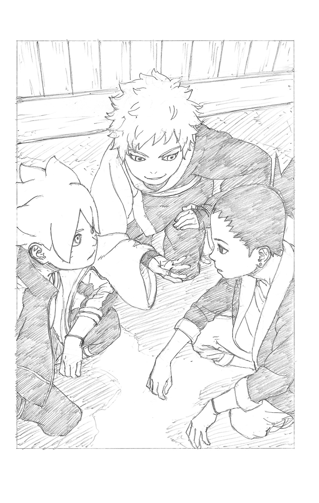
「みんなを？ だったらなおさら僕が適任じゃないの？ 僕なら、いざとなれば――」
――シノを殺すこともできる。シカダイの言う通り、まだ奥の手として隠し持っているあの〝モード〟を使えば......何よりこの二人と違って、本気で殺し合うことにも躊躇はない。そう続けようとしたミツキを、ボルトはさえぎった。
「ちげーよ。みんな、ってのはシノ先生も、お前も、全員含めてってことだ！ オレは誰一人死なせやしねぇ......最後まで諦めねぇぜ！」
「―――！」
ニカッと笑うその顔は、黄金の光を放っているかのようだった。
どんな状況でも、周囲を明るく照らす希望そのものの輝き。
闇に生きるしかできない者たちが求めてやまない、太陽の光。
（ボルト......君は、やっぱり）
ほんのわずかに、ミツキの口元が緩んだ。
「......わかったよ。だったら、僕にもやらせてほしい役目があるんだ」
＊ ＊ ＊
ごうごうと、水が流れ落ちる音。
森の中を流れる川が次第に太さを増していく。勢い良く流れ落ちる滝壺が近いのだ。
その場所に、木々の間からゆっくりとシノが現れた。
「くくく......とうとう諦めて覚悟を決めたか、ボルト？」
ゆっくりと見上げる。木の上には、仁王立ちした教え子の姿。
「冗談！ 追いかけっこはここでオシマイにするだけだってばさ。逃げるくらいなら、ここで先生をぶっ倒して正気に戻してやる！」
クナイを構え、枝を蹴って頭上から飛びかかる。
だが、シノの背中から湧き出た蟲の群れが触手のように伸びて、あっさりその体は拘束されてしまった。
と思った瞬間、煙に包まれて弾けるように消えるボルト。
もう一人のボルトが背後の茂みから飛び出した。
「ふん、使い古された手だ。こいつも影分身......そしてこいつもだ！」
二体目もネットのように広がった寄壊蟲で動きを止められ、そして地中から飛び出した三体目もバックジャンプ後に蟲の津波で吹き飛ばすシノ。
かつてナルトたちの戦いを見てきた彼に、この程度の作戦が読めないわけはない。
「そして本命は真上からの本体――」
落下の勢いを加えて降ってくる最後のボルトに目もくれず、
「と見せかけてお前だぁ、シカダイ！」
それを飛び退いてかわすと、着地地点の背後で印を構えていたシカダイを蟲で作り出した巨大な腕でつかんだ。
「ぐっ......見破られた!?」
「ぐわああッ!?」
ボルトもまた、シノがその場に残した蟲によって全身を絡めとられている。チャクラを吸われ、苦悶にうめく二人。
「おおかた影縛りをかけ、オレもろとも水中に飛び込むことで蟲を封じるつもりだったな？ その程度の策が見抜けないと思ったか」
足下が水際であることをちらりと確認し、言い捨てるシノ。影分身による奇襲が、自分をこの位置に追い込む布石であることもお見通しだ。
「さて、あとは転校生......お前だが」
少し離れた位置、水際を背に立ち尽くすミツキめがけ、油断ない視線を送る。
「一人でどうあがくつもりだ？ 言っておくが、今使っている蟲の拘束力は段違いだ。さっきのちゃちな風遁程度でこいつらを助け出せはしないぞ」
万事休すかに見えたその時、シカダイは苦しい息の下で不敵に笑った。
「へへっ......それはどうですかね？」
「む!?」
突然、誰もいないはずの水の中から、水しぶきをあげて何かが飛び出してきた。
「な......」
それは大蛇のように伸びた腕だ。離れているミツキの腕の先が、水中を通ってシノの足をつかみ、そのまま一緒に飛び込むことで、水の中に引きずり込む。
（そうか、本命はこれか！ あらかじめ伸ばした腕を水中に沈めて隠し、その位置までオレを誘導した......！）
ただ立ちすくんでいたように見えたミツキは、動かなかったのではなく動けなかったのだ。長い袖でさりげなく隠した腕の先が、水中に消えているのを悟られぬように......これこそが、シカダイの作戦だった。
逃がさぬよう水中で腕を何重にも巻きつけると同時に、シノに接近して羽交い締め状態となるミツキ。
（悪くない作戦だ......だが、甘いぞ！）
シノの体内から、新たな別の群れが出現した。
それは水中だろうと意に介さず、ミツキの全身をみるみる覆っていく。
「!?」
「確かに多くの昆虫は水の中が不得手だ。だが、そうでない蟲も我が軍団には居る......あらゆる場所に対応する寄壊蟲、舐めてもらっては困るぞ！」
滝壺の方へと絡み合って流されていきながら、水面に顔を出して勝ち誇るシノ。このままミツキのチャクラを吸い取ってしまえば、正真正銘のゲームオーバーだ。
しかし、地上に残されたボルトたちが浮かべたのは、絶望の表情ではなかった。
「ああ......ナメちゃいないってばさ！ それくらい、わかってる！」
「先生を水に落とした狙いは、それだけじゃねーよ」
「む......!?」
密着したミツキの全身が、パリパリと青白いチャクラを放ち始めた。放電現象だ。
（ま、まさか......こいつ、雷遁まで!? ま、まずい！）
水の中、しかもこの状態でそんなものを放たれるということは。
「いっけぇぇ、ミツキ!!」
「ああ、ボルト......雷遁・蛇雷！」
蛇のようなシルエットの雷光が躍り、激しいスパークが水面をカッと白熱させた。
全身が水に濡れているだけでなく、体内から新たに放出中の蟲をミツキの体に密着させている......つまり、その体表面から放たれる雷遁は、シノの体の内部まで直撃するということだ。
「ごはっ――」
ごぼり、と空気の塊がシノの口から吐き出された。
さしもの歴戦の忍者も気を失うに十分な、防御不能の衝撃。そして、その体から禍々しい闇色のチャクラが抜けていくのを、蟲の拘束から解放されたボルトははっきりと見た。
「や......やったぜ！」
「お、おい！ でもあいつら、思った以上のスピードで流されてくぜ！」
滝壺めがけてごうごうと二人の体を押し流していく急流の勢いが、想定以上に速い。その先に待つ切り立った崖まで、もう猶予はない。
ミツキは力を振り絞ってシノの体を岸めがけ投げ上げた。慌ててそれをキャッチするシカダイ。
「ミツキ、お前も早く！」
流れと平行に走りながら必死に叫ぶボルトだが、ミツキの体はぐったりした様子で激流をただ流されていく。
「まずい、あいつチャクラ切れみたいだぞ！」
「ごめん......思ったより消耗しちゃったみたいだ。僕のことは、いいから構わないで」
この程度では死なないと考えているのか、それとも覚悟を決めたのか。こんな時でも、平然と微笑みかけるミツキ。
だが、対照的に必死の形相で追うボルトは、
「何バカなこと言ってんだ！」
意を決し、急流に飛び込んだ。
「な、あいつ、なんてムチャを!?」
自分ももはや体力などほとんど残っていないはずなのに、ミツキめがけ決死の勢いで泳ぐと、その体を抱えて岸に連れ戻そうとする。
「ボルト......君は、なぜ......そこまで......？」
金色の目を見開いたミツキは、不可思議な驚きに心を打たれていた。
シカダイや自分のような、計算に基づいての行動とは違う。後先を考えず、自分の命すらあっさり危険に晒してでも、ボルトは決してためらわない。
その決意がどこから来るのか、ミツキにはそれがわからなかった。
「へへ......そんなの、決まってるぜ。ダサくねぇ、カッコいいオレになるために、そう簡単に諦めちゃいられねーんだ......だからお前も、最後まで諦めるなってばさ！」
最後まで、諦めるな。
ボルトの叫びは、気を失っていた一人の男の耳にまで届いた。
「う......お、オレは......？」
全身を貫く痛みにうめきながら、シノは正気を取り戻した。
その耳に、流されていくボルトたちめがけ絶望的な叫びをあげるシカダイの声が届く。
「む......い、いかん......！」
立ち上がろうとするも、雷遁の衝撃で四肢がろくに動かない。蟲を操ろうとしても、チャクラすらほとんど残されていない。
（だが......だが、このままではオレの生徒たちが......！）
グッと、拳を握りしめる。
決意の表情で前を向き、這うようにして地面を進む。
「そうだ......この程度で、諦めてなるものか......！ 蟲よ、オレのチャクラを最後のひと搾りまでくれてやる......だから届け、ゆけ！ オレの大切な......生徒たちの下へ！」
「う、うわあああっっ!?」
ついに崖から投げ出されたボルトとミツキ。
だが、次の瞬間、空中の二人をクッションのごとく広がった寄壊蟲の群れが、優しくキャッチして受け止めた。
「シノ先生!?」
驚いて岸を見たボルトに、荒い息を吐きつつ、シノは安堵の笑みを向けた。
「最後まで諦めるな、か......おかげで目が覚めたよ、ボルト」
＊ ＊ ＊
ミツキが目を覚ましたのは、アカデミーの医務室だった。
心配げなボルトとシカダイが、自分を覗き込んでいる。
「おおっ、気がついたってばさ！」
「もう心配いらねえ。気を失ってたお前さんを、ここに運び込んできたんだよ」
「ありがとな、ミツキ！ お前のおかげで、みんな助かったんだ」
満面の笑みのボルトの横で、シカダイはバツが悪そうに視線をそらした。
「その、なんだ......すまなかったな。実を言うと、お前のことは怪しいヤツだって疑ってかかってた」
ミツキはくすりと笑い、
「そんなの、どっちでもいいよ。気にしてないし、実際怪しいもんね、僕」
「ぷっ......なんだよそりゃ」
つられて屈託なく笑う二人。
「？ 僕、何か変なこと言ったかな......？」
相変わらずのズレた反応をしつつ、
（それにしても......僕は、シノ先生を殺すほかあの状況を解決する方法はないと思ってた。なのに、ボルトはそれ以外の手段で全員を救ってみせた......これがチームワーク、か）
内心に湧き上がった名状しがたい感情に、自分でも不思議な感覚を覚える。
なぜか、悪い気はしなかった。
『あなたの太陽を探しなさい、ミツキ』
かつて彼の〝親〟は、そう言った。
そうすることで闇の中に生まれた者であっても、陽光を反射する月のように、闇を照らせるかもしれないと。
ボルトと共にあることで、自分はそうなれるかもしれない。
（でも......僕がこの里に来た本当の理由を知ったら、君はどんな反応をするんだろうか）
何も知らずに笑うボルトの顔を見つめながら、ミツキはふと、そんなことを考えた。
＊ ＊ ＊
「本当にすまなかった、みんな！」
保健室を出た三人を待っていたのは、いきなりのシノの土下座だった。
「せ、先生!?」
「あの時のオレは、明らかにどうかしていた......守るべき生徒に、本気で襲いかかるなどと......！」
「ちょ、顔上げてくださいよ。その様子じゃ、やっぱ正気じゃなかったんすね？」
やはり、デンキやメタルの時のような異変が起きていたのだ。
「ああ、ぼんやりと覚えていても、まるで現実感がない状態だった......悪夢の中にいるような、何かに感情を操られていたかのような......」
そこでグッと表情を険しくし、宣言する。
「だからといって、お前たちにしたことは許されない。里の上層部にすべてを報告した後、オレは......責任をとって教師を辞めるつもりだ！」
「ちょ、ちょっと待ってくれよ、シノ先生！」
慌ててシノを起こすボルト。
「誰も大ケガとかもしなかったのに、大げさだってばさ。それにほら、元はと言やオレらが怒らせちまったせいだし......なあ？」
シカダイも恥ずかしそうにうなずき、頭を下げる。
「なんつーか、先生があんなに思い詰めてたなんて気づかなくて......すんません」
「へへっ、それに先生ってば、あんなに強かったんだな。なんか、見直したってばさ」
「お、お前たち......！」
意外な反応に、驚きと共に立ちすくむシノ。そのゴーグルの陰で、うっすらと涙がにじんだ。
（確かに......教師であることを諦めるのは、まだ早い......か）
結論を急ぐのも、自己嫌悪に陥るのも。
生徒も教師も人間である以上、完璧な者などいない。だとすれば互いに理解し合い、共に成長していくためにも、もう少し時間をかけてみるべきなのかもしれない。
しばしの沈黙の後、シノは涙を見られまいと背を向け、
「......お前たち。では明日からは私の話を、少しは真面目に聞くんだぞ」
教師としての口調に戻り、優しい声で、照れ隠しにそう告げた。
顔を見合わせ、笑顔でボルトとシカダイが唱和する。
「はーい！」
そしてその様子を、一人物珍しそうに眺めるミツキは、昨日の自分の言葉を思い出していた。
今さら、この人から学ぶことなんてあるのか......そう、あの時は思ったけれど。
「なるほどね、確かに......あるかも」
「ん、何か言ったかミツキ？」
「ううん、なんでもないよ」
教師と生徒たちは、歩調を合わせて廊下を歩いていく。
いつも通りの日常へと向かって。
＊ ＊ ＊
自宅の縁側でくつろぎながら、紅はふと、穏やかな表情で部屋に飾られた古い写真を見つめた。
そこにはかつて受け持った第八班......若き日のヒナタ、犬塚キバ、そしてシノが共に写っている。
「シノ......あんたは口下手で不器用だけど、それでもあんたなりに周りに歩み寄ろうとする努力を決して諦めなかった。だからこそ、いい仲間にだって恵まれたのよ」
どんな時にも諦めない、静かに熱く燃え上がる心。
それこそがシノの持つ、教師としての資質だと、かつての教官は確信していた。
「だからきっと、大丈夫。あんたはうまくやってける......」
写真の中で一見、ひとり仏頂面でたたずむシノ。
だがその口元には、よく見なければわからないかすかな笑みが、確かに浮かんでいた。
＊ ＊ ＊
火影室。
シノを前にして報告書に目を通し終えたナルトは、ゆっくりとそれを机に置いた。
「面目ない......オレとしたことが、どこで精神に影響を受けたのかまるで自覚症状がなかった。あれは幻術とも違う、何かもっと別のモノが作用しているように思えた」
木ノ葉一の幻術使いとも呼ばれた紅を師に持つシノの的確な分析に、シカマルがうなずく。
「ま、冷静さをなくしてたのはある意味、不幸中の幸いってヤツだぜ。お前さんが冷静なまま襲いかかってたら、ガキどもはひとたまりもなかったろーよ」
その口調に、シノを責めるようなニュアンスは欠片もない。
ベテランの忍だからこそ、精神に作用する術の恐ろしさをよく知っているのだ。
いかに強大なチャクラや術の持ち主でも、そのような類いに囚われれば脱出は難しい。ましてや、初見のものならなおさらである。
場の空気を和ませるように、ナルトがニカッと笑う。
シノに、子供時代を思い出させる笑みだ。
「こんな時に言うのもなんだけどよ、ありがとな、シノ。いつもあいつらの面倒見てくれて。悪ガキばっかで大変だろ？」
「ナルト......ふっ、まあ、な。そんなところまで似なくともよいのだがな」
「うっ、それを言われると返す言葉もないってばよ」
一瞬少年時代に戻ったかのように、笑い合う二人。
「にしても、だ。上忍クラスの心にすら大きな影響を及ぼす謎の力......こりゃ、本腰入れて調査する必要があるぜ」
「ああ、シカマルの言う通りだ。オレたちの里で、放置できない危険な事態が進行している......忙しいとこ悪いが、調査に手ぇ貸してくれるか、シノ？」
「もちろんです、七代目」
口調を改め、姿勢を正して答えるシノ。
折しも窓の外では、黒々とした不吉な雲が広がり、太陽を覆い隠しつつあった――。
＊ ＊ ＊
暗黒の空に星々がまたたき、荒涼とした灰色の大地が広がる、どことも知れぬ場所。
生き物一ついないはずのそこに、ゆらり浮遊してたたずむ人影が一つ。
袈裟にも似た奇妙な衣をまとった、透き通るように美しい白色の髪と肌を持つ美丈夫だ。若々しい外見をしているが、同時にまるで千年の時を孤独に生きてきたような、老成した年齢不詳の雰囲気をまとっている。
「星辰が、不吉の兆しを見せている――」
つぶやいた彼が、瞳を閉じたまま顔を向けた先には、青い星がある。
ボルトたちの生きる星......チャクラで溢れる星が。
「収奪の時は、近い。鍵はやはり――あの瞳を持つ彼、か」
（つづく）
■初出
ＢＯＲＵＴＯ －ボルト－ -NARUTO NEXT GENERATIONS- 書き下ろし
この作品は、ＴＶアニメーション『ＢＯＲＵＴＯ －ボルト－ NARUTO NEXT GENERATIONS』をノベライズしたものです。
ジャンプジェイブックスDIGITAL
ＢＯＲＵＴＯ－ボルト－ -NARUTO NEXT GENERATIONS- ＮＯＶＥＬ １
青天を翔る新たな木の葉たち！
原作 岸本斉史 池本幹雄 小太刀右京
小説 重信康（チーム・バレルロール）
© 2017 M.KISHIMOTO / M.IKEMOTO / U.KODACHI / K.SHIGENOBU
© 岸本斉史 スコット／集英社・テレビ東京・ぴえろ
この電子書籍は、ジャンプジェイブックス「ＢＯＲＵＴＯ －ボルト－ -NARUTO NEXT GENERATIONS- ＮＯＶＥＬ １ 青天を翔る新たな木の葉たち！」
２０１７年５月７日発行の第１刷を底本としています。
装丁 高橋健二（テラエンジン）
編集協力 添田洋平（つばめプロダクション）
編集人 島田久央
発行者 鈴木晴彦
発行所 株式会社 集英社
〒１０１－８０５０
東京都千代田区一ツ橋２丁目５番10号
０３－３２３０－６０８０（読者係）
制作所 株式会社ＩＣＥ
本作品の全部または一部を無断で複製、転載、改竄、インターネット上に掲載すること、および有償無償に関わらず、本データを第三者に譲渡することを禁じます。なお個人利用の目的であっても、コピーガードを解除しての複製は、法律で禁じられています。